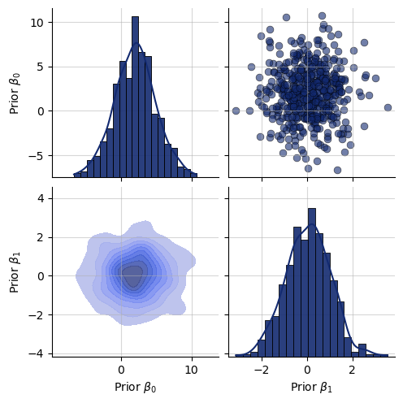
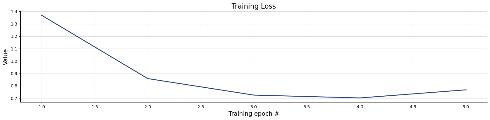
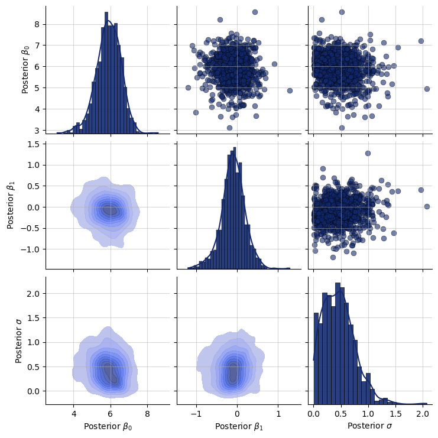
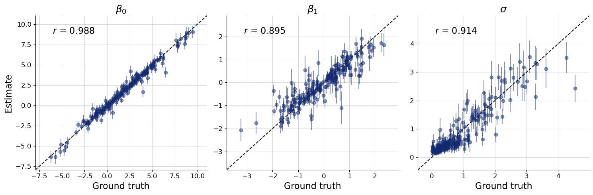
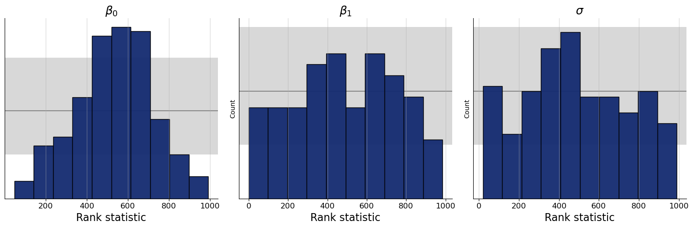
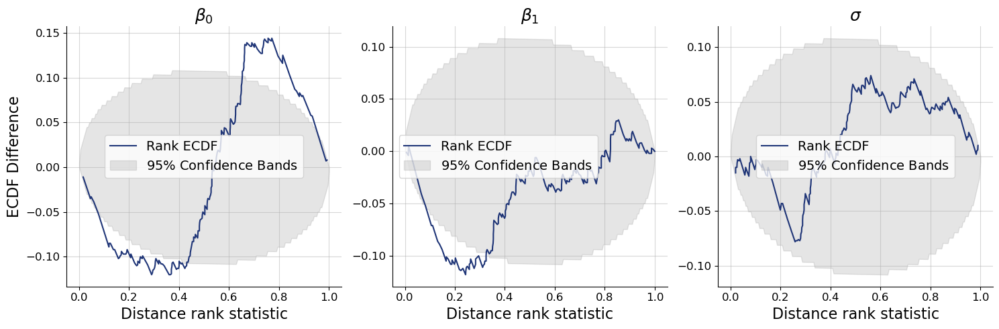
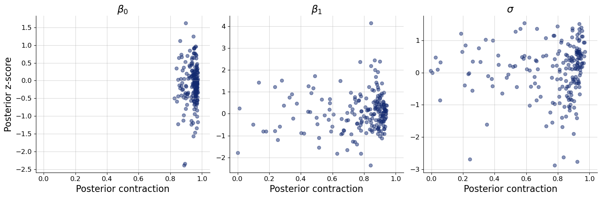

<!DOCTYPE html>


<html lang="en" data-content_root="../" >

  <head>
    <meta charset="utf-8" />
    <meta name="viewport" content="width=device-width, initial-scale=1.0" /><meta name="viewport" content="width=device-width, initial-scale=1" />

    <title>4. Amortized Posterior Estimation for Linear Regression &#8212; BayesFlow: Amortized Bayesian Inference</title>
  
  
  
  <script data-cfasync="false">
    document.documentElement.dataset.mode = localStorage.getItem("mode") || "";
    document.documentElement.dataset.theme = localStorage.getItem("theme") || "";
  </script>
  <!--
    this give us a css class that will be invisible only if js is disabled
  -->
  <noscript>
    <style>
      .pst-js-only { display: none !important; }

    </style>
  </noscript>
  
  <!-- Loaded before other Sphinx assets -->
  <link href="../_static/styles/theme.css?digest=8878045cc6db502f8baf" rel="stylesheet" />
<link href="../_static/styles/pydata-sphinx-theme.css?digest=8878045cc6db502f8baf" rel="stylesheet" />

    <link rel="stylesheet" type="text/css" href="../_static/pygments.css?v=a746c00c" />
    <link rel="stylesheet" type="text/css" href="../_static/styles/sphinx-book-theme.css?v=a3416100" />
    <link rel="stylesheet" type="text/css" href="../_static/mystnb.4510f1fc1dee50b3e5859aac5469c37c29e427902b24a333a5f9fcb2f0b3ac41.css" />
    <link rel="stylesheet" type="text/css" href="../_static/sphinx-design.min.css?v=95c83b7e" />
    <link rel="stylesheet" type="text/css" href="../_static/custom.css?v=8fec244e" />
  
  <!-- So that users can add custom icons -->
  <script src="../_static/scripts/fontawesome.js?digest=8878045cc6db502f8baf"></script>
  <!-- Pre-loaded scripts that we'll load fully later -->
  <link rel="preload" as="script" href="../_static/scripts/bootstrap.js?digest=8878045cc6db502f8baf" />
<link rel="preload" as="script" href="../_static/scripts/pydata-sphinx-theme.js?digest=8878045cc6db502f8baf" />

    <script src="../_static/documentation_options.js?v=9eb32ce0"></script>
    <script src="../_static/doctools.js?v=9bcbadda"></script>
    <script src="../_static/sphinx_highlight.js?v=dc90522c"></script>
    <script src="../_static/scripts/sphinx-book-theme.js?v=887ef09a"></script>
    <script src="../_static/design-tabs.js?v=f930bc37"></script>
    <script>window.MathJax = {"options": {"processHtmlClass": "tex2jax_process|mathjax_process|math|output_area"}}</script>
    <script defer="defer" src="https://cdn.jsdelivr.net/npm/mathjax@3/es5/tex-mml-chtml.js"></script>
    <script>DOCUMENTATION_OPTIONS.pagename = '_examples/Linear_Regression';</script>
    <script src="https://cdnjs.cloudflare.com/ajax/libs/require.js/2.3.4/require.min.js"></script>
    <link rel="canonical" href="https://www.bayesflow.org/_examples/Linear_Regression.html" />
    <link rel="icon" href="../_static/bayesflow_hex.ico"/>
    <link rel="author" title="About these documents" href="../about.html" />
    <link rel="index" title="Index" href="../genindex.html" />
    <link rel="search" title="Search" href="../search.html" />
    <link rel="next" title="5. Hyperparameter Optimization Using Optuna" href="Hyperparameter_Optimization.html" />
    <link rel="prev" title="3. Posterior Estimation for SIR-like Models" href="SIR_PosteriorEstimation.html" />
  <meta name="viewport" content="width=device-width, initial-scale=1"/>
  <meta name="docsearch:language" content="en"/>
  <meta name="docsearch:version" content="" />
  </head>
  
  
  <body data-bs-spy="scroll" data-bs-target=".bd-toc-nav" data-offset="180" data-bs-root-margin="0px 0px -60%" data-default-mode="">

  
  
  <div id="pst-skip-link" class="skip-link d-print-none"><a href="#main-content">Skip to main content</a></div>
  
  <div id="pst-scroll-pixel-helper"></div>
  
  <button type="button" class="btn rounded-pill" id="pst-back-to-top">
    <i class="fa-solid fa-arrow-up"></i>Back to top</button>

  
  <dialog id="pst-search-dialog">
    
<form class="bd-search d-flex align-items-center"
      action="../search.html"
      method="get">
  <i class="fa-solid fa-magnifying-glass"></i>
  <input type="search"
         class="form-control"
         name="q"
         placeholder="Search..."
         aria-label="Search..."
         autocomplete="off"
         autocorrect="off"
         autocapitalize="off"
         spellcheck="false"/>
  <span class="search-button__kbd-shortcut"><kbd class="kbd-shortcut__modifier">Ctrl</kbd>+<kbd>K</kbd></span>
</form>
  </dialog>

  <div class="pst-async-banner-revealer d-none">
  <aside id="bd-header-version-warning" class="d-none d-print-none" aria-label="Version warning"></aside>
</div>

  
    <header class="bd-header navbar navbar-expand-lg bd-navbar d-print-none">
    </header>
  

  <div class="bd-container">
    <div class="bd-container__inner bd-page-width">
      
      
      
      <dialog id="pst-primary-sidebar-modal"></dialog>
      <div id="pst-primary-sidebar" class="bd-sidebar-primary bd-sidebar">
        

  
  <div class="sidebar-header-items sidebar-primary__section">
    
    
    
    
  </div>
  
    <div class="sidebar-primary-items__start sidebar-primary__section">
        <div class="sidebar-primary-item">

  
    
  

<a class="navbar-brand logo" href="../index.html">
  
  
  
  
  
    
    
      
    
    
    
    
  
  
</a></div>
        <div class="sidebar-primary-item">

<button class="btn search-button-field search-button__button pst-js-only" title="Search" aria-label="Search" data-bs-placement="bottom" data-bs-toggle="tooltip">
 <i class="fa-solid fa-magnifying-glass"></i>
 <span class="search-button__default-text">Search</span>
 <span class="search-button__kbd-shortcut"><kbd class="kbd-shortcut__modifier">Ctrl</kbd>+<kbd class="kbd-shortcut__modifier">K</kbd></span>
</button></div>
        <div class="sidebar-primary-item"><nav class="bd-links bd-docs-nav" aria-label="Main">
    <div class="bd-toc-item navbar-nav active">
        <ul class="current nav bd-sidenav">
<li class="toctree-l1"><a class="reference internal" href="../index.html">BayesFlow</a></li>
<li class="toctree-l1 current active has-children"><a class="reference internal" href="../examples.html">Examples</a><details open="open"><summary><span class="toctree-toggle" role="presentation"><i class="fa-solid fa-chevron-down"></i></span></summary><ul class="current">
<li class="toctree-l2"><a class="reference internal" href="Quickstart_Amortized_Posterior_Estimation.html">1. Quickstart: Amortized Posterior Estimation</a></li>
<li class="toctree-l2"><a class="reference internal" href="TwoMoons_StarterNotebook.html">2. Two Moons: Tackling Bimodal Posteriors</a></li>
<li class="toctree-l2"><a class="reference internal" href="SIR_PosteriorEstimation.html">3. Posterior Estimation for SIR-like Models</a></li>
<li class="toctree-l2 current active"><a class="current reference internal" href="#">4. Amortized Posterior Estimation for Linear Regression</a></li>
<li class="toctree-l2"><a class="reference internal" href="Hyperparameter_Optimization.html">5. Hyperparameter Optimization Using Optuna</a></li>
<li class="toctree-l2"><a class="reference internal" href="Bayesian_Experimental_Design.html">6. Bayesian Experimental Design (BED) with BayesFlow and PyTorch</a></li>
<li class="toctree-l2"><a class="reference internal" href="SBML_Model_Posterior_Estimation.html">7. Posterior Estimation of SBML Models</a></li>
</ul>
</details></li>
<li class="toctree-l1 has-children"><a class="reference internal" href="../api/bayesflow.html">Public API: bayesflow package</a><details><summary><span class="toctree-toggle" role="presentation"><i class="fa-solid fa-chevron-down"></i></span></summary><ul>
<li class="toctree-l2 has-children"><a class="reference internal" href="../api/bayesflow.adapters.html">bayesflow.adapters</a><details><summary><span class="toctree-toggle" role="presentation"><i class="fa-solid fa-chevron-down"></i></span></summary><ul>
<li class="toctree-l3"><a class="reference internal" href="../api/bayesflow.adapters.Adapter.html">bayesflow.adapters.Adapter</a></li>
<li class="toctree-l3 has-children"><a class="reference internal" href="../api/bayesflow.adapters.adapter.html">bayesflow.adapters.adapter</a><details><summary><span class="toctree-toggle" role="presentation"><i class="fa-solid fa-chevron-down"></i></span></summary><ul>
<li class="toctree-l4"><a class="reference internal" href="../api/bayesflow.adapters.adapter.deserialize.html">bayesflow.adapters.adapter.deserialize</a></li>
<li class="toctree-l4"><a class="reference internal" href="../api/bayesflow.adapters.adapter.serializable.html">bayesflow.adapters.adapter.serializable</a></li>
<li class="toctree-l4"><a class="reference internal" href="../api/bayesflow.adapters.adapter.serialize.html">bayesflow.adapters.adapter.serialize</a></li>
<li class="toctree-l4"><a class="reference internal" href="../api/bayesflow.adapters.adapter.Adapter.html">bayesflow.adapters.adapter.Adapter</a></li>
<li class="toctree-l4"><a class="reference internal" href="../api/bayesflow.adapters.adapter.AsSet.html">bayesflow.adapters.adapter.AsSet</a></li>
<li class="toctree-l4"><a class="reference internal" href="../api/bayesflow.adapters.adapter.AsTimeSeries.html">bayesflow.adapters.adapter.AsTimeSeries</a></li>
<li class="toctree-l4"><a class="reference internal" href="../api/bayesflow.adapters.adapter.Broadcast.html">bayesflow.adapters.adapter.Broadcast</a></li>
<li class="toctree-l4"><a class="reference internal" href="../api/bayesflow.adapters.adapter.Callable.html">bayesflow.adapters.adapter.Callable</a></li>
<li class="toctree-l4"><a class="reference internal" href="../api/bayesflow.adapters.adapter.Concatenate.html">bayesflow.adapters.adapter.Concatenate</a></li>
<li class="toctree-l4"><a class="reference internal" href="../api/bayesflow.adapters.adapter.Constrain.html">bayesflow.adapters.adapter.Constrain</a></li>
<li class="toctree-l4"><a class="reference internal" href="../api/bayesflow.adapters.adapter.ConvertDType.html">bayesflow.adapters.adapter.ConvertDType</a></li>
<li class="toctree-l4"><a class="reference internal" href="../api/bayesflow.adapters.adapter.Drop.html">bayesflow.adapters.adapter.Drop</a></li>
<li class="toctree-l4"><a class="reference internal" href="../api/bayesflow.adapters.adapter.ExpandDims.html">bayesflow.adapters.adapter.ExpandDims</a></li>
<li class="toctree-l4"><a class="reference internal" href="../api/bayesflow.adapters.adapter.FilterTransform.html">bayesflow.adapters.adapter.FilterTransform</a></li>
<li class="toctree-l4"><a class="reference internal" href="../api/bayesflow.adapters.adapter.Keep.html">bayesflow.adapters.adapter.Keep</a></li>
<li class="toctree-l4"><a class="reference internal" href="../api/bayesflow.adapters.adapter.LambdaTransform.html">bayesflow.adapters.adapter.LambdaTransform</a></li>
<li class="toctree-l4"><a class="reference internal" href="../api/bayesflow.adapters.adapter.MapTransform.html">bayesflow.adapters.adapter.MapTransform</a></li>
<li class="toctree-l4"><a class="reference internal" href="../api/bayesflow.adapters.adapter.OneHot.html">bayesflow.adapters.adapter.OneHot</a></li>
<li class="toctree-l4"><a class="reference internal" href="../api/bayesflow.adapters.adapter.Predicate.html">bayesflow.adapters.adapter.Predicate</a></li>
<li class="toctree-l4"><a class="reference internal" href="../api/bayesflow.adapters.adapter.Rename.html">bayesflow.adapters.adapter.Rename</a></li>
<li class="toctree-l4"><a class="reference internal" href="../api/bayesflow.adapters.adapter.Sequence.html">bayesflow.adapters.adapter.Sequence</a></li>
<li class="toctree-l4"><a class="reference internal" href="../api/bayesflow.adapters.adapter.Standardize.html">bayesflow.adapters.adapter.Standardize</a></li>
<li class="toctree-l4"><a class="reference internal" href="../api/bayesflow.adapters.adapter.ToArray.html">bayesflow.adapters.adapter.ToArray</a></li>
<li class="toctree-l4"><a class="reference internal" href="../api/bayesflow.adapters.adapter.Transform.html">bayesflow.adapters.adapter.Transform</a></li>
</ul>
</details></li>
<li class="toctree-l3 has-children"><a class="reference internal" href="../api/bayesflow.adapters.transforms.html">bayesflow.adapters.transforms</a><details><summary><span class="toctree-toggle" role="presentation"><i class="fa-solid fa-chevron-down"></i></span></summary><ul>
<li class="toctree-l4"><a class="reference internal" href="../api/bayesflow.adapters.transforms.AsSet.html">bayesflow.adapters.transforms.AsSet</a></li>
<li class="toctree-l4"><a class="reference internal" href="../api/bayesflow.adapters.transforms.AsTimeSeries.html">bayesflow.adapters.transforms.AsTimeSeries</a></li>
<li class="toctree-l4"><a class="reference internal" href="../api/bayesflow.adapters.transforms.Broadcast.html">bayesflow.adapters.transforms.Broadcast</a></li>
<li class="toctree-l4"><a class="reference internal" href="../api/bayesflow.adapters.transforms.Concatenate.html">bayesflow.adapters.transforms.Concatenate</a></li>
<li class="toctree-l4"><a class="reference internal" href="../api/bayesflow.adapters.transforms.Constrain.html">bayesflow.adapters.transforms.Constrain</a></li>
<li class="toctree-l4"><a class="reference internal" href="../api/bayesflow.adapters.transforms.ConvertDType.html">bayesflow.adapters.transforms.ConvertDType</a></li>
<li class="toctree-l4"><a class="reference internal" href="../api/bayesflow.adapters.transforms.Drop.html">bayesflow.adapters.transforms.Drop</a></li>
<li class="toctree-l4"><a class="reference internal" href="../api/bayesflow.adapters.transforms.ElementwiseTransform.html">bayesflow.adapters.transforms.ElementwiseTransform</a></li>
<li class="toctree-l4"><a class="reference internal" href="../api/bayesflow.adapters.transforms.ExpandDims.html">bayesflow.adapters.transforms.ExpandDims</a></li>
<li class="toctree-l4"><a class="reference internal" href="../api/bayesflow.adapters.transforms.FilterTransform.html">bayesflow.adapters.transforms.FilterTransform</a></li>
<li class="toctree-l4"><a class="reference internal" href="../api/bayesflow.adapters.transforms.Keep.html">bayesflow.adapters.transforms.Keep</a></li>
<li class="toctree-l4"><a class="reference internal" href="../api/bayesflow.adapters.transforms.LambdaTransform.html">bayesflow.adapters.transforms.LambdaTransform</a></li>
<li class="toctree-l4"><a class="reference internal" href="../api/bayesflow.adapters.transforms.MapTransform.html">bayesflow.adapters.transforms.MapTransform</a></li>
<li class="toctree-l4"><a class="reference internal" href="../api/bayesflow.adapters.transforms.OneHot.html">bayesflow.adapters.transforms.OneHot</a></li>
<li class="toctree-l4"><a class="reference internal" href="../api/bayesflow.adapters.transforms.Rename.html">bayesflow.adapters.transforms.Rename</a></li>
<li class="toctree-l4"><a class="reference internal" href="../api/bayesflow.adapters.transforms.Standardize.html">bayesflow.adapters.transforms.Standardize</a></li>
<li class="toctree-l4"><a class="reference internal" href="../api/bayesflow.adapters.transforms.ToArray.html">bayesflow.adapters.transforms.ToArray</a></li>
<li class="toctree-l4"><a class="reference internal" href="../api/bayesflow.adapters.transforms.Transform.html">bayesflow.adapters.transforms.Transform</a></li>
<li class="toctree-l4"><a class="reference internal" href="../api/bayesflow.adapters.transforms.as_set.html">bayesflow.adapters.transforms.as_set</a></li>
<li class="toctree-l4"><a class="reference internal" href="../api/bayesflow.adapters.transforms.as_time_series.html">bayesflow.adapters.transforms.as_time_series</a></li>
<li class="toctree-l4"><a class="reference internal" href="../api/bayesflow.adapters.transforms.broadcast.html">bayesflow.adapters.transforms.broadcast</a></li>
<li class="toctree-l4"><a class="reference internal" href="../api/bayesflow.adapters.transforms.concatenate.html">bayesflow.adapters.transforms.concatenate</a></li>
<li class="toctree-l4"><a class="reference internal" href="../api/bayesflow.adapters.transforms.constrain.html">bayesflow.adapters.transforms.constrain</a></li>
<li class="toctree-l4"><a class="reference internal" href="../api/bayesflow.adapters.transforms.convert_dtype.html">bayesflow.adapters.transforms.convert_dtype</a></li>
<li class="toctree-l4"><a class="reference internal" href="../api/bayesflow.adapters.transforms.drop.html">bayesflow.adapters.transforms.drop</a></li>
<li class="toctree-l4"><a class="reference internal" href="../api/bayesflow.adapters.transforms.elementwise_transform.html">bayesflow.adapters.transforms.elementwise_transform</a></li>
<li class="toctree-l4"><a class="reference internal" href="../api/bayesflow.adapters.transforms.expand_dims.html">bayesflow.adapters.transforms.expand_dims</a></li>
<li class="toctree-l4"><a class="reference internal" href="../api/bayesflow.adapters.transforms.filter_transform.html">bayesflow.adapters.transforms.filter_transform</a></li>
<li class="toctree-l4"><a class="reference internal" href="../api/bayesflow.adapters.transforms.keep.html">bayesflow.adapters.transforms.keep</a></li>
<li class="toctree-l4"><a class="reference internal" href="../api/bayesflow.adapters.transforms.lambda_transform.html">bayesflow.adapters.transforms.lambda_transform</a></li>
<li class="toctree-l4"><a class="reference internal" href="../api/bayesflow.adapters.transforms.map_transform.html">bayesflow.adapters.transforms.map_transform</a></li>
<li class="toctree-l4"><a class="reference internal" href="../api/bayesflow.adapters.transforms.one_hot.html">bayesflow.adapters.transforms.one_hot</a></li>
<li class="toctree-l4"><a class="reference internal" href="../api/bayesflow.adapters.transforms.rename.html">bayesflow.adapters.transforms.rename</a></li>
<li class="toctree-l4"><a class="reference internal" href="../api/bayesflow.adapters.transforms.standardize.html">bayesflow.adapters.transforms.standardize</a></li>
<li class="toctree-l4"><a class="reference internal" href="../api/bayesflow.adapters.transforms.to_array.html">bayesflow.adapters.transforms.to_array</a></li>
<li class="toctree-l4"><a class="reference internal" href="../api/bayesflow.adapters.transforms.transform.html">bayesflow.adapters.transforms.transform</a></li>
</ul>
</details></li>
</ul>
</details></li>
<li class="toctree-l2 has-children"><a class="reference internal" href="../api/bayesflow.approximators.html">bayesflow.approximators</a><details><summary><span class="toctree-toggle" role="presentation"><i class="fa-solid fa-chevron-down"></i></span></summary><ul>
<li class="toctree-l3"><a class="reference internal" href="../api/bayesflow.approximators.Approximator.html">bayesflow.approximators.Approximator</a></li>
<li class="toctree-l3"><a class="reference internal" href="../api/bayesflow.approximators.ContinuousApproximator.html">bayesflow.approximators.ContinuousApproximator</a></li>
<li class="toctree-l3"><a class="reference internal" href="../api/bayesflow.approximators.ModelComparisonApproximator.html">bayesflow.approximators.ModelComparisonApproximator</a></li>
<li class="toctree-l3 has-children"><a class="reference internal" href="../api/bayesflow.approximators.approximator.html">bayesflow.approximators.approximator</a><details><summary><span class="toctree-toggle" role="presentation"><i class="fa-solid fa-chevron-down"></i></span></summary><ul>
<li class="toctree-l4"><a class="reference internal" href="../api/bayesflow.approximators.approximator.filter_kwargs.html">bayesflow.approximators.approximator.filter_kwargs</a></li>
<li class="toctree-l4"><a class="reference internal" href="../api/bayesflow.approximators.approximator.find_batch_size.html">bayesflow.approximators.approximator.find_batch_size</a></li>
<li class="toctree-l4"><a class="reference internal" href="../api/bayesflow.approximators.approximator.Adapter.html">bayesflow.approximators.approximator.Adapter</a></li>
<li class="toctree-l4"><a class="reference internal" href="../api/bayesflow.approximators.approximator.Approximator.html">bayesflow.approximators.approximator.Approximator</a></li>
<li class="toctree-l4"><a class="reference internal" href="../api/bayesflow.approximators.approximator.BackendApproximator.html">bayesflow.approximators.approximator.BackendApproximator</a></li>
<li class="toctree-l4"><a class="reference internal" href="../api/bayesflow.approximators.approximator.OnlineDataset.html">bayesflow.approximators.approximator.OnlineDataset</a></li>
<li class="toctree-l4"><a class="reference internal" href="../api/bayesflow.approximators.approximator.Simulator.html">bayesflow.approximators.approximator.Simulator</a></li>
</ul>
</details></li>
<li class="toctree-l3 has-children"><a class="reference internal" href="../api/bayesflow.approximators.backend_approximators.html">bayesflow.approximators.backend_approximators</a><details><summary><span class="toctree-toggle" role="presentation"><i class="fa-solid fa-chevron-down"></i></span></summary><ul>
<li class="toctree-l4"><a class="reference internal" href="../api/bayesflow.approximators.backend_approximators.BackendApproximator.html">bayesflow.approximators.backend_approximators.BackendApproximator</a></li>
<li class="toctree-l4"><a class="reference internal" href="../api/bayesflow.approximators.backend_approximators.backend_approximator.html">bayesflow.approximators.backend_approximators.backend_approximator</a></li>
<li class="toctree-l4"><a class="reference internal" href="../api/bayesflow.approximators.backend_approximators.jax_approximator.html">bayesflow.approximators.backend_approximators.jax_approximator</a></li>
<li class="toctree-l4"><a class="reference internal" href="../api/bayesflow.approximators.backend_approximators.numpy_approximator.html">bayesflow.approximators.backend_approximators.numpy_approximator</a></li>
<li class="toctree-l4"><a class="reference internal" href="../api/bayesflow.approximators.backend_approximators.tensorflow_approximator.html">bayesflow.approximators.backend_approximators.tensorflow_approximator</a></li>
<li class="toctree-l4"><a class="reference internal" href="../api/bayesflow.approximators.backend_approximators.torch_approximator.html">bayesflow.approximators.backend_approximators.torch_approximator</a></li>
</ul>
</details></li>
<li class="toctree-l3 has-children"><a class="reference internal" href="../api/bayesflow.approximators.continuous_approximator.html">bayesflow.approximators.continuous_approximator</a><details><summary><span class="toctree-toggle" role="presentation"><i class="fa-solid fa-chevron-down"></i></span></summary><ul>
<li class="toctree-l4"><a class="reference internal" href="../api/bayesflow.approximators.continuous_approximator.deserialize.html">bayesflow.approximators.continuous_approximator.deserialize</a></li>
<li class="toctree-l4"><a class="reference internal" href="../api/bayesflow.approximators.continuous_approximator.serializable.html">bayesflow.approximators.continuous_approximator.serializable</a></li>
<li class="toctree-l4"><a class="reference internal" href="../api/bayesflow.approximators.continuous_approximator.serialize.html">bayesflow.approximators.continuous_approximator.serialize</a></li>
<li class="toctree-l4"><a class="reference internal" href="../api/bayesflow.approximators.continuous_approximator.split_arrays.html">bayesflow.approximators.continuous_approximator.split_arrays</a></li>
<li class="toctree-l4"><a class="reference internal" href="../api/bayesflow.approximators.continuous_approximator.Adapter.html">bayesflow.approximators.continuous_approximator.Adapter</a></li>
<li class="toctree-l4"><a class="reference internal" href="../api/bayesflow.approximators.continuous_approximator.Approximator.html">bayesflow.approximators.continuous_approximator.Approximator</a></li>
<li class="toctree-l4"><a class="reference internal" href="../api/bayesflow.approximators.continuous_approximator.ContinuousApproximator.html">bayesflow.approximators.continuous_approximator.ContinuousApproximator</a></li>
<li class="toctree-l4"><a class="reference internal" href="../api/bayesflow.approximators.continuous_approximator.InferenceNetwork.html">bayesflow.approximators.continuous_approximator.InferenceNetwork</a></li>
<li class="toctree-l4"><a class="reference internal" href="../api/bayesflow.approximators.continuous_approximator.Sequence.html">bayesflow.approximators.continuous_approximator.Sequence</a></li>
<li class="toctree-l4"><a class="reference internal" href="../api/bayesflow.approximators.continuous_approximator.SummaryNetwork.html">bayesflow.approximators.continuous_approximator.SummaryNetwork</a></li>
</ul>
</details></li>
<li class="toctree-l3 has-children"><a class="reference internal" href="../api/bayesflow.approximators.model_comparison_approximator.html">bayesflow.approximators.model_comparison_approximator</a><details><summary><span class="toctree-toggle" role="presentation"><i class="fa-solid fa-chevron-down"></i></span></summary><ul>
<li class="toctree-l4"><a class="reference internal" href="../api/bayesflow.approximators.model_comparison_approximator.deserialize.html">bayesflow.approximators.model_comparison_approximator.deserialize</a></li>
<li class="toctree-l4"><a class="reference internal" href="../api/bayesflow.approximators.model_comparison_approximator.filter_kwargs.html">bayesflow.approximators.model_comparison_approximator.filter_kwargs</a></li>
<li class="toctree-l4"><a class="reference internal" href="../api/bayesflow.approximators.model_comparison_approximator.serializable.html">bayesflow.approximators.model_comparison_approximator.serializable</a></li>
<li class="toctree-l4"><a class="reference internal" href="../api/bayesflow.approximators.model_comparison_approximator.serialize.html">bayesflow.approximators.model_comparison_approximator.serialize</a></li>
<li class="toctree-l4"><a class="reference internal" href="../api/bayesflow.approximators.model_comparison_approximator.Adapter.html">bayesflow.approximators.model_comparison_approximator.Adapter</a></li>
<li class="toctree-l4"><a class="reference internal" href="../api/bayesflow.approximators.model_comparison_approximator.Approximator.html">bayesflow.approximators.model_comparison_approximator.Approximator</a></li>
<li class="toctree-l4"><a class="reference internal" href="../api/bayesflow.approximators.model_comparison_approximator.Mapping.html">bayesflow.approximators.model_comparison_approximator.Mapping</a></li>
<li class="toctree-l4"><a class="reference internal" href="../api/bayesflow.approximators.model_comparison_approximator.ModelComparisonApproximator.html">bayesflow.approximators.model_comparison_approximator.ModelComparisonApproximator</a></li>
<li class="toctree-l4"><a class="reference internal" href="../api/bayesflow.approximators.model_comparison_approximator.ModelComparisonSimulator.html">bayesflow.approximators.model_comparison_approximator.ModelComparisonSimulator</a></li>
<li class="toctree-l4"><a class="reference internal" href="../api/bayesflow.approximators.model_comparison_approximator.OnlineDataset.html">bayesflow.approximators.model_comparison_approximator.OnlineDataset</a></li>
<li class="toctree-l4"><a class="reference internal" href="../api/bayesflow.approximators.model_comparison_approximator.Sequence.html">bayesflow.approximators.model_comparison_approximator.Sequence</a></li>
<li class="toctree-l4"><a class="reference internal" href="../api/bayesflow.approximators.model_comparison_approximator.Simulator.html">bayesflow.approximators.model_comparison_approximator.Simulator</a></li>
<li class="toctree-l4"><a class="reference internal" href="../api/bayesflow.approximators.model_comparison_approximator.SummaryNetwork.html">bayesflow.approximators.model_comparison_approximator.SummaryNetwork</a></li>
</ul>
</details></li>
</ul>
</details></li>
<li class="toctree-l2 has-children"><a class="reference internal" href="../api/bayesflow.benchmarks.html">bayesflow.benchmarks</a><details><summary><span class="toctree-toggle" role="presentation"><i class="fa-solid fa-chevron-down"></i></span></summary><ul>
<li class="toctree-l3"><a class="reference internal" href="../api/bayesflow.benchmarks.LotkaVolterra.html">bayesflow.benchmarks.LotkaVolterra</a></li>
<li class="toctree-l3"><a class="reference internal" href="../api/bayesflow.benchmarks.TwoMoons.html">bayesflow.benchmarks.TwoMoons</a></li>
<li class="toctree-l3 has-children"><a class="reference internal" href="../api/bayesflow.benchmarks.simulators.html">bayesflow.benchmarks.simulators</a><details><summary><span class="toctree-toggle" role="presentation"><i class="fa-solid fa-chevron-down"></i></span></summary><ul>
<li class="toctree-l4"><a class="reference internal" href="../api/bayesflow.benchmarks.simulators.LotkaVolterra.html">bayesflow.benchmarks.simulators.LotkaVolterra</a></li>
<li class="toctree-l4"><a class="reference internal" href="../api/bayesflow.benchmarks.simulators.TwoMoons.html">bayesflow.benchmarks.simulators.TwoMoons</a></li>
<li class="toctree-l4"><a class="reference internal" href="../api/bayesflow.benchmarks.simulators.benchmark_simulator.html">bayesflow.benchmarks.simulators.benchmark_simulator</a></li>
<li class="toctree-l4"><a class="reference internal" href="../api/bayesflow.benchmarks.simulators.bernoulli_glm.html">bayesflow.benchmarks.simulators.bernoulli_glm</a></li>
<li class="toctree-l4"><a class="reference internal" href="../api/bayesflow.benchmarks.simulators.bernoulli_glm_raw.html">bayesflow.benchmarks.simulators.bernoulli_glm_raw</a></li>
<li class="toctree-l4"><a class="reference internal" href="../api/bayesflow.benchmarks.simulators.gaussian_linear.html">bayesflow.benchmarks.simulators.gaussian_linear</a></li>
<li class="toctree-l4"><a class="reference internal" href="../api/bayesflow.benchmarks.simulators.gaussian_linear_uniform.html">bayesflow.benchmarks.simulators.gaussian_linear_uniform</a></li>
<li class="toctree-l4"><a class="reference internal" href="../api/bayesflow.benchmarks.simulators.gaussian_mixture.html">bayesflow.benchmarks.simulators.gaussian_mixture</a></li>
<li class="toctree-l4"><a class="reference internal" href="../api/bayesflow.benchmarks.simulators.inverse_kinematics.html">bayesflow.benchmarks.simulators.inverse_kinematics</a></li>
<li class="toctree-l4"><a class="reference internal" href="../api/bayesflow.benchmarks.simulators.lotka_volterra.html">bayesflow.benchmarks.simulators.lotka_volterra</a></li>
<li class="toctree-l4"><a class="reference internal" href="../api/bayesflow.benchmarks.simulators.sir.html">bayesflow.benchmarks.simulators.sir</a></li>
<li class="toctree-l4"><a class="reference internal" href="../api/bayesflow.benchmarks.simulators.slcp.html">bayesflow.benchmarks.simulators.slcp</a></li>
<li class="toctree-l4"><a class="reference internal" href="../api/bayesflow.benchmarks.simulators.slcp_distractors.html">bayesflow.benchmarks.simulators.slcp_distractors</a></li>
<li class="toctree-l4"><a class="reference internal" href="../api/bayesflow.benchmarks.simulators.two_moons.html">bayesflow.benchmarks.simulators.two_moons</a></li>
</ul>
</details></li>
</ul>
</details></li>
<li class="toctree-l2 has-children"><a class="reference internal" href="../api/bayesflow.datasets.html">bayesflow.datasets</a><details><summary><span class="toctree-toggle" role="presentation"><i class="fa-solid fa-chevron-down"></i></span></summary><ul>
<li class="toctree-l3"><a class="reference internal" href="../api/bayesflow.datasets.DiskDataset.html">bayesflow.datasets.DiskDataset</a></li>
<li class="toctree-l3"><a class="reference internal" href="../api/bayesflow.datasets.OfflineDataset.html">bayesflow.datasets.OfflineDataset</a></li>
<li class="toctree-l3"><a class="reference internal" href="../api/bayesflow.datasets.OnlineDataset.html">bayesflow.datasets.OnlineDataset</a></li>
<li class="toctree-l3"><a class="reference internal" href="../api/bayesflow.datasets.RoundsDataset.html">bayesflow.datasets.RoundsDataset</a></li>
<li class="toctree-l3 has-children"><a class="reference internal" href="../api/bayesflow.datasets.disk_dataset.html">bayesflow.datasets.disk_dataset</a><details><summary><span class="toctree-toggle" role="presentation"><i class="fa-solid fa-chevron-down"></i></span></summary><ul>
<li class="toctree-l4"><a class="reference internal" href="../api/bayesflow.datasets.disk_dataset.pickle_load.html">bayesflow.datasets.disk_dataset.pickle_load</a></li>
<li class="toctree-l4"><a class="reference internal" href="../api/bayesflow.datasets.disk_dataset.tree_stack.html">bayesflow.datasets.disk_dataset.tree_stack</a></li>
<li class="toctree-l4"><a class="reference internal" href="../api/bayesflow.datasets.disk_dataset.Adapter.html">bayesflow.datasets.disk_dataset.Adapter</a></li>
<li class="toctree-l4"><a class="reference internal" href="../api/bayesflow.datasets.disk_dataset.DiskDataset.html">bayesflow.datasets.disk_dataset.DiskDataset</a></li>
</ul>
</details></li>
<li class="toctree-l3 has-children"><a class="reference internal" href="../api/bayesflow.datasets.offline_dataset.html">bayesflow.datasets.offline_dataset</a><details><summary><span class="toctree-toggle" role="presentation"><i class="fa-solid fa-chevron-down"></i></span></summary><ul>
<li class="toctree-l4"><a class="reference internal" href="../api/bayesflow.datasets.offline_dataset.Adapter.html">bayesflow.datasets.offline_dataset.Adapter</a></li>
<li class="toctree-l4"><a class="reference internal" href="../api/bayesflow.datasets.offline_dataset.OfflineDataset.html">bayesflow.datasets.offline_dataset.OfflineDataset</a></li>
</ul>
</details></li>
<li class="toctree-l3 has-children"><a class="reference internal" href="../api/bayesflow.datasets.online_dataset.html">bayesflow.datasets.online_dataset</a><details><summary><span class="toctree-toggle" role="presentation"><i class="fa-solid fa-chevron-down"></i></span></summary><ul>
<li class="toctree-l4"><a class="reference internal" href="../api/bayesflow.datasets.online_dataset.Adapter.html">bayesflow.datasets.online_dataset.Adapter</a></li>
<li class="toctree-l4"><a class="reference internal" href="../api/bayesflow.datasets.online_dataset.OnlineDataset.html">bayesflow.datasets.online_dataset.OnlineDataset</a></li>
<li class="toctree-l4"><a class="reference internal" href="../api/bayesflow.datasets.online_dataset.Simulator.html">bayesflow.datasets.online_dataset.Simulator</a></li>
</ul>
</details></li>
<li class="toctree-l3 has-children"><a class="reference internal" href="../api/bayesflow.datasets.rounds_dataset.html">bayesflow.datasets.rounds_dataset</a><details><summary><span class="toctree-toggle" role="presentation"><i class="fa-solid fa-chevron-down"></i></span></summary><ul>
<li class="toctree-l4"><a class="reference internal" href="../api/bayesflow.datasets.rounds_dataset.Adapter.html">bayesflow.datasets.rounds_dataset.Adapter</a></li>
<li class="toctree-l4"><a class="reference internal" href="../api/bayesflow.datasets.rounds_dataset.RoundsDataset.html">bayesflow.datasets.rounds_dataset.RoundsDataset</a></li>
<li class="toctree-l4"><a class="reference internal" href="../api/bayesflow.datasets.rounds_dataset.Simulator.html">bayesflow.datasets.rounds_dataset.Simulator</a></li>
</ul>
</details></li>
</ul>
</details></li>
<li class="toctree-l2 has-children"><a class="reference internal" href="../api/bayesflow.diagnostics.html">bayesflow.diagnostics</a><details><summary><span class="toctree-toggle" role="presentation"><i class="fa-solid fa-chevron-down"></i></span></summary><ul>
<li class="toctree-l3"><a class="reference internal" href="../api/bayesflow.diagnostics.calibration_ecdf.html">bayesflow.diagnostics.calibration_ecdf</a></li>
<li class="toctree-l3"><a class="reference internal" href="../api/bayesflow.diagnostics.calibration_error.html">bayesflow.diagnostics.calibration_error</a></li>
<li class="toctree-l3"><a class="reference internal" href="../api/bayesflow.diagnostics.calibration_histogram.html">bayesflow.diagnostics.calibration_histogram</a></li>
<li class="toctree-l3"><a class="reference internal" href="../api/bayesflow.diagnostics.loss.html">bayesflow.diagnostics.loss</a></li>
<li class="toctree-l3"><a class="reference internal" href="../api/bayesflow.diagnostics.mc_calibration.html">bayesflow.diagnostics.mc_calibration</a></li>
<li class="toctree-l3"><a class="reference internal" href="../api/bayesflow.diagnostics.mc_confusion_matrix.html">bayesflow.diagnostics.mc_confusion_matrix</a></li>
<li class="toctree-l3"><a class="reference internal" href="../api/bayesflow.diagnostics.mmd_hypothesis_test.html">bayesflow.diagnostics.mmd_hypothesis_test</a></li>
<li class="toctree-l3"><a class="reference internal" href="../api/bayesflow.diagnostics.pairs_posterior.html">bayesflow.diagnostics.pairs_posterior</a></li>
<li class="toctree-l3"><a class="reference internal" href="../api/bayesflow.diagnostics.pairs_samples.html">bayesflow.diagnostics.pairs_samples</a></li>
<li class="toctree-l3"><a class="reference internal" href="../api/bayesflow.diagnostics.posterior_contraction.html">bayesflow.diagnostics.posterior_contraction</a></li>
<li class="toctree-l3"><a class="reference internal" href="../api/bayesflow.diagnostics.recovery.html">bayesflow.diagnostics.recovery</a></li>
<li class="toctree-l3"><a class="reference internal" href="../api/bayesflow.diagnostics.root_mean_squared_error.html">bayesflow.diagnostics.root_mean_squared_error</a></li>
<li class="toctree-l3"><a class="reference internal" href="../api/bayesflow.diagnostics.z_score_contraction.html">bayesflow.diagnostics.z_score_contraction</a></li>
<li class="toctree-l3 has-children"><a class="reference internal" href="../api/bayesflow.diagnostics.metrics.html">bayesflow.diagnostics.metrics</a><details><summary><span class="toctree-toggle" role="presentation"><i class="fa-solid fa-chevron-down"></i></span></summary><ul>
<li class="toctree-l4"><a class="reference internal" href="../api/bayesflow.diagnostics.metrics.calibration_error.html">bayesflow.diagnostics.metrics.calibration_error</a></li>
<li class="toctree-l4"><a class="reference internal" href="../api/bayesflow.diagnostics.metrics.posterior_contraction.html">bayesflow.diagnostics.metrics.posterior_contraction</a></li>
<li class="toctree-l4"><a class="reference internal" href="../api/bayesflow.diagnostics.metrics.root_mean_squared_error.html">bayesflow.diagnostics.metrics.root_mean_squared_error</a></li>
</ul>
</details></li>
<li class="toctree-l3 has-children"><a class="reference internal" href="../api/bayesflow.diagnostics.plots.html">bayesflow.diagnostics.plots</a><details><summary><span class="toctree-toggle" role="presentation"><i class="fa-solid fa-chevron-down"></i></span></summary><ul>
<li class="toctree-l4"><a class="reference internal" href="../api/bayesflow.diagnostics.plots.calibration_ecdf.html">bayesflow.diagnostics.plots.calibration_ecdf</a></li>
<li class="toctree-l4"><a class="reference internal" href="../api/bayesflow.diagnostics.plots.calibration_histogram.html">bayesflow.diagnostics.plots.calibration_histogram</a></li>
<li class="toctree-l4"><a class="reference internal" href="../api/bayesflow.diagnostics.plots.loss.html">bayesflow.diagnostics.plots.loss</a></li>
<li class="toctree-l4"><a class="reference internal" href="../api/bayesflow.diagnostics.plots.mc_calibration.html">bayesflow.diagnostics.plots.mc_calibration</a></li>
<li class="toctree-l4"><a class="reference internal" href="../api/bayesflow.diagnostics.plots.mc_confusion_matrix.html">bayesflow.diagnostics.plots.mc_confusion_matrix</a></li>
<li class="toctree-l4"><a class="reference internal" href="../api/bayesflow.diagnostics.plots.mmd_hypothesis_test.html">bayesflow.diagnostics.plots.mmd_hypothesis_test</a></li>
<li class="toctree-l4"><a class="reference internal" href="../api/bayesflow.diagnostics.plots.pairs_posterior.html">bayesflow.diagnostics.plots.pairs_posterior</a></li>
<li class="toctree-l4"><a class="reference internal" href="../api/bayesflow.diagnostics.plots.pairs_samples.html">bayesflow.diagnostics.plots.pairs_samples</a></li>
<li class="toctree-l4"><a class="reference internal" href="../api/bayesflow.diagnostics.plots.recovery.html">bayesflow.diagnostics.plots.recovery</a></li>
<li class="toctree-l4"><a class="reference internal" href="../api/bayesflow.diagnostics.plots.z_score_contraction.html">bayesflow.diagnostics.plots.z_score_contraction</a></li>
</ul>
</details></li>
</ul>
</details></li>
<li class="toctree-l2 has-children"><a class="reference internal" href="../api/bayesflow.distributions.html">bayesflow.distributions</a><details><summary><span class="toctree-toggle" role="presentation"><i class="fa-solid fa-chevron-down"></i></span></summary><ul>
<li class="toctree-l3"><a class="reference internal" href="../api/bayesflow.distributions.DiagonalNormal.html">bayesflow.distributions.DiagonalNormal</a></li>
<li class="toctree-l3"><a class="reference internal" href="../api/bayesflow.distributions.DiagonalStudentT.html">bayesflow.distributions.DiagonalStudentT</a></li>
<li class="toctree-l3"><a class="reference internal" href="../api/bayesflow.distributions.Distribution.html">bayesflow.distributions.Distribution</a></li>
<li class="toctree-l3 has-children"><a class="reference internal" href="../api/bayesflow.distributions.diagonal_normal.html">bayesflow.distributions.diagonal_normal</a><details><summary><span class="toctree-toggle" role="presentation"><i class="fa-solid fa-chevron-down"></i></span></summary><ul>
<li class="toctree-l4"><a class="reference internal" href="../api/bayesflow.distributions.diagonal_normal.allow_batch_size.html">bayesflow.distributions.diagonal_normal.allow_batch_size</a></li>
<li class="toctree-l4"><a class="reference internal" href="../api/bayesflow.distributions.diagonal_normal.serializable.html">bayesflow.distributions.diagonal_normal.serializable</a></li>
<li class="toctree-l4"><a class="reference internal" href="../api/bayesflow.distributions.diagonal_normal.DiagonalNormal.html">bayesflow.distributions.diagonal_normal.DiagonalNormal</a></li>
<li class="toctree-l4"><a class="reference internal" href="../api/bayesflow.distributions.diagonal_normal.Distribution.html">bayesflow.distributions.diagonal_normal.Distribution</a></li>
</ul>
</details></li>
<li class="toctree-l3 has-children"><a class="reference internal" href="../api/bayesflow.distributions.diagonal_student_t.html">bayesflow.distributions.diagonal_student_t</a><details><summary><span class="toctree-toggle" role="presentation"><i class="fa-solid fa-chevron-down"></i></span></summary><ul>
<li class="toctree-l4"><a class="reference internal" href="../api/bayesflow.distributions.diagonal_student_t.allow_batch_size.html">bayesflow.distributions.diagonal_student_t.allow_batch_size</a></li>
<li class="toctree-l4"><a class="reference internal" href="../api/bayesflow.distributions.diagonal_student_t.expand_tile.html">bayesflow.distributions.diagonal_student_t.expand_tile</a></li>
<li class="toctree-l4"><a class="reference internal" href="../api/bayesflow.distributions.diagonal_student_t.serializable.html">bayesflow.distributions.diagonal_student_t.serializable</a></li>
<li class="toctree-l4"><a class="reference internal" href="../api/bayesflow.distributions.diagonal_student_t.DiagonalStudentT.html">bayesflow.distributions.diagonal_student_t.DiagonalStudentT</a></li>
<li class="toctree-l4"><a class="reference internal" href="../api/bayesflow.distributions.diagonal_student_t.Distribution.html">bayesflow.distributions.diagonal_student_t.Distribution</a></li>
</ul>
</details></li>
<li class="toctree-l3 has-children"><a class="reference internal" href="../api/bayesflow.distributions.distribution.html">bayesflow.distributions.distribution</a><details><summary><span class="toctree-toggle" role="presentation"><i class="fa-solid fa-chevron-down"></i></span></summary><ul>
<li class="toctree-l4"><a class="reference internal" href="../api/bayesflow.distributions.distribution.keras_kwargs.html">bayesflow.distributions.distribution.keras_kwargs</a></li>
<li class="toctree-l4"><a class="reference internal" href="../api/bayesflow.distributions.distribution.Distribution.html">bayesflow.distributions.distribution.Distribution</a></li>
</ul>
</details></li>
<li class="toctree-l3 has-children"><a class="reference internal" href="../api/bayesflow.distributions.mixture_distribution.html">bayesflow.distributions.mixture_distribution</a><details><summary><span class="toctree-toggle" role="presentation"><i class="fa-solid fa-chevron-down"></i></span></summary><ul>
<li class="toctree-l4"><a class="reference internal" href="../api/bayesflow.distributions.mixture_distribution.allow_batch_size.html">bayesflow.distributions.mixture_distribution.allow_batch_size</a></li>
<li class="toctree-l4"><a class="reference internal" href="../api/bayesflow.distributions.mixture_distribution.serializable.html">bayesflow.distributions.mixture_distribution.serializable</a></li>
<li class="toctree-l4"><a class="reference internal" href="../api/bayesflow.distributions.mixture_distribution.Distribution.html">bayesflow.distributions.mixture_distribution.Distribution</a></li>
<li class="toctree-l4"><a class="reference internal" href="../api/bayesflow.distributions.mixture_distribution.MixtureDistribution.html">bayesflow.distributions.mixture_distribution.MixtureDistribution</a></li>
</ul>
</details></li>
</ul>
</details></li>
<li class="toctree-l2 has-children"><a class="reference internal" href="../api/bayesflow.metrics.html">bayesflow.metrics</a><details><summary><span class="toctree-toggle" role="presentation"><i class="fa-solid fa-chevron-down"></i></span></summary><ul>
<li class="toctree-l3"><a class="reference internal" href="../api/bayesflow.metrics.MaximumMeanDiscrepancy.html">bayesflow.metrics.MaximumMeanDiscrepancy</a></li>
<li class="toctree-l3"><a class="reference internal" href="../api/bayesflow.metrics.RootMeanSquaredError.html">bayesflow.metrics.RootMeanSquaredError</a></li>
<li class="toctree-l3 has-children"><a class="reference internal" href="../api/bayesflow.metrics.functional.html">bayesflow.metrics.functional</a><details><summary><span class="toctree-toggle" role="presentation"><i class="fa-solid fa-chevron-down"></i></span></summary><ul>
<li class="toctree-l4"><a class="reference internal" href="../api/bayesflow.metrics.functional.maximum_mean_discrepancy.html">bayesflow.metrics.functional.maximum_mean_discrepancy</a></li>
<li class="toctree-l4"><a class="reference internal" href="../api/bayesflow.metrics.functional.root_mean_squared_error.html">bayesflow.metrics.functional.root_mean_squared_error</a></li>
<li class="toctree-l4"><a class="reference internal" href="../api/bayesflow.metrics.functional.kernels.html">bayesflow.metrics.functional.kernels</a></li>
</ul>
</details></li>
<li class="toctree-l3 has-children"><a class="reference internal" href="../api/bayesflow.metrics.maximum_mean_discrepancy.html">bayesflow.metrics.maximum_mean_discrepancy</a><details><summary><span class="toctree-toggle" role="presentation"><i class="fa-solid fa-chevron-down"></i></span></summary><ul>
<li class="toctree-l4"><a class="reference internal" href="../api/bayesflow.metrics.maximum_mean_discrepancy.maximum_mean_discrepancy.html">bayesflow.metrics.maximum_mean_discrepancy.maximum_mean_discrepancy</a></li>
<li class="toctree-l4"><a class="reference internal" href="../api/bayesflow.metrics.maximum_mean_discrepancy.MaximumMeanDiscrepancy.html">bayesflow.metrics.maximum_mean_discrepancy.MaximumMeanDiscrepancy</a></li>
<li class="toctree-l4"><a class="reference internal" href="../api/bayesflow.metrics.maximum_mean_discrepancy.partial.html">bayesflow.metrics.maximum_mean_discrepancy.partial</a></li>
</ul>
</details></li>
<li class="toctree-l3 has-children"><a class="reference internal" href="../api/bayesflow.metrics.root_mean_squard_error.html">bayesflow.metrics.root_mean_squard_error</a><details><summary><span class="toctree-toggle" role="presentation"><i class="fa-solid fa-chevron-down"></i></span></summary><ul>
<li class="toctree-l4"><a class="reference internal" href="../api/bayesflow.metrics.root_mean_squard_error.root_mean_squared_error.html">bayesflow.metrics.root_mean_squard_error.root_mean_squared_error</a></li>
<li class="toctree-l4"><a class="reference internal" href="../api/bayesflow.metrics.root_mean_squard_error.RootMeanSquaredError.html">bayesflow.metrics.root_mean_squard_error.RootMeanSquaredError</a></li>
<li class="toctree-l4"><a class="reference internal" href="../api/bayesflow.metrics.root_mean_squard_error.partial.html">bayesflow.metrics.root_mean_squard_error.partial</a></li>
</ul>
</details></li>
</ul>
</details></li>
<li class="toctree-l2 has-children"><a class="reference internal" href="../api/bayesflow.networks.html">bayesflow.networks</a><details><summary><span class="toctree-toggle" role="presentation"><i class="fa-solid fa-chevron-down"></i></span></summary><ul>
<li class="toctree-l3"><a class="reference internal" href="../api/bayesflow.networks.CIF.html">bayesflow.networks.CIF</a></li>
<li class="toctree-l3"><a class="reference internal" href="../api/bayesflow.networks.ConsistencyModel.html">bayesflow.networks.ConsistencyModel</a></li>
<li class="toctree-l3"><a class="reference internal" href="../api/bayesflow.networks.ContinuousConsistencyModel.html">bayesflow.networks.ContinuousConsistencyModel</a></li>
<li class="toctree-l3"><a class="reference internal" href="../api/bayesflow.networks.CouplingFlow.html">bayesflow.networks.CouplingFlow</a></li>
<li class="toctree-l3"><a class="reference internal" href="../api/bayesflow.networks.DeepSet.html">bayesflow.networks.DeepSet</a></li>
<li class="toctree-l3"><a class="reference internal" href="../api/bayesflow.networks.FlowMatching.html">bayesflow.networks.FlowMatching</a></li>
<li class="toctree-l3"><a class="reference internal" href="../api/bayesflow.networks.FreeFormFlow.html">bayesflow.networks.FreeFormFlow</a></li>
<li class="toctree-l3"><a class="reference internal" href="../api/bayesflow.networks.FusionTransformer.html">bayesflow.networks.FusionTransformer</a></li>
<li class="toctree-l3"><a class="reference internal" href="../api/bayesflow.networks.InferenceNetwork.html">bayesflow.networks.InferenceNetwork</a></li>
<li class="toctree-l3"><a class="reference internal" href="../api/bayesflow.networks.LSTNet.html">bayesflow.networks.LSTNet</a></li>
<li class="toctree-l3"><a class="reference internal" href="../api/bayesflow.networks.MLP.html">bayesflow.networks.MLP</a></li>
<li class="toctree-l3"><a class="reference internal" href="../api/bayesflow.networks.SetTransformer.html">bayesflow.networks.SetTransformer</a></li>
<li class="toctree-l3"><a class="reference internal" href="../api/bayesflow.networks.SummaryNetwork.html">bayesflow.networks.SummaryNetwork</a></li>
<li class="toctree-l3"><a class="reference internal" href="../api/bayesflow.networks.TimeSeriesTransformer.html">bayesflow.networks.TimeSeriesTransformer</a></li>
<li class="toctree-l3 has-children"><a class="reference internal" href="../api/bayesflow.networks.cif.html">bayesflow.networks.cif</a><details><summary><span class="toctree-toggle" role="presentation"><i class="fa-solid fa-chevron-down"></i></span></summary><ul>
<li class="toctree-l4"><a class="reference internal" href="../api/bayesflow.networks.cif.CIF.html">bayesflow.networks.cif.CIF</a></li>
<li class="toctree-l4"><a class="reference internal" href="../api/bayesflow.networks.cif.cif.html">bayesflow.networks.cif.cif</a></li>
<li class="toctree-l4"><a class="reference internal" href="../api/bayesflow.networks.cif.conditional_gaussian.html">bayesflow.networks.cif.conditional_gaussian</a></li>
</ul>
</details></li>
<li class="toctree-l3 has-children"><a class="reference internal" href="../api/bayesflow.networks.consistency_models.html">bayesflow.networks.consistency_models</a><details><summary><span class="toctree-toggle" role="presentation"><i class="fa-solid fa-chevron-down"></i></span></summary><ul>
<li class="toctree-l4"><a class="reference internal" href="../api/bayesflow.networks.consistency_models.ConsistencyModel.html">bayesflow.networks.consistency_models.ConsistencyModel</a></li>
<li class="toctree-l4"><a class="reference internal" href="../api/bayesflow.networks.consistency_models.ContinuousConsistencyModel.html">bayesflow.networks.consistency_models.ContinuousConsistencyModel</a></li>
<li class="toctree-l4"><a class="reference internal" href="../api/bayesflow.networks.consistency_models.consistency_model.html">bayesflow.networks.consistency_models.consistency_model</a></li>
<li class="toctree-l4"><a class="reference internal" href="../api/bayesflow.networks.consistency_models.continuous_consistency_model.html">bayesflow.networks.consistency_models.continuous_consistency_model</a></li>
</ul>
</details></li>
<li class="toctree-l3 has-children"><a class="reference internal" href="../api/bayesflow.networks.coupling_flow.html">bayesflow.networks.coupling_flow</a><details><summary><span class="toctree-toggle" role="presentation"><i class="fa-solid fa-chevron-down"></i></span></summary><ul>
<li class="toctree-l4"><a class="reference internal" href="../api/bayesflow.networks.coupling_flow.CouplingFlow.html">bayesflow.networks.coupling_flow.CouplingFlow</a></li>
<li class="toctree-l4"><a class="reference internal" href="../api/bayesflow.networks.coupling_flow.actnorm.html">bayesflow.networks.coupling_flow.actnorm</a></li>
<li class="toctree-l4"><a class="reference internal" href="../api/bayesflow.networks.coupling_flow.coupling_flow.html">bayesflow.networks.coupling_flow.coupling_flow</a></li>
<li class="toctree-l4"><a class="reference internal" href="../api/bayesflow.networks.coupling_flow.couplings.html">bayesflow.networks.coupling_flow.couplings</a></li>
<li class="toctree-l4"><a class="reference internal" href="../api/bayesflow.networks.coupling_flow.invertible_layer.html">bayesflow.networks.coupling_flow.invertible_layer</a></li>
<li class="toctree-l4"><a class="reference internal" href="../api/bayesflow.networks.coupling_flow.permutations.html">bayesflow.networks.coupling_flow.permutations</a></li>
<li class="toctree-l4"><a class="reference internal" href="../api/bayesflow.networks.coupling_flow.transforms.html">bayesflow.networks.coupling_flow.transforms</a></li>
</ul>
</details></li>
<li class="toctree-l3 has-children"><a class="reference internal" href="../api/bayesflow.networks.deep_set.html">bayesflow.networks.deep_set</a><details><summary><span class="toctree-toggle" role="presentation"><i class="fa-solid fa-chevron-down"></i></span></summary><ul>
<li class="toctree-l4"><a class="reference internal" href="../api/bayesflow.networks.deep_set.DeepSet.html">bayesflow.networks.deep_set.DeepSet</a></li>
<li class="toctree-l4"><a class="reference internal" href="../api/bayesflow.networks.deep_set.deep_set.html">bayesflow.networks.deep_set.deep_set</a></li>
<li class="toctree-l4"><a class="reference internal" href="../api/bayesflow.networks.deep_set.equivariant_module.html">bayesflow.networks.deep_set.equivariant_module</a></li>
<li class="toctree-l4"><a class="reference internal" href="../api/bayesflow.networks.deep_set.invariant_module.html">bayesflow.networks.deep_set.invariant_module</a></li>
</ul>
</details></li>
<li class="toctree-l3 has-children"><a class="reference internal" href="../api/bayesflow.networks.embeddings.html">bayesflow.networks.embeddings</a><details><summary><span class="toctree-toggle" role="presentation"><i class="fa-solid fa-chevron-down"></i></span></summary><ul>
<li class="toctree-l4"><a class="reference internal" href="../api/bayesflow.networks.embeddings.FourierEmbedding.html">bayesflow.networks.embeddings.FourierEmbedding</a></li>
<li class="toctree-l4"><a class="reference internal" href="../api/bayesflow.networks.embeddings.RecurrentEmbedding.html">bayesflow.networks.embeddings.RecurrentEmbedding</a></li>
<li class="toctree-l4"><a class="reference internal" href="../api/bayesflow.networks.embeddings.Time2Vec.html">bayesflow.networks.embeddings.Time2Vec</a></li>
<li class="toctree-l4"><a class="reference internal" href="../api/bayesflow.networks.embeddings.fourier_embedding.html">bayesflow.networks.embeddings.fourier_embedding</a></li>
<li class="toctree-l4"><a class="reference internal" href="../api/bayesflow.networks.embeddings.recurrent_embedding.html">bayesflow.networks.embeddings.recurrent_embedding</a></li>
<li class="toctree-l4"><a class="reference internal" href="../api/bayesflow.networks.embeddings.time2vec.html">bayesflow.networks.embeddings.time2vec</a></li>
</ul>
</details></li>
<li class="toctree-l3 has-children"><a class="reference internal" href="../api/bayesflow.networks.flow_matching.html">bayesflow.networks.flow_matching</a><details><summary><span class="toctree-toggle" role="presentation"><i class="fa-solid fa-chevron-down"></i></span></summary><ul>
<li class="toctree-l4"><a class="reference internal" href="../api/bayesflow.networks.flow_matching.FlowMatching.html">bayesflow.networks.flow_matching.FlowMatching</a></li>
<li class="toctree-l4"><a class="reference internal" href="../api/bayesflow.networks.flow_matching.flow_matching.html">bayesflow.networks.flow_matching.flow_matching</a></li>
<li class="toctree-l4"><a class="reference internal" href="../api/bayesflow.networks.flow_matching.integrators.html">bayesflow.networks.flow_matching.integrators</a></li>
</ul>
</details></li>
<li class="toctree-l3 has-children"><a class="reference internal" href="../api/bayesflow.networks.free_form_flow.html">bayesflow.networks.free_form_flow</a><details><summary><span class="toctree-toggle" role="presentation"><i class="fa-solid fa-chevron-down"></i></span></summary><ul>
<li class="toctree-l4"><a class="reference internal" href="../api/bayesflow.networks.free_form_flow.FreeFormFlow.html">bayesflow.networks.free_form_flow.FreeFormFlow</a></li>
<li class="toctree-l4"><a class="reference internal" href="../api/bayesflow.networks.free_form_flow.free_form_flow.html">bayesflow.networks.free_form_flow.free_form_flow</a></li>
</ul>
</details></li>
<li class="toctree-l3 has-children"><a class="reference internal" href="../api/bayesflow.networks.inference_network.html">bayesflow.networks.inference_network</a><details><summary><span class="toctree-toggle" role="presentation"><i class="fa-solid fa-chevron-down"></i></span></summary><ul>
<li class="toctree-l4"><a class="reference internal" href="../api/bayesflow.networks.inference_network.allow_batch_size.html">bayesflow.networks.inference_network.allow_batch_size</a></li>
<li class="toctree-l4"><a class="reference internal" href="../api/bayesflow.networks.inference_network.find_distribution.html">bayesflow.networks.inference_network.find_distribution</a></li>
<li class="toctree-l4"><a class="reference internal" href="../api/bayesflow.networks.inference_network.InferenceNetwork.html">bayesflow.networks.inference_network.InferenceNetwork</a></li>
</ul>
</details></li>
<li class="toctree-l3 has-children"><a class="reference internal" href="../api/bayesflow.networks.lstnet.html">bayesflow.networks.lstnet</a><details><summary><span class="toctree-toggle" role="presentation"><i class="fa-solid fa-chevron-down"></i></span></summary><ul>
<li class="toctree-l4"><a class="reference internal" href="../api/bayesflow.networks.lstnet.LSTNet.html">bayesflow.networks.lstnet.LSTNet</a></li>
<li class="toctree-l4"><a class="reference internal" href="../api/bayesflow.networks.lstnet.lstnet.html">bayesflow.networks.lstnet.lstnet</a></li>
<li class="toctree-l4"><a class="reference internal" href="../api/bayesflow.networks.lstnet.skip_recurrent.html">bayesflow.networks.lstnet.skip_recurrent</a></li>
</ul>
</details></li>
<li class="toctree-l3 has-children"><a class="reference internal" href="../api/bayesflow.networks.mlp.html">bayesflow.networks.mlp</a><details><summary><span class="toctree-toggle" role="presentation"><i class="fa-solid fa-chevron-down"></i></span></summary><ul>
<li class="toctree-l4"><a class="reference internal" href="../api/bayesflow.networks.mlp.MLP.html">bayesflow.networks.mlp.MLP</a></li>
<li class="toctree-l4"><a class="reference internal" href="../api/bayesflow.networks.mlp.hidden_block.html">bayesflow.networks.mlp.hidden_block</a></li>
<li class="toctree-l4"><a class="reference internal" href="../api/bayesflow.networks.mlp.mlp.html">bayesflow.networks.mlp.mlp</a></li>
</ul>
</details></li>
<li class="toctree-l3 has-children"><a class="reference internal" href="../api/bayesflow.networks.summary_network.html">bayesflow.networks.summary_network</a><details><summary><span class="toctree-toggle" role="presentation"><i class="fa-solid fa-chevron-down"></i></span></summary><ul>
<li class="toctree-l4"><a class="reference internal" href="../api/bayesflow.networks.summary_network.find_distribution.html">bayesflow.networks.summary_network.find_distribution</a></li>
<li class="toctree-l4"><a class="reference internal" href="../api/bayesflow.networks.summary_network.keras_kwargs.html">bayesflow.networks.summary_network.keras_kwargs</a></li>
<li class="toctree-l4"><a class="reference internal" href="../api/bayesflow.networks.summary_network.maximum_mean_discrepancy.html">bayesflow.networks.summary_network.maximum_mean_discrepancy</a></li>
<li class="toctree-l4"><a class="reference internal" href="../api/bayesflow.networks.summary_network.SummaryNetwork.html">bayesflow.networks.summary_network.SummaryNetwork</a></li>
</ul>
</details></li>
<li class="toctree-l3 has-children"><a class="reference internal" href="../api/bayesflow.networks.transformers.html">bayesflow.networks.transformers</a><details><summary><span class="toctree-toggle" role="presentation"><i class="fa-solid fa-chevron-down"></i></span></summary><ul>
<li class="toctree-l4"><a class="reference internal" href="../api/bayesflow.networks.transformers.FusionTransformer.html">bayesflow.networks.transformers.FusionTransformer</a></li>
<li class="toctree-l4"><a class="reference internal" href="../api/bayesflow.networks.transformers.SetTransformer.html">bayesflow.networks.transformers.SetTransformer</a></li>
<li class="toctree-l4"><a class="reference internal" href="../api/bayesflow.networks.transformers.TimeSeriesTransformer.html">bayesflow.networks.transformers.TimeSeriesTransformer</a></li>
<li class="toctree-l4"><a class="reference internal" href="../api/bayesflow.networks.transformers.fusion_transformer.html">bayesflow.networks.transformers.fusion_transformer</a></li>
<li class="toctree-l4"><a class="reference internal" href="../api/bayesflow.networks.transformers.isab.html">bayesflow.networks.transformers.isab</a></li>
<li class="toctree-l4"><a class="reference internal" href="../api/bayesflow.networks.transformers.mab.html">bayesflow.networks.transformers.mab</a></li>
<li class="toctree-l4"><a class="reference internal" href="../api/bayesflow.networks.transformers.pma.html">bayesflow.networks.transformers.pma</a></li>
<li class="toctree-l4"><a class="reference internal" href="../api/bayesflow.networks.transformers.sab.html">bayesflow.networks.transformers.sab</a></li>
<li class="toctree-l4"><a class="reference internal" href="../api/bayesflow.networks.transformers.set_transformer.html">bayesflow.networks.transformers.set_transformer</a></li>
<li class="toctree-l4"><a class="reference internal" href="../api/bayesflow.networks.transformers.time_series_transformer.html">bayesflow.networks.transformers.time_series_transformer</a></li>
</ul>
</details></li>
</ul>
</details></li>
<li class="toctree-l2 has-children"><a class="reference internal" href="../api/bayesflow.simulators.html">bayesflow.simulators</a><details><summary><span class="toctree-toggle" role="presentation"><i class="fa-solid fa-chevron-down"></i></span></summary><ul>
<li class="toctree-l3"><a class="reference internal" href="../api/bayesflow.simulators.make_simulator.html">bayesflow.simulators.make_simulator</a></li>
<li class="toctree-l3"><a class="reference internal" href="../api/bayesflow.simulators.HierarchicalSimulator.html">bayesflow.simulators.HierarchicalSimulator</a></li>
<li class="toctree-l3"><a class="reference internal" href="../api/bayesflow.simulators.LambdaSimulator.html">bayesflow.simulators.LambdaSimulator</a></li>
<li class="toctree-l3"><a class="reference internal" href="../api/bayesflow.simulators.ModelComparisonSimulator.html">bayesflow.simulators.ModelComparisonSimulator</a></li>
<li class="toctree-l3"><a class="reference internal" href="../api/bayesflow.simulators.SequentialSimulator.html">bayesflow.simulators.SequentialSimulator</a></li>
<li class="toctree-l3"><a class="reference internal" href="../api/bayesflow.simulators.Simulator.html">bayesflow.simulators.Simulator</a></li>
<li class="toctree-l3"><a class="reference internal" href="../api/bayesflow.simulators.TwoMoons.html">bayesflow.simulators.TwoMoons</a></li>
<li class="toctree-l3 has-children"><a class="reference internal" href="../api/bayesflow.simulators.hierarchical_simulator.html">bayesflow.simulators.hierarchical_simulator</a><details><summary><span class="toctree-toggle" role="presentation"><i class="fa-solid fa-chevron-down"></i></span></summary><ul>
<li class="toctree-l4"><a class="reference internal" href="../api/bayesflow.simulators.hierarchical_simulator.allow_batch_size.html">bayesflow.simulators.hierarchical_simulator.allow_batch_size</a></li>
<li class="toctree-l4"><a class="reference internal" href="../api/bayesflow.simulators.hierarchical_simulator.HierarchicalSimulator.html">bayesflow.simulators.hierarchical_simulator.HierarchicalSimulator</a></li>
<li class="toctree-l4"><a class="reference internal" href="../api/bayesflow.simulators.hierarchical_simulator.Sequence.html">bayesflow.simulators.hierarchical_simulator.Sequence</a></li>
<li class="toctree-l4"><a class="reference internal" href="../api/bayesflow.simulators.hierarchical_simulator.Simulator.html">bayesflow.simulators.hierarchical_simulator.Simulator</a></li>
</ul>
</details></li>
<li class="toctree-l3 has-children"><a class="reference internal" href="../api/bayesflow.simulators.lambda_simulator.html">bayesflow.simulators.lambda_simulator</a><details><summary><span class="toctree-toggle" role="presentation"><i class="fa-solid fa-chevron-down"></i></span></summary><ul>
<li class="toctree-l4"><a class="reference internal" href="../api/bayesflow.simulators.lambda_simulator.allow_batch_size.html">bayesflow.simulators.lambda_simulator.allow_batch_size</a></li>
<li class="toctree-l4"><a class="reference internal" href="../api/bayesflow.simulators.lambda_simulator.batched_call.html">bayesflow.simulators.lambda_simulator.batched_call</a></li>
<li class="toctree-l4"><a class="reference internal" href="../api/bayesflow.simulators.lambda_simulator.filter_kwargs.html">bayesflow.simulators.lambda_simulator.filter_kwargs</a></li>
<li class="toctree-l4"><a class="reference internal" href="../api/bayesflow.simulators.lambda_simulator.tree_stack.html">bayesflow.simulators.lambda_simulator.tree_stack</a></li>
<li class="toctree-l4"><a class="reference internal" href="../api/bayesflow.simulators.lambda_simulator.LambdaSimulator.html">bayesflow.simulators.lambda_simulator.LambdaSimulator</a></li>
<li class="toctree-l4"><a class="reference internal" href="../api/bayesflow.simulators.lambda_simulator.Simulator.html">bayesflow.simulators.lambda_simulator.Simulator</a></li>
</ul>
</details></li>
<li class="toctree-l3 has-children"><a class="reference internal" href="../api/bayesflow.simulators.model_comparison_simulator.html">bayesflow.simulators.model_comparison_simulator</a><details><summary><span class="toctree-toggle" role="presentation"><i class="fa-solid fa-chevron-down"></i></span></summary><ul>
<li class="toctree-l4"><a class="reference internal" href="../api/bayesflow.simulators.model_comparison_simulator.allow_batch_size.html">bayesflow.simulators.model_comparison_simulator.allow_batch_size</a></li>
<li class="toctree-l4"><a class="reference internal" href="../api/bayesflow.simulators.model_comparison_simulator.tree_stack.html">bayesflow.simulators.model_comparison_simulator.tree_stack</a></li>
<li class="toctree-l4"><a class="reference internal" href="../api/bayesflow.simulators.model_comparison_simulator.ModelComparisonSimulator.html">bayesflow.simulators.model_comparison_simulator.ModelComparisonSimulator</a></li>
<li class="toctree-l4"><a class="reference internal" href="../api/bayesflow.simulators.model_comparison_simulator.Sequence.html">bayesflow.simulators.model_comparison_simulator.Sequence</a></li>
<li class="toctree-l4"><a class="reference internal" href="../api/bayesflow.simulators.model_comparison_simulator.Simulator.html">bayesflow.simulators.model_comparison_simulator.Simulator</a></li>
</ul>
</details></li>
<li class="toctree-l3 has-children"><a class="reference internal" href="../api/bayesflow.simulators.sequential_simulator.html">bayesflow.simulators.sequential_simulator</a><details><summary><span class="toctree-toggle" role="presentation"><i class="fa-solid fa-chevron-down"></i></span></summary><ul>
<li class="toctree-l4"><a class="reference internal" href="../api/bayesflow.simulators.sequential_simulator.allow_batch_size.html">bayesflow.simulators.sequential_simulator.allow_batch_size</a></li>
<li class="toctree-l4"><a class="reference internal" href="../api/bayesflow.simulators.sequential_simulator.Sequence.html">bayesflow.simulators.sequential_simulator.Sequence</a></li>
<li class="toctree-l4"><a class="reference internal" href="../api/bayesflow.simulators.sequential_simulator.SequentialSimulator.html">bayesflow.simulators.sequential_simulator.SequentialSimulator</a></li>
<li class="toctree-l4"><a class="reference internal" href="../api/bayesflow.simulators.sequential_simulator.Simulator.html">bayesflow.simulators.sequential_simulator.Simulator</a></li>
</ul>
</details></li>
<li class="toctree-l3 has-children"><a class="reference internal" href="../api/bayesflow.simulators.simulator.html">bayesflow.simulators.simulator</a><details><summary><span class="toctree-toggle" role="presentation"><i class="fa-solid fa-chevron-down"></i></span></summary><ul>
<li class="toctree-l4"><a class="reference internal" href="../api/bayesflow.simulators.simulator.allow_batch_size.html">bayesflow.simulators.simulator.allow_batch_size</a></li>
<li class="toctree-l4"><a class="reference internal" href="../api/bayesflow.simulators.simulator.tree_concatenate.html">bayesflow.simulators.simulator.tree_concatenate</a></li>
<li class="toctree-l4"><a class="reference internal" href="../api/bayesflow.simulators.simulator.Callable.html">bayesflow.simulators.simulator.Callable</a></li>
<li class="toctree-l4"><a class="reference internal" href="../api/bayesflow.simulators.simulator.Simulator.html">bayesflow.simulators.simulator.Simulator</a></li>
</ul>
</details></li>
<li class="toctree-l3 has-children"><a class="reference internal" href="../api/bayesflow.simulators.two_moons.html">bayesflow.simulators.two_moons</a><details><summary><span class="toctree-toggle" role="presentation"><i class="fa-solid fa-chevron-down"></i></span></summary><ul>
<li class="toctree-l4"><a class="reference internal" href="../api/bayesflow.simulators.two_moons.Simulator.html">bayesflow.simulators.two_moons.Simulator</a></li>
<li class="toctree-l4"><a class="reference internal" href="../api/bayesflow.simulators.two_moons.TwoMoons.html">bayesflow.simulators.two_moons.TwoMoons</a></li>
</ul>
</details></li>
</ul>
</details></li>
<li class="toctree-l2 has-children"><a class="reference internal" href="../api/bayesflow.types.html">bayesflow.types</a><details><summary><span class="toctree-toggle" role="presentation"><i class="fa-solid fa-chevron-down"></i></span></summary><ul>
<li class="toctree-l3"><a class="reference internal" href="../api/bayesflow.types.shape.html">bayesflow.types.shape</a></li>
<li class="toctree-l3 has-children"><a class="reference internal" href="../api/bayesflow.types.tensor.html">bayesflow.types.tensor</a><details><summary><span class="toctree-toggle" role="presentation"><i class="fa-solid fa-chevron-down"></i></span></summary><ul>
<li class="toctree-l4"><a class="reference internal" href="../api/bayesflow.types.tensor.BackendTensor.html">bayesflow.types.tensor.BackendTensor</a></li>
<li class="toctree-l4"><a class="reference internal" href="../api/bayesflow.types.tensor.TypeVar.html">bayesflow.types.tensor.TypeVar</a></li>
</ul>
</details></li>
</ul>
</details></li>
<li class="toctree-l2 has-children"><a class="reference internal" href="../api/bayesflow.utils.html">bayesflow.utils</a><details><summary><span class="toctree-toggle" role="presentation"><i class="fa-solid fa-chevron-down"></i></span></summary><ul>
<li class="toctree-l3"><a class="reference internal" href="../api/bayesflow.utils.add_metric.html">bayesflow.utils.add_metric</a></li>
<li class="toctree-l3"><a class="reference internal" href="../api/bayesflow.utils.add_titles_and_labels.html">bayesflow.utils.add_titles_and_labels</a></li>
<li class="toctree-l3"><a class="reference internal" href="../api/bayesflow.utils.batched_call.html">bayesflow.utils.batched_call</a></li>
<li class="toctree-l3"><a class="reference internal" href="../api/bayesflow.utils.check_lengths_same.html">bayesflow.utils.check_lengths_same</a></li>
<li class="toctree-l3"><a class="reference internal" href="../api/bayesflow.utils.check_posterior_prior_shapes.html">bayesflow.utils.check_posterior_prior_shapes</a></li>
<li class="toctree-l3"><a class="reference internal" href="../api/bayesflow.utils.compute_jacobian.html">bayesflow.utils.compute_jacobian</a></li>
<li class="toctree-l3"><a class="reference internal" href="../api/bayesflow.utils.concatenate.html">bayesflow.utils.concatenate</a></li>
<li class="toctree-l3"><a class="reference internal" href="../api/bayesflow.utils.convert_args.html">bayesflow.utils.convert_args</a></li>
<li class="toctree-l3"><a class="reference internal" href="../api/bayesflow.utils.convert_kwargs.html">bayesflow.utils.convert_kwargs</a></li>
<li class="toctree-l3"><a class="reference internal" href="../api/bayesflow.utils.detailed_loss_callback.html">bayesflow.utils.detailed_loss_callback</a></li>
<li class="toctree-l3"><a class="reference internal" href="../api/bayesflow.utils.expand_left.html">bayesflow.utils.expand_left</a></li>
<li class="toctree-l3"><a class="reference internal" href="../api/bayesflow.utils.expand_left_as.html">bayesflow.utils.expand_left_as</a></li>
<li class="toctree-l3"><a class="reference internal" href="../api/bayesflow.utils.expand_left_to.html">bayesflow.utils.expand_left_to</a></li>
<li class="toctree-l3"><a class="reference internal" href="../api/bayesflow.utils.expand_right.html">bayesflow.utils.expand_right</a></li>
<li class="toctree-l3"><a class="reference internal" href="../api/bayesflow.utils.expand_right_as.html">bayesflow.utils.expand_right_as</a></li>
<li class="toctree-l3"><a class="reference internal" href="../api/bayesflow.utils.expand_right_to.html">bayesflow.utils.expand_right_to</a></li>
<li class="toctree-l3"><a class="reference internal" href="../api/bayesflow.utils.expand_tile.html">bayesflow.utils.expand_tile</a></li>
<li class="toctree-l3"><a class="reference internal" href="../api/bayesflow.utils.expected_calibration_error.html">bayesflow.utils.expected_calibration_error</a></li>
<li class="toctree-l3"><a class="reference internal" href="../api/bayesflow.utils.filter_kwargs.html">bayesflow.utils.filter_kwargs</a></li>
<li class="toctree-l3"><a class="reference internal" href="../api/bayesflow.utils.find_batch_size.html">bayesflow.utils.find_batch_size</a></li>
<li class="toctree-l3"><a class="reference internal" href="../api/bayesflow.utils.find_distribution.html">bayesflow.utils.find_distribution</a></li>
<li class="toctree-l3"><a class="reference internal" href="../api/bayesflow.utils.find_inference_network.html">bayesflow.utils.find_inference_network</a></li>
<li class="toctree-l3"><a class="reference internal" href="../api/bayesflow.utils.find_memory_budget.html">bayesflow.utils.find_memory_budget</a></li>
<li class="toctree-l3"><a class="reference internal" href="../api/bayesflow.utils.find_network.html">bayesflow.utils.find_network</a></li>
<li class="toctree-l3"><a class="reference internal" href="../api/bayesflow.utils.find_permutation.html">bayesflow.utils.find_permutation</a></li>
<li class="toctree-l3"><a class="reference internal" href="../api/bayesflow.utils.find_pooling.html">bayesflow.utils.find_pooling</a></li>
<li class="toctree-l3"><a class="reference internal" href="../api/bayesflow.utils.find_recurrent_net.html">bayesflow.utils.find_recurrent_net</a></li>
<li class="toctree-l3"><a class="reference internal" href="../api/bayesflow.utils.find_summary_network.html">bayesflow.utils.find_summary_network</a></li>
<li class="toctree-l3"><a class="reference internal" href="../api/bayesflow.utils.format_bytes.html">bayesflow.utils.format_bytes</a></li>
<li class="toctree-l3"><a class="reference internal" href="../api/bayesflow.utils.jacobian_trace.html">bayesflow.utils.jacobian_trace</a></li>
<li class="toctree-l3"><a class="reference internal" href="../api/bayesflow.utils.jvp.html">bayesflow.utils.jvp</a></li>
<li class="toctree-l3"><a class="reference internal" href="../api/bayesflow.utils.keras_kwargs.html">bayesflow.utils.keras_kwargs</a></li>
<li class="toctree-l3"><a class="reference internal" href="../api/bayesflow.utils.log_jacobian_determinant.html">bayesflow.utils.log_jacobian_determinant</a></li>
<li class="toctree-l3"><a class="reference internal" href="../api/bayesflow.utils.make_quadratic.html">bayesflow.utils.make_quadratic</a></li>
<li class="toctree-l3"><a class="reference internal" href="../api/bayesflow.utils.optimal_transport.html">bayesflow.utils.optimal_transport</a></li>
<li class="toctree-l3"><a class="reference internal" href="../api/bayesflow.utils.parse_bytes.html">bayesflow.utils.parse_bytes</a></li>
<li class="toctree-l3"><a class="reference internal" href="../api/bayesflow.utils.pickle_load.html">bayesflow.utils.pickle_load</a></li>
<li class="toctree-l3"><a class="reference internal" href="../api/bayesflow.utils.prepare_plot_data.html">bayesflow.utils.prepare_plot_data</a></li>
<li class="toctree-l3"><a class="reference internal" href="../api/bayesflow.utils.prettify_subplots.html">bayesflow.utils.prettify_subplots</a></li>
<li class="toctree-l3"><a class="reference internal" href="../api/bayesflow.utils.simultaneous_ecdf_bands.html">bayesflow.utils.simultaneous_ecdf_bands</a></li>
<li class="toctree-l3"><a class="reference internal" href="../api/bayesflow.utils.size_of.html">bayesflow.utils.size_of</a></li>
<li class="toctree-l3"><a class="reference internal" href="../api/bayesflow.utils.split_arrays.html">bayesflow.utils.split_arrays</a></li>
<li class="toctree-l3"><a class="reference internal" href="../api/bayesflow.utils.split_tensors.html">bayesflow.utils.split_tensors</a></li>
<li class="toctree-l3"><a class="reference internal" href="../api/bayesflow.utils.tile_axis.html">bayesflow.utils.tile_axis</a></li>
<li class="toctree-l3"><a class="reference internal" href="../api/bayesflow.utils.tree_concatenate.html">bayesflow.utils.tree_concatenate</a></li>
<li class="toctree-l3"><a class="reference internal" href="../api/bayesflow.utils.tree_stack.html">bayesflow.utils.tree_stack</a></li>
<li class="toctree-l3"><a class="reference internal" href="../api/bayesflow.utils.vjp.html">bayesflow.utils.vjp</a></li>
<li class="toctree-l3 has-children"><a class="reference internal" href="../api/bayesflow.utils.callbacks.html">bayesflow.utils.callbacks</a><details><summary><span class="toctree-toggle" role="presentation"><i class="fa-solid fa-chevron-down"></i></span></summary><ul>
<li class="toctree-l4"><a class="reference internal" href="../api/bayesflow.utils.callbacks.custom_loss_callback.html">bayesflow.utils.callbacks.custom_loss_callback</a></li>
<li class="toctree-l4"><a class="reference internal" href="../api/bayesflow.utils.callbacks.detailed_loss_callback.html">bayesflow.utils.callbacks.detailed_loss_callback</a></li>
</ul>
</details></li>
<li class="toctree-l3 has-children"><a class="reference internal" href="../api/bayesflow.utils.comp_utils.html">bayesflow.utils.comp_utils</a><details><summary><span class="toctree-toggle" role="presentation"><i class="fa-solid fa-chevron-down"></i></span></summary><ul>
<li class="toctree-l4"><a class="reference internal" href="../api/bayesflow.utils.comp_utils.calibration_curve.html">bayesflow.utils.comp_utils.calibration_curve</a></li>
<li class="toctree-l4"><a class="reference internal" href="../api/bayesflow.utils.comp_utils.expected_calibration_error.html">bayesflow.utils.comp_utils.expected_calibration_error</a></li>
</ul>
</details></li>
<li class="toctree-l3 has-children"><a class="reference internal" href="../api/bayesflow.utils.decorators.html">bayesflow.utils.decorators</a><details><summary><span class="toctree-toggle" role="presentation"><i class="fa-solid fa-chevron-down"></i></span></summary><ul>
<li class="toctree-l4"><a class="reference internal" href="../api/bayesflow.utils.decorators.alias.html">bayesflow.utils.decorators.alias</a></li>
<li class="toctree-l4"><a class="reference internal" href="../api/bayesflow.utils.decorators.allow_args.html">bayesflow.utils.decorators.allow_args</a></li>
<li class="toctree-l4"><a class="reference internal" href="../api/bayesflow.utils.decorators.allow_batch_size.html">bayesflow.utils.decorators.allow_batch_size</a></li>
<li class="toctree-l4"><a class="reference internal" href="../api/bayesflow.utils.decorators.argument_callback.html">bayesflow.utils.decorators.argument_callback</a></li>
<li class="toctree-l4"><a class="reference internal" href="../api/bayesflow.utils.decorators.overload.html">bayesflow.utils.decorators.overload</a></li>
<li class="toctree-l4"><a class="reference internal" href="../api/bayesflow.utils.decorators.wraps.html">bayesflow.utils.decorators.wraps</a></li>
<li class="toctree-l4"><a class="reference internal" href="../api/bayesflow.utils.decorators.Callable.html">bayesflow.utils.decorators.Callable</a></li>
<li class="toctree-l4"><a class="reference internal" href="../api/bayesflow.utils.decorators.Sequence.html">bayesflow.utils.decorators.Sequence</a></li>
<li class="toctree-l4"><a class="reference internal" href="../api/bayesflow.utils.decorators.TypeVar.html">bayesflow.utils.decorators.TypeVar</a></li>
</ul>
</details></li>
<li class="toctree-l3 has-children"><a class="reference internal" href="../api/bayesflow.utils.dict_utils.html">bayesflow.utils.dict_utils</a><details><summary><span class="toctree-toggle" role="presentation"><i class="fa-solid fa-chevron-down"></i></span></summary><ul>
<li class="toctree-l4"><a class="reference internal" href="../api/bayesflow.utils.dict_utils.check_output.html">bayesflow.utils.dict_utils.check_output</a></li>
<li class="toctree-l4"><a class="reference internal" href="../api/bayesflow.utils.dict_utils.convert_args.html">bayesflow.utils.dict_utils.convert_args</a></li>
<li class="toctree-l4"><a class="reference internal" href="../api/bayesflow.utils.dict_utils.convert_kwargs.html">bayesflow.utils.dict_utils.convert_kwargs</a></li>
<li class="toctree-l4"><a class="reference internal" href="../api/bayesflow.utils.dict_utils.dicts_to_arrays.html">bayesflow.utils.dict_utils.dicts_to_arrays</a></li>
<li class="toctree-l4"><a class="reference internal" href="../api/bayesflow.utils.dict_utils.filter_kwargs.html">bayesflow.utils.dict_utils.filter_kwargs</a></li>
<li class="toctree-l4"><a class="reference internal" href="../api/bayesflow.utils.dict_utils.keras_kwargs.html">bayesflow.utils.dict_utils.keras_kwargs</a></li>
<li class="toctree-l4"><a class="reference internal" href="../api/bayesflow.utils.dict_utils.split_arrays.html">bayesflow.utils.dict_utils.split_arrays</a></li>
<li class="toctree-l4"><a class="reference internal" href="../api/bayesflow.utils.dict_utils.split_tensors.html">bayesflow.utils.dict_utils.split_tensors</a></li>
<li class="toctree-l4"><a class="reference internal" href="../api/bayesflow.utils.dict_utils.Any.html">bayesflow.utils.dict_utils.Any</a></li>
<li class="toctree-l4"><a class="reference internal" href="../api/bayesflow.utils.dict_utils.Callable.html">bayesflow.utils.dict_utils.Callable</a></li>
<li class="toctree-l4"><a class="reference internal" href="../api/bayesflow.utils.dict_utils.Mapping.html">bayesflow.utils.dict_utils.Mapping</a></li>
<li class="toctree-l4"><a class="reference internal" href="../api/bayesflow.utils.dict_utils.Sequence.html">bayesflow.utils.dict_utils.Sequence</a></li>
<li class="toctree-l4"><a class="reference internal" href="../api/bayesflow.utils.dict_utils.TypeVar.html">bayesflow.utils.dict_utils.TypeVar</a></li>
</ul>
</details></li>
<li class="toctree-l3 has-children"><a class="reference internal" href="../api/bayesflow.utils.dispatch.html">bayesflow.utils.dispatch</a><details><summary><span class="toctree-toggle" role="presentation"><i class="fa-solid fa-chevron-down"></i></span></summary><ul>
<li class="toctree-l4"><a class="reference internal" href="../api/bayesflow.utils.dispatch.find_cost.html">bayesflow.utils.dispatch.find_cost</a></li>
<li class="toctree-l4"><a class="reference internal" href="../api/bayesflow.utils.dispatch.find_distribution.html">bayesflow.utils.dispatch.find_distribution</a></li>
<li class="toctree-l4"><a class="reference internal" href="../api/bayesflow.utils.dispatch.find_network.html">bayesflow.utils.dispatch.find_network</a></li>
<li class="toctree-l4"><a class="reference internal" href="../api/bayesflow.utils.dispatch.find_permutation.html">bayesflow.utils.dispatch.find_permutation</a></li>
<li class="toctree-l4"><a class="reference internal" href="../api/bayesflow.utils.dispatch.find_pooling.html">bayesflow.utils.dispatch.find_pooling</a></li>
<li class="toctree-l4"><a class="reference internal" href="../api/bayesflow.utils.dispatch.find_recurrent_net.html">bayesflow.utils.dispatch.find_recurrent_net</a></li>
</ul>
</details></li>
<li class="toctree-l3 has-children"><a class="reference internal" href="../api/bayesflow.utils.ecdf.html">bayesflow.utils.ecdf</a><details><summary><span class="toctree-toggle" role="presentation"><i class="fa-solid fa-chevron-down"></i></span></summary><ul>
<li class="toctree-l4"><a class="reference internal" href="../api/bayesflow.utils.ecdf.distance_ranks.html">bayesflow.utils.ecdf.distance_ranks</a></li>
<li class="toctree-l4"><a class="reference internal" href="../api/bayesflow.utils.ecdf.fractional_ranks.html">bayesflow.utils.ecdf.fractional_ranks</a></li>
<li class="toctree-l4"><a class="reference internal" href="../api/bayesflow.utils.ecdf.simultaneous_ecdf_bands.html">bayesflow.utils.ecdf.simultaneous_ecdf_bands</a></li>
<li class="toctree-l4"><a class="reference internal" href="../api/bayesflow.utils.ecdf.minimal_coverage_probs.html">bayesflow.utils.ecdf.minimal_coverage_probs</a></li>
<li class="toctree-l4"><a class="reference internal" href="../api/bayesflow.utils.ecdf.ranks.html">bayesflow.utils.ecdf.ranks</a></li>
</ul>
</details></li>
<li class="toctree-l3 has-children"><a class="reference internal" href="../api/bayesflow.utils.exceptions.html">bayesflow.utils.exceptions</a><details><summary><span class="toctree-toggle" role="presentation"><i class="fa-solid fa-chevron-down"></i></span></summary><ul>
<li class="toctree-l4"><a class="reference internal" href="../api/bayesflow.utils.exceptions.ShapeError.html">bayesflow.utils.exceptions.ShapeError</a></li>
<li class="toctree-l4"><a class="reference internal" href="../api/bayesflow.utils.exceptions.shape_error.html">bayesflow.utils.exceptions.shape_error</a></li>
</ul>
</details></li>
<li class="toctree-l3 has-children"><a class="reference internal" href="../api/bayesflow.utils.functional.html">bayesflow.utils.functional</a><details><summary><span class="toctree-toggle" role="presentation"><i class="fa-solid fa-chevron-down"></i></span></summary><ul>
<li class="toctree-l4"><a class="reference internal" href="../api/bayesflow.utils.functional.batched_call.html">bayesflow.utils.functional.batched_call</a></li>
<li class="toctree-l4"><a class="reference internal" href="../api/bayesflow.utils.functional.Callable.html">bayesflow.utils.functional.Callable</a></li>
<li class="toctree-l4"><a class="reference internal" href="../api/bayesflow.utils.functional.Mapping.html">bayesflow.utils.functional.Mapping</a></li>
<li class="toctree-l4"><a class="reference internal" href="../api/bayesflow.utils.functional.Sequence.html">bayesflow.utils.functional.Sequence</a></li>
</ul>
</details></li>
<li class="toctree-l3"><a class="reference internal" href="../api/bayesflow.utils.git.html">bayesflow.utils.git</a></li>
<li class="toctree-l3 has-children"><a class="reference internal" href="../api/bayesflow.utils.hparam_utils.html">bayesflow.utils.hparam_utils</a><details><summary><span class="toctree-toggle" role="presentation"><i class="fa-solid fa-chevron-down"></i></span></summary><ul>
<li class="toctree-l4"><a class="reference internal" href="../api/bayesflow.utils.hparam_utils.find_batch_size.html">bayesflow.utils.hparam_utils.find_batch_size</a></li>
<li class="toctree-l4"><a class="reference internal" href="../api/bayesflow.utils.hparam_utils.find_memory_budget.html">bayesflow.utils.hparam_utils.find_memory_budget</a></li>
<li class="toctree-l4"><a class="reference internal" href="../api/bayesflow.utils.hparam_utils.format_bytes.html">bayesflow.utils.hparam_utils.format_bytes</a></li>
<li class="toctree-l4"><a class="reference internal" href="../api/bayesflow.utils.hparam_utils.parse_bytes.html">bayesflow.utils.hparam_utils.parse_bytes</a></li>
<li class="toctree-l4"><a class="reference internal" href="../api/bayesflow.utils.hparam_utils.size_of.html">bayesflow.utils.hparam_utils.size_of</a></li>
</ul>
</details></li>
<li class="toctree-l3 has-children"><a class="reference internal" href="../api/bayesflow.utils.io.html">bayesflow.utils.io</a><details><summary><span class="toctree-toggle" role="presentation"><i class="fa-solid fa-chevron-down"></i></span></summary><ul>
<li class="toctree-l4"><a class="reference internal" href="../api/bayesflow.utils.io.deserialize_type.html">bayesflow.utils.io.deserialize_type</a></li>
<li class="toctree-l4"><a class="reference internal" href="../api/bayesflow.utils.io.format_bytes.html">bayesflow.utils.io.format_bytes</a></li>
<li class="toctree-l4"><a class="reference internal" href="../api/bayesflow.utils.io.parse_bytes.html">bayesflow.utils.io.parse_bytes</a></li>
<li class="toctree-l4"><a class="reference internal" href="../api/bayesflow.utils.io.pickle_load.html">bayesflow.utils.io.pickle_load</a></li>
<li class="toctree-l4"><a class="reference internal" href="../api/bayesflow.utils.io.serialize_type.html">bayesflow.utils.io.serialize_type</a></li>
</ul>
</details></li>
<li class="toctree-l3 has-children"><a class="reference internal" href="../api/bayesflow.utils.jacobian.html">bayesflow.utils.jacobian</a><details><summary><span class="toctree-toggle" role="presentation"><i class="fa-solid fa-chevron-down"></i></span></summary><ul>
<li class="toctree-l4"><a class="reference internal" href="../api/bayesflow.utils.jacobian.compute_jacobian.html">bayesflow.utils.jacobian.compute_jacobian</a></li>
<li class="toctree-l4"><a class="reference internal" href="../api/bayesflow.utils.jacobian.log_jacobian_determinant.html">bayesflow.utils.jacobian.log_jacobian_determinant</a></li>
<li class="toctree-l4"><a class="reference internal" href="../api/bayesflow.utils.jacobian.wraps.html">bayesflow.utils.jacobian.wraps</a></li>
<li class="toctree-l4"><a class="reference internal" href="../api/bayesflow.utils.jacobian.Callable.html">bayesflow.utils.jacobian.Callable</a></li>
<li class="toctree-l4"><a class="reference internal" href="../api/bayesflow.utils.jacobian.partial.html">bayesflow.utils.jacobian.partial</a></li>
</ul>
</details></li>
<li class="toctree-l3 has-children"><a class="reference internal" href="../api/bayesflow.utils.keras_utils.html">bayesflow.utils.keras_utils</a><details><summary><span class="toctree-toggle" role="presentation"><i class="fa-solid fa-chevron-down"></i></span></summary><ul>
<li class="toctree-l4"><a class="reference internal" href="../api/bayesflow.utils.keras_utils.inverse_shifted_softplus.html">bayesflow.utils.keras_utils.inverse_shifted_softplus</a></li>
<li class="toctree-l4"><a class="reference internal" href="../api/bayesflow.utils.keras_utils.inverse_softplus.html">bayesflow.utils.keras_utils.inverse_softplus</a></li>
<li class="toctree-l4"><a class="reference internal" href="../api/bayesflow.utils.keras_utils.shifted_softplus.html">bayesflow.utils.keras_utils.shifted_softplus</a></li>
</ul>
</details></li>
<li class="toctree-l3 has-children"><a class="reference internal" href="../api/bayesflow.utils.logging.html">bayesflow.utils.logging</a><details><summary><span class="toctree-toggle" role="presentation"><i class="fa-solid fa-chevron-down"></i></span></summary><ul>
<li class="toctree-l4"><a class="reference internal" href="../api/bayesflow.utils.logging.critical.html">bayesflow.utils.logging.critical</a></li>
<li class="toctree-l4"><a class="reference internal" href="../api/bayesflow.utils.logging.debug.html">bayesflow.utils.logging.debug</a></li>
<li class="toctree-l4"><a class="reference internal" href="../api/bayesflow.utils.logging.error.html">bayesflow.utils.logging.error</a></li>
<li class="toctree-l4"><a class="reference internal" href="../api/bayesflow.utils.logging.exception.html">bayesflow.utils.logging.exception</a></li>
<li class="toctree-l4"><a class="reference internal" href="../api/bayesflow.utils.logging.info.html">bayesflow.utils.logging.info</a></li>
<li class="toctree-l4"><a class="reference internal" href="../api/bayesflow.utils.logging.log.html">bayesflow.utils.logging.log</a></li>
<li class="toctree-l4"><a class="reference internal" href="../api/bayesflow.utils.logging.warning.html">bayesflow.utils.logging.warning</a></li>
</ul>
</details></li>
<li class="toctree-l3 has-children"><a class="reference internal" href="../api/bayesflow.utils.numpy_utils.html">bayesflow.utils.numpy_utils</a><details><summary><span class="toctree-toggle" role="presentation"><i class="fa-solid fa-chevron-down"></i></span></summary><ul>
<li class="toctree-l4"><a class="reference internal" href="../api/bayesflow.utils.numpy_utils.inverse_shifted_softplus.html">bayesflow.utils.numpy_utils.inverse_shifted_softplus</a></li>
<li class="toctree-l4"><a class="reference internal" href="../api/bayesflow.utils.numpy_utils.inverse_sigmoid.html">bayesflow.utils.numpy_utils.inverse_sigmoid</a></li>
<li class="toctree-l4"><a class="reference internal" href="../api/bayesflow.utils.numpy_utils.inverse_softplus.html">bayesflow.utils.numpy_utils.inverse_softplus</a></li>
<li class="toctree-l4"><a class="reference internal" href="../api/bayesflow.utils.numpy_utils.one_hot.html">bayesflow.utils.numpy_utils.one_hot</a></li>
<li class="toctree-l4"><a class="reference internal" href="../api/bayesflow.utils.numpy_utils.shifted_softplus.html">bayesflow.utils.numpy_utils.shifted_softplus</a></li>
<li class="toctree-l4"><a class="reference internal" href="../api/bayesflow.utils.numpy_utils.softmax.html">bayesflow.utils.numpy_utils.softmax</a></li>
<li class="toctree-l4"><a class="reference internal" href="../api/bayesflow.utils.numpy_utils.softplus.html">bayesflow.utils.numpy_utils.softplus</a></li>
</ul>
</details></li>
<li class="toctree-l3 has-children"><a class="reference internal" href="../api/bayesflow.utils.plot_utils.html">bayesflow.utils.plot_utils</a><details><summary><span class="toctree-toggle" role="presentation"><i class="fa-solid fa-chevron-down"></i></span></summary><ul>
<li class="toctree-l4"><a class="reference internal" href="../api/bayesflow.utils.plot_utils.add_metric.html">bayesflow.utils.plot_utils.add_metric</a></li>
<li class="toctree-l4"><a class="reference internal" href="../api/bayesflow.utils.plot_utils.add_titles.html">bayesflow.utils.plot_utils.add_titles</a></li>
<li class="toctree-l4"><a class="reference internal" href="../api/bayesflow.utils.plot_utils.add_titles_and_labels.html">bayesflow.utils.plot_utils.add_titles_and_labels</a></li>
<li class="toctree-l4"><a class="reference internal" href="../api/bayesflow.utils.plot_utils.add_x_labels.html">bayesflow.utils.plot_utils.add_x_labels</a></li>
<li class="toctree-l4"><a class="reference internal" href="../api/bayesflow.utils.plot_utils.add_y_labels.html">bayesflow.utils.plot_utils.add_y_labels</a></li>
<li class="toctree-l4"><a class="reference internal" href="../api/bayesflow.utils.plot_utils.check_posterior_prior_shapes.html">bayesflow.utils.plot_utils.check_posterior_prior_shapes</a></li>
<li class="toctree-l4"><a class="reference internal" href="../api/bayesflow.utils.plot_utils.dicts_to_arrays.html">bayesflow.utils.plot_utils.dicts_to_arrays</a></li>
<li class="toctree-l4"><a class="reference internal" href="../api/bayesflow.utils.plot_utils.make_figure.html">bayesflow.utils.plot_utils.make_figure</a></li>
<li class="toctree-l4"><a class="reference internal" href="../api/bayesflow.utils.plot_utils.make_quadratic.html">bayesflow.utils.plot_utils.make_quadratic</a></li>
<li class="toctree-l4"><a class="reference internal" href="../api/bayesflow.utils.plot_utils.prepare_plot_data.html">bayesflow.utils.plot_utils.prepare_plot_data</a></li>
<li class="toctree-l4"><a class="reference internal" href="../api/bayesflow.utils.plot_utils.prettify_subplots.html">bayesflow.utils.plot_utils.prettify_subplots</a></li>
<li class="toctree-l4"><a class="reference internal" href="../api/bayesflow.utils.plot_utils.set_layout.html">bayesflow.utils.plot_utils.set_layout</a></li>
<li class="toctree-l4"><a class="reference internal" href="../api/bayesflow.utils.plot_utils.Any.html">bayesflow.utils.plot_utils.Any</a></li>
</ul>
</details></li>
<li class="toctree-l3 has-children"><a class="reference internal" href="../api/bayesflow.utils.tensor_utils.html">bayesflow.utils.tensor_utils</a><details><summary><span class="toctree-toggle" role="presentation"><i class="fa-solid fa-chevron-down"></i></span></summary><ul>
<li class="toctree-l4"><a class="reference internal" href="../api/bayesflow.utils.tensor_utils.concatenate.html">bayesflow.utils.tensor_utils.concatenate</a></li>
<li class="toctree-l4"><a class="reference internal" href="../api/bayesflow.utils.tensor_utils.expand_left.html">bayesflow.utils.tensor_utils.expand_left</a></li>
<li class="toctree-l4"><a class="reference internal" href="../api/bayesflow.utils.tensor_utils.expand_left_as.html">bayesflow.utils.tensor_utils.expand_left_as</a></li>
<li class="toctree-l4"><a class="reference internal" href="../api/bayesflow.utils.tensor_utils.expand_left_to.html">bayesflow.utils.tensor_utils.expand_left_to</a></li>
<li class="toctree-l4"><a class="reference internal" href="../api/bayesflow.utils.tensor_utils.expand_right.html">bayesflow.utils.tensor_utils.expand_right</a></li>
<li class="toctree-l4"><a class="reference internal" href="../api/bayesflow.utils.tensor_utils.expand_right_as.html">bayesflow.utils.tensor_utils.expand_right_as</a></li>
<li class="toctree-l4"><a class="reference internal" href="../api/bayesflow.utils.tensor_utils.expand_right_to.html">bayesflow.utils.tensor_utils.expand_right_to</a></li>
<li class="toctree-l4"><a class="reference internal" href="../api/bayesflow.utils.tensor_utils.expand_tile.html">bayesflow.utils.tensor_utils.expand_tile</a></li>
<li class="toctree-l4"><a class="reference internal" href="../api/bayesflow.utils.tensor_utils.size_of.html">bayesflow.utils.tensor_utils.size_of</a></li>
<li class="toctree-l4"><a class="reference internal" href="../api/bayesflow.utils.tensor_utils.tile_axis.html">bayesflow.utils.tensor_utils.tile_axis</a></li>
<li class="toctree-l4"><a class="reference internal" href="../api/bayesflow.utils.tensor_utils.tree_concatenate.html">bayesflow.utils.tensor_utils.tree_concatenate</a></li>
<li class="toctree-l4"><a class="reference internal" href="../api/bayesflow.utils.tensor_utils.tree_stack.html">bayesflow.utils.tensor_utils.tree_stack</a></li>
<li class="toctree-l4"><a class="reference internal" href="../api/bayesflow.utils.tensor_utils.Sequence.html">bayesflow.utils.tensor_utils.Sequence</a></li>
<li class="toctree-l4"><a class="reference internal" href="../api/bayesflow.utils.tensor_utils.TypeVar.html">bayesflow.utils.tensor_utils.TypeVar</a></li>
</ul>
</details></li>
<li class="toctree-l3 has-children"><a class="reference internal" href="../api/bayesflow.utils.validators.html">bayesflow.utils.validators</a><details><summary><span class="toctree-toggle" role="presentation"><i class="fa-solid fa-chevron-down"></i></span></summary><ul>
<li class="toctree-l4"><a class="reference internal" href="../api/bayesflow.utils.validators.check_lengths_same.html">bayesflow.utils.validators.check_lengths_same</a></li>
<li class="toctree-l4"><a class="reference internal" href="../api/bayesflow.utils.validators.check_posterior_prior_shapes.html">bayesflow.utils.validators.check_posterior_prior_shapes</a></li>
<li class="toctree-l4"><a class="reference internal" href="../api/bayesflow.utils.validators.ShapeError.html">bayesflow.utils.validators.ShapeError</a></li>
</ul>
</details></li>
<li class="toctree-l3 has-children"><a class="reference internal" href="../api/bayesflow.utils.workflow_utils.html">bayesflow.utils.workflow_utils</a><details><summary><span class="toctree-toggle" role="presentation"><i class="fa-solid fa-chevron-down"></i></span></summary><ul>
<li class="toctree-l4"><a class="reference internal" href="../api/bayesflow.utils.workflow_utils.find_inference_network.html">bayesflow.utils.workflow_utils.find_inference_network</a></li>
<li class="toctree-l4"><a class="reference internal" href="../api/bayesflow.utils.workflow_utils.find_summary_network.html">bayesflow.utils.workflow_utils.find_summary_network</a></li>
<li class="toctree-l4"><a class="reference internal" href="../api/bayesflow.utils.workflow_utils.InferenceNetwork.html">bayesflow.utils.workflow_utils.InferenceNetwork</a></li>
<li class="toctree-l4"><a class="reference internal" href="../api/bayesflow.utils.workflow_utils.SummaryNetwork.html">bayesflow.utils.workflow_utils.SummaryNetwork</a></li>
</ul>
</details></li>
</ul>
</details></li>
<li class="toctree-l2 has-children"><a class="reference internal" href="../api/bayesflow.workflows.html">bayesflow.workflows</a><details><summary><span class="toctree-toggle" role="presentation"><i class="fa-solid fa-chevron-down"></i></span></summary><ul>
<li class="toctree-l3"><a class="reference internal" href="../api/bayesflow.workflows.BasicWorkflow.html">bayesflow.workflows.BasicWorkflow</a></li>
<li class="toctree-l3 has-children"><a class="reference internal" href="../api/bayesflow.workflows.basic_workflow.html">bayesflow.workflows.basic_workflow</a><details><summary><span class="toctree-toggle" role="presentation"><i class="fa-solid fa-chevron-down"></i></span></summary><ul>
<li class="toctree-l4"><a class="reference internal" href="../api/bayesflow.workflows.basic_workflow.find_inference_network.html">bayesflow.workflows.basic_workflow.find_inference_network</a></li>
<li class="toctree-l4"><a class="reference internal" href="../api/bayesflow.workflows.basic_workflow.find_summary_network.html">bayesflow.workflows.basic_workflow.find_summary_network</a></li>
<li class="toctree-l4"><a class="reference internal" href="../api/bayesflow.workflows.basic_workflow.Adapter.html">bayesflow.workflows.basic_workflow.Adapter</a></li>
<li class="toctree-l4"><a class="reference internal" href="../api/bayesflow.workflows.basic_workflow.BasicWorkflow.html">bayesflow.workflows.basic_workflow.BasicWorkflow</a></li>
<li class="toctree-l4"><a class="reference internal" href="../api/bayesflow.workflows.basic_workflow.ContinuousApproximator.html">bayesflow.workflows.basic_workflow.ContinuousApproximator</a></li>
<li class="toctree-l4"><a class="reference internal" href="../api/bayesflow.workflows.basic_workflow.DiskDataset.html">bayesflow.workflows.basic_workflow.DiskDataset</a></li>
<li class="toctree-l4"><a class="reference internal" href="../api/bayesflow.workflows.basic_workflow.InferenceNetwork.html">bayesflow.workflows.basic_workflow.InferenceNetwork</a></li>
<li class="toctree-l4"><a class="reference internal" href="../api/bayesflow.workflows.basic_workflow.OfflineDataset.html">bayesflow.workflows.basic_workflow.OfflineDataset</a></li>
<li class="toctree-l4"><a class="reference internal" href="../api/bayesflow.workflows.basic_workflow.OnlineDataset.html">bayesflow.workflows.basic_workflow.OnlineDataset</a></li>
<li class="toctree-l4"><a class="reference internal" href="../api/bayesflow.workflows.basic_workflow.Simulator.html">bayesflow.workflows.basic_workflow.Simulator</a></li>
<li class="toctree-l4"><a class="reference internal" href="../api/bayesflow.workflows.basic_workflow.SummaryNetwork.html">bayesflow.workflows.basic_workflow.SummaryNetwork</a></li>
<li class="toctree-l4"><a class="reference internal" href="../api/bayesflow.workflows.basic_workflow.Workflow.html">bayesflow.workflows.basic_workflow.Workflow</a></li>
</ul>
</details></li>
<li class="toctree-l3 has-children"><a class="reference internal" href="../api/bayesflow.workflows.workflow.html">bayesflow.workflows.workflow</a><details><summary><span class="toctree-toggle" role="presentation"><i class="fa-solid fa-chevron-down"></i></span></summary><ul>
<li class="toctree-l4"><a class="reference internal" href="../api/bayesflow.workflows.workflow.allow_batch_size.html">bayesflow.workflows.workflow.allow_batch_size</a></li>
<li class="toctree-l4"><a class="reference internal" href="../api/bayesflow.workflows.workflow.Workflow.html">bayesflow.workflows.workflow.Workflow</a></li>
</ul>
</details></li>
</ul>
</details></li>
</ul>
</details></li>
<li class="toctree-l1"><a class="reference internal" href="../contributing.html">Contributing to BayesFlow</a></li>
<li class="toctree-l1"><a class="reference internal" href="../about.html">About us</a></li>
</ul>

    </div>
</nav></div>
        <div class="sidebar-primary-item">
<div class="rst-versions">
  
   
  <p class="caption" aria-level="2" role="heading"><span class="caption-text">Branches</span></p>
  <ul>
      <li><a href="/dev/index.html" class="current">dev</a></li>
      <li><a href="/master/index.html" >master</a></li>
  </ul>
  
</div>
</div>
    </div>
  
  
  <div class="sidebar-primary-items__end sidebar-primary__section">
      <div class="sidebar-primary-item">
<div id="ethical-ad-placement"
      class="flat"
      data-ea-publisher="readthedocs"
      data-ea-type="readthedocs-sidebar"
      data-ea-manual="true">
</div></div>
  </div>


      </div>
      
      <main id="main-content" class="bd-main" role="main">
        
        

<div class="sbt-scroll-pixel-helper"></div>

          <div class="bd-content">
            <div class="bd-article-container">
              
              <div class="bd-header-article d-print-none">
<div class="header-article-items header-article__inner">
  
    <div class="header-article-items__start">
      
        <div class="header-article-item"><button class="sidebar-toggle primary-toggle btn btn-sm" title="Toggle primary sidebar" data-bs-placement="bottom" data-bs-toggle="tooltip">
  <span class="fa-solid fa-bars"></span>
</button></div>
      
    </div>
  
  
    <div class="header-article-items__end">
      
        <div class="header-article-item">

<div class="article-header-buttons">


<div class="dropdown dropdown-source-buttons">
  <button class="btn dropdown-toggle" type="button" data-bs-toggle="dropdown" aria-expanded="false" aria-label="Source repositories">
    <i class="fab fa-github"></i>
  </button>
  <ul class="dropdown-menu">
      
      
      
      <li><a href="https://github.com/bayesflow-org/bayesflow" target="_blank"
   class="btn btn-sm btn-source-repository-button dropdown-item"
   title="Source repository"
   data-bs-placement="left" data-bs-toggle="tooltip"
>
  

<span class="btn__icon-container">
  <i class="fab fa-github"></i>
  </span>
<span class="btn__text-container">Repository</span>
</a>
</li>
      
      
      
      
      <li><a href="https://github.com/bayesflow-org/bayesflow/edit/master/_examples/Linear_Regression.ipynb" target="_blank"
   class="btn btn-sm btn-source-edit-button dropdown-item"
   title="Suggest edit"
   data-bs-placement="left" data-bs-toggle="tooltip"
>
  

<span class="btn__icon-container">
  <i class="fas fa-pencil-alt"></i>
  </span>
<span class="btn__text-container">Suggest edit</span>
</a>
</li>
      
      
      
      
      <li><a href="https://github.com/bayesflow-org/bayesflow/issues/new?title=Issue%20on%20page%20%2F_examples/Linear_Regression.html&body=Your%20issue%20content%20here." target="_blank"
   class="btn btn-sm btn-source-issues-button dropdown-item"
   title="Open an issue"
   data-bs-placement="left" data-bs-toggle="tooltip"
>
  

<span class="btn__icon-container">
  <i class="fas fa-lightbulb"></i>
  </span>
<span class="btn__text-container">Open issue</span>
</a>
</li>
      
  </ul>
</div>


<div class="dropdown dropdown-download-buttons">
  <button class="btn dropdown-toggle" type="button" data-bs-toggle="dropdown" aria-expanded="false" aria-label="Download this page">
    <i class="fas fa-download"></i>
  </button>
  <ul class="dropdown-menu">
      
      
      
      <li><a href="../_sources/_examples/Linear_Regression.ipynb" target="_blank"
   class="btn btn-sm btn-download-source-button dropdown-item"
   title="Download source file"
   data-bs-placement="left" data-bs-toggle="tooltip"
>
  

<span class="btn__icon-container">
  <i class="fas fa-file"></i>
  </span>
<span class="btn__text-container">.ipynb</span>
</a>
</li>
      
      
      
      
      <li>
<button onclick="window.print()"
  class="btn btn-sm btn-download-pdf-button dropdown-item"
  title="Print to PDF"
  data-bs-placement="left" data-bs-toggle="tooltip"
>
  

<span class="btn__icon-container">
  <i class="fas fa-file-pdf"></i>
  </span>
<span class="btn__text-container">.pdf</span>
</button>
</li>
      
  </ul>
</div>


<button onclick="toggleFullScreen()"
  class="btn btn-sm btn-fullscreen-button"
  title="Fullscreen mode"
  data-bs-placement="bottom" data-bs-toggle="tooltip"
>
  

<span class="btn__icon-container">
  <i class="fas fa-expand"></i>
  </span>

</button>


<button class="btn btn-sm nav-link pst-navbar-icon theme-switch-button pst-js-only" aria-label="Color mode" data-bs-title="Color mode"  data-bs-placement="bottom" data-bs-toggle="tooltip">
  <i class="theme-switch fa-solid fa-sun                fa-lg" data-mode="light" title="Light"></i>
  <i class="theme-switch fa-solid fa-moon               fa-lg" data-mode="dark"  title="Dark"></i>
  <i class="theme-switch fa-solid fa-circle-half-stroke fa-lg" data-mode="auto"  title="System Settings"></i>
</button>


<button class="btn btn-sm pst-navbar-icon search-button search-button__button pst-js-only" title="Search" aria-label="Search" data-bs-placement="bottom" data-bs-toggle="tooltip">
    <i class="fa-solid fa-magnifying-glass fa-lg"></i>
</button>
<button class="sidebar-toggle secondary-toggle btn btn-sm" title="Toggle secondary sidebar" data-bs-placement="bottom" data-bs-toggle="tooltip">
    <span class="fa-solid fa-list"></span>
</button>
</div></div>
      
    </div>
  
</div>
</div>
              
              

<div id="jb-print-docs-body" class="onlyprint">
    <h1>Amortized Posterior Estimation for Linear Regression</h1>
    <!-- Table of contents -->
    <div id="print-main-content">
        <div id="jb-print-toc">
            
            <div>
                <h2> Contents </h2>
            </div>
            <nav aria-label="Page">
                <ul class="visible nav section-nav flex-column">
<li class="toc-h2 nav-item toc-entry"><a class="reference internal nav-link" href="#diagnostics">4.1. Diagnostics</a></li>
</ul>
            </nav>
        </div>
    </div>
</div>

              
                
<div id="searchbox"></div>
                <article class="bd-article">
                  
  <section class="tex2jax_ignore mathjax_ignore" id="amortized-posterior-estimation-for-linear-regression">
<h1><span class="section-number">4. </span>Amortized Posterior Estimation for Linear Regression<a class="headerlink" href="#amortized-posterior-estimation-for-linear-regression" title="Link to this heading">#</a></h1>
<p><em>Authors: Paul Bürkner, Lars Kühmichel</em></p>
<p>In this notebook, we will show how to fit a linear regression model in bayesflow, which is amortized over the number of observations. For this notebook to run, you need to have the latest bayesflow dev version installed,
for example via:</p>
<div class="cell docutils container">
<div class="cell_input docutils container">
<div class="highlight-ipython3 notranslate"><div class="highlight"><pre><span></span><span class="c1"># !pip install git+https://github.com/bayesflow-org/bayesflow.git@dev</span>
</pre></div>
</div>
</div>
</div>
<p>We load a bunch of libraries and choose the keras backend, we want to use.
Here I use JAX but you can freely change that and the notebook will work all the same.</p>
<div class="cell docutils container">
<div class="cell_input docutils container">
<div class="highlight-ipython3 notranslate"><div class="highlight"><pre><span></span><span class="kn">import</span> <span class="nn">matplotlib.pyplot</span> <span class="k">as</span> <span class="nn">plt</span>
<span class="kn">import</span> <span class="nn">numpy</span> <span class="k">as</span> <span class="nn">np</span>
<span class="kn">import</span> <span class="nn">seaborn</span> <span class="k">as</span> <span class="nn">sns</span>

<span class="n">np</span><span class="o">.</span><span class="n">set_printoptions</span><span class="p">(</span><span class="n">suppress</span><span class="o">=</span><span class="kc">True</span><span class="p">)</span>

<span class="c1"># ensure the backend is set</span>
<span class="kn">import</span> <span class="nn">os</span>
<span class="k">if</span> <span class="s2">&quot;KERAS_BACKEND&quot;</span> <span class="ow">not</span> <span class="ow">in</span> <span class="n">os</span><span class="o">.</span><span class="n">environ</span><span class="p">:</span>
    <span class="c1"># set this to &quot;torch&quot;, &quot;tensorflow&quot;, or &quot;jax&quot;</span>
    <span class="n">os</span><span class="o">.</span><span class="n">environ</span><span class="p">[</span><span class="s2">&quot;KERAS_BACKEND&quot;</span><span class="p">]</span> <span class="o">=</span> <span class="s2">&quot;jax&quot;</span>

<span class="kn">import</span> <span class="nn">keras</span>

<span class="c1"># for BayesFlow devs: this ensures that the latest dev version can be found</span>
<span class="kn">import</span> <span class="nn">sys</span>
<span class="n">sys</span><span class="o">.</span><span class="n">path</span><span class="o">.</span><span class="n">append</span><span class="p">(</span><span class="s1">&#39;../&#39;</span><span class="p">)</span>

<span class="kn">import</span> <span class="nn">bayesflow</span> <span class="k">as</span> <span class="nn">bf</span>
</pre></div>
</div>
</div>
</div>
<p>First, we define our simulator, which in this case consists of a prior and likelihood, as well as of a “meta” simulator that is responsible for simulating
the number of simulations per dataset:</p>
<div class="cell docutils container">
<div class="cell_input docutils container">
<div class="highlight-ipython3 notranslate"><div class="highlight"><pre><span></span><span class="k">def</span> <span class="nf">meta</span><span class="p">(</span><span class="n">batch_size</span><span class="p">):</span>
    <span class="c1"># batch_size needs to be present but will be ignored here</span>
    <span class="c1"># N: number of observation in a dataset</span>
    <span class="n">N</span> <span class="o">=</span> <span class="n">np</span><span class="o">.</span><span class="n">random</span><span class="o">.</span><span class="n">randint</span><span class="p">(</span><span class="mi">5</span><span class="p">,</span> <span class="mi">15</span><span class="p">)</span>
    <span class="k">return</span> <span class="nb">dict</span><span class="p">(</span><span class="n">N</span><span class="o">=</span><span class="n">N</span><span class="p">)</span>

<span class="k">def</span> <span class="nf">prior</span><span class="p">():</span>
    <span class="c1"># beta: regression coefficients (intercept, slope)</span>
    <span class="n">beta</span> <span class="o">=</span> <span class="n">np</span><span class="o">.</span><span class="n">random</span><span class="o">.</span><span class="n">normal</span><span class="p">([</span><span class="mi">2</span><span class="p">,</span> <span class="mi">0</span><span class="p">],</span> <span class="p">[</span><span class="mi">3</span><span class="p">,</span> <span class="mi">1</span><span class="p">])</span>
    <span class="c1"># sigma: residual standard deviation</span>
    <span class="n">sigma</span> <span class="o">=</span> <span class="n">np</span><span class="o">.</span><span class="n">random</span><span class="o">.</span><span class="n">gamma</span><span class="p">(</span><span class="mi">1</span><span class="p">,</span> <span class="mi">1</span><span class="p">)</span>
    <span class="k">return</span> <span class="nb">dict</span><span class="p">(</span><span class="n">beta</span><span class="o">=</span><span class="n">beta</span><span class="p">,</span> <span class="n">sigma</span><span class="o">=</span><span class="n">sigma</span><span class="p">)</span>

<span class="k">def</span> <span class="nf">likelihood</span><span class="p">(</span><span class="n">beta</span><span class="p">,</span> <span class="n">sigma</span><span class="p">,</span> <span class="n">N</span><span class="p">):</span>
    <span class="c1"># x: predictor variable</span>
    <span class="n">x</span> <span class="o">=</span> <span class="n">np</span><span class="o">.</span><span class="n">random</span><span class="o">.</span><span class="n">normal</span><span class="p">(</span><span class="mi">0</span><span class="p">,</span> <span class="mi">1</span><span class="p">,</span> <span class="n">size</span><span class="o">=</span><span class="n">N</span><span class="p">)</span>
    <span class="c1"># y: response variable</span>
    <span class="n">y</span> <span class="o">=</span> <span class="n">np</span><span class="o">.</span><span class="n">random</span><span class="o">.</span><span class="n">normal</span><span class="p">(</span><span class="n">beta</span><span class="p">[</span><span class="mi">0</span><span class="p">]</span> <span class="o">+</span> <span class="n">beta</span><span class="p">[</span><span class="mi">1</span><span class="p">]</span> <span class="o">*</span> <span class="n">x</span><span class="p">,</span> <span class="n">sigma</span><span class="p">,</span> <span class="n">size</span><span class="o">=</span><span class="n">N</span><span class="p">)</span>
    <span class="k">return</span> <span class="nb">dict</span><span class="p">(</span><span class="n">y</span><span class="o">=</span><span class="n">y</span><span class="p">,</span> <span class="n">x</span><span class="o">=</span><span class="n">x</span><span class="p">)</span>
</pre></div>
</div>
</div>
</div>
<p>We can combine these three functions into a bayesflow simulator via:</p>
<div class="cell docutils container">
<div class="cell_input docutils container">
<div class="highlight-ipython3 notranslate"><div class="highlight"><pre><span></span><span class="n">simulator</span> <span class="o">=</span> <span class="n">bf</span><span class="o">.</span><span class="n">simulators</span><span class="o">.</span><span class="n">make_simulator</span><span class="p">([</span><span class="n">prior</span><span class="p">,</span> <span class="n">likelihood</span><span class="p">],</span> <span class="n">meta_fn</span><span class="o">=</span><span class="n">meta</span><span class="p">)</span>
</pre></div>
</div>
</div>
</div>
<p>We passed the <code class="docutils literal notranslate"><span class="pre">meta</span></code> simulator separately to the <code class="docutils literal notranslate"><span class="pre">meta_fn</span></code> argument to make sure
that the number of observations <code class="docutils literal notranslate"><span class="pre">N</span></code> constant within each <em>batch</em> of simulated datasets. This is required since, within each batch, the generated datasets need to have the same shape for them to be easily transformable to tensors for deep learning.</p>
<p>Let’s see how sampling from the simulator works by sampling a batch of 2 datasets:</p>
<div class="cell docutils container">
<div class="cell_input docutils container">
<div class="highlight-ipython3 notranslate"><div class="highlight"><pre><span></span><span class="c1"># Generate a batch of three training samples</span>
<span class="n">sample_data</span> <span class="o">=</span> <span class="n">simulator</span><span class="o">.</span><span class="n">sample</span><span class="p">(</span><span class="mi">3</span><span class="p">)</span>
<span class="nb">print</span><span class="p">(</span><span class="n">sample_data</span><span class="p">[</span><span class="s2">&quot;N&quot;</span><span class="p">])</span>
<span class="nb">print</span><span class="p">(</span><span class="n">sample_data</span><span class="p">[</span><span class="s2">&quot;beta&quot;</span><span class="p">]</span><span class="o">.</span><span class="n">shape</span><span class="p">)</span>
<span class="nb">print</span><span class="p">(</span><span class="n">sample_data</span><span class="p">[</span><span class="s2">&quot;sigma&quot;</span><span class="p">]</span><span class="o">.</span><span class="n">shape</span><span class="p">)</span>
<span class="nb">print</span><span class="p">(</span><span class="n">sample_data</span><span class="p">[</span><span class="s2">&quot;x&quot;</span><span class="p">]</span><span class="o">.</span><span class="n">shape</span><span class="p">)</span>
<span class="nb">print</span><span class="p">(</span><span class="n">sample_data</span><span class="p">[</span><span class="s2">&quot;y&quot;</span><span class="p">]</span><span class="o">.</span><span class="n">shape</span><span class="p">)</span>
</pre></div>
</div>
</div>
<div class="cell_output docutils container">
<div class="output stream highlight-myst-ansi notranslate"><div class="highlight"><pre><span></span>10
(3, 2)
(3, 1)
(3, 10)
(3, 10)
</pre></div>
</div>
</div>
</div>
<div class="cell docutils container">
<div class="cell_input docutils container">
<div class="highlight-ipython3 notranslate"><div class="highlight"><pre><span></span><span class="n">prior_samples</span> <span class="o">=</span> <span class="n">simulator</span><span class="o">.</span><span class="n">sample</span><span class="p">(</span><span class="mi">500</span><span class="p">)</span>
<span class="nb">type</span><span class="p">(</span><span class="n">prior_samples</span><span class="p">)</span>
</pre></div>
</div>
</div>
<div class="cell_output docutils container">
<div class="output text_plain highlight-myst-ansi notranslate"><div class="highlight"><pre><span></span>dict
</pre></div>
</div>
</div>
</div>
<div class="cell docutils container">
<div class="cell_input docutils container">
<div class="highlight-ipython3 notranslate"><div class="highlight"><pre><span></span><span class="n">prior_samples</span> <span class="o">=</span> <span class="n">simulator</span><span class="o">.</span><span class="n">sample</span><span class="p">(</span><span class="mi">500</span><span class="p">)</span>

<span class="n">f</span> <span class="o">=</span> <span class="n">bf</span><span class="o">.</span><span class="n">diagnostics</span><span class="o">.</span><span class="n">plots</span><span class="o">.</span><span class="n">pairs_samples</span><span class="p">(</span>
    <span class="n">samples</span><span class="o">=</span><span class="n">prior_samples</span><span class="p">,</span> 
    <span class="n">filter_keys</span><span class="o">=</span><span class="p">[</span><span class="s2">&quot;beta&quot;</span><span class="p">],</span> 
    <span class="n">variable_names</span><span class="o">=</span><span class="p">[</span><span class="sa">r</span><span class="s2">&quot;$\beta_0$&quot;</span><span class="p">,</span> <span class="sa">r</span><span class="s2">&quot;$\beta_1$&quot;</span><span class="p">],</span>
    <span class="n">context</span><span class="o">=</span><span class="s2">&quot;Prior&quot;</span>
<span class="p">)</span>
</pre></div>
</div>
</div>
<div class="cell_output docutils container">

</div>
</div>
<p>To ensure that the training data generated by the simulator can be used for deep learning, we have do a bunch of transformations via <code class="docutils literal notranslate"><span class="pre">adapter</span></code> objects. Here, I build my own <code class="docutils literal notranslate"><span class="pre">adapter</span></code> from scratch but later on bayesflow will also provide default adapters that will already automate most of the commonly required steps.</p>
<div class="cell docutils container">
<div class="cell_input docutils container">
<div class="highlight-ipython3 notranslate"><div class="highlight"><pre><span></span><span class="n">adapter</span> <span class="o">=</span> <span class="p">(</span>
    <span class="n">bf</span><span class="o">.</span><span class="n">Adapter</span><span class="p">()</span>
    <span class="o">.</span><span class="n">broadcast</span><span class="p">(</span><span class="s2">&quot;N&quot;</span><span class="p">,</span> <span class="n">to</span><span class="o">=</span><span class="s2">&quot;x&quot;</span><span class="p">)</span>
    <span class="o">.</span><span class="n">as_set</span><span class="p">([</span><span class="s2">&quot;x&quot;</span><span class="p">,</span> <span class="s2">&quot;y&quot;</span><span class="p">])</span>
    <span class="o">.</span><span class="n">constrain</span><span class="p">(</span><span class="s2">&quot;sigma&quot;</span><span class="p">,</span> <span class="n">lower</span><span class="o">=</span><span class="mi">0</span><span class="p">)</span>
    <span class="o">.</span><span class="n">standardize</span><span class="p">(</span><span class="n">exclude</span><span class="o">=</span><span class="p">[</span><span class="s2">&quot;N&quot;</span><span class="p">])</span>
    <span class="o">.</span><span class="n">apply</span><span class="p">(</span><span class="n">include</span><span class="o">=</span><span class="s2">&quot;N&quot;</span><span class="p">,</span> <span class="n">forward</span><span class="o">=</span><span class="k">lambda</span> <span class="n">n</span><span class="p">:</span> <span class="n">np</span><span class="o">.</span><span class="n">sqrt</span><span class="p">(</span><span class="n">n</span><span class="p">),</span> <span class="n">inverse</span><span class="o">=</span><span class="k">lambda</span> <span class="n">n</span><span class="p">:</span> <span class="n">n</span><span class="o">**</span><span class="mi">2</span><span class="p">)</span>
    <span class="o">.</span><span class="n">concatenate</span><span class="p">([</span><span class="s2">&quot;beta&quot;</span><span class="p">,</span> <span class="s2">&quot;sigma&quot;</span><span class="p">],</span> <span class="n">into</span><span class="o">=</span><span class="s2">&quot;inference_variables&quot;</span><span class="p">)</span>
    <span class="o">.</span><span class="n">concatenate</span><span class="p">([</span><span class="s2">&quot;x&quot;</span><span class="p">,</span> <span class="s2">&quot;y&quot;</span><span class="p">],</span> <span class="n">into</span><span class="o">=</span><span class="s2">&quot;summary_variables&quot;</span><span class="p">)</span>
    <span class="o">.</span><span class="n">rename</span><span class="p">(</span><span class="s2">&quot;N&quot;</span><span class="p">,</span> <span class="s2">&quot;inference_conditions&quot;</span><span class="p">)</span>
<span class="p">)</span>
</pre></div>
</div>
</div>
</div>
<p>I want to elaborate on a few adapter steps:</p>
<p>The <code class="docutils literal notranslate"><span class="pre">.broadcast(&quot;N&quot;,</span> <span class="pre">to=&quot;x&quot;)</span></code> transform will copy the value of <code class="docutils literal notranslate"><span class="pre">N</span></code> batch-size times to ensure that it will also have a <code class="docutils literal notranslate"><span class="pre">batch_size</span></code> dimension even though it was actually just a single value, constant over all datasets within a batch. The batch dimension will be inferred from <code class="docutils literal notranslate"><span class="pre">x</span></code> (this needs to be present during inference).</p>
<p>The <code class="docutils literal notranslate"><span class="pre">.as_set([&quot;x&quot;,</span> <span class="pre">&quot;y&quot;])</span></code> transform indicates that both <code class="docutils literal notranslate"><span class="pre">x</span></code> and <code class="docutils literal notranslate"><span class="pre">y</span></code> are treated as sets. That is, their values will be treated as <em>exchangable</em> such that they will imply the same inference regardless of the values’ order. This makes sense, since in linear regression, we can index the observations in arbitrary order and always get the same regression line.</p>
<p>The <code class="docutils literal notranslate"><span class="pre">.constrain(&quot;sigma&quot;,</span> <span class="pre">lower=0)</span></code> transform ensures that the residual standard deviation parameter <code class="docutils literal notranslate"><span class="pre">sigma</span></code> will always be positive. Without this constrain, the neural networks may attempt to predict negative <code class="docutils literal notranslate"><span class="pre">sigma</span></code> which of course would not make much sense.</p>
<p>Standardidazation via <code class="docutils literal notranslate"><span class="pre">.standardize()</span></code> is important for neural networks to learn
reliably without, for example, exploding or vanishing gradients during training. However, we need to exclude the variable <code class="docutils literal notranslate"><span class="pre">N</span></code> from standardization, via <code class="docutils literal notranslate"><span class="pre">standardize(exclude=[&quot;N&quot;])</span></code>. This is because <code class="docutils literal notranslate"><span class="pre">N</span></code> is a constant within each batch of training data and can hence not be standardized. In the future, bayesflow will automatically detect this case so that we don’t have to manually exclude such constant variables from standardization.</p>
<p>Let’s check the shape of our processed data to be passed to the neural networks:</p>
<div class="cell docutils container">
<div class="cell_input docutils container">
<div class="highlight-ipython3 notranslate"><div class="highlight"><pre><span></span><span class="n">processed_data</span> <span class="o">=</span> <span class="n">adapter</span><span class="p">(</span><span class="n">sample_data</span><span class="p">)</span>
<span class="nb">print</span><span class="p">(</span><span class="n">processed_data</span><span class="p">[</span><span class="s2">&quot;summary_variables&quot;</span><span class="p">]</span><span class="o">.</span><span class="n">shape</span><span class="p">)</span>
<span class="nb">print</span><span class="p">(</span><span class="n">processed_data</span><span class="p">[</span><span class="s2">&quot;inference_conditions&quot;</span><span class="p">]</span><span class="o">.</span><span class="n">shape</span><span class="p">)</span>
<span class="nb">print</span><span class="p">(</span><span class="n">processed_data</span><span class="p">[</span><span class="s2">&quot;inference_variables&quot;</span><span class="p">]</span><span class="o">.</span><span class="n">shape</span><span class="p">)</span>
</pre></div>
</div>
</div>
<div class="cell_output docutils container">
<div class="output stream highlight-myst-ansi notranslate"><div class="highlight"><pre><span></span>(3, 10, 2)
(3, 1)
(3, 3)
</pre></div>
</div>
</div>
</div>
<p>Those shapes are as we expect them to be. The first dimenstion is always the batch size which was 2 for our example data. All variables adhere to this rule since the first dimension is indeed 2.</p>
<p>For <code class="docutils literal notranslate"><span class="pre">summary_variables</span></code>, the second dimension is equal to <code class="docutils literal notranslate"><span class="pre">N</span></code>, which happend to be sampled as <code class="docutils literal notranslate"><span class="pre">14</span></code> for these example data. It’s third dimension is <code class="docutils literal notranslate"><span class="pre">2</span></code>, since we have combined <code class="docutils literal notranslate"><span class="pre">x</span></code> and <code class="docutils literal notranslate"><span class="pre">y</span></code> into summary variables, each of which are vectors of length <code class="docutils literal notranslate"><span class="pre">N</span></code> within each simulated dataset.</p>
<p>For <code class="docutils literal notranslate"><span class="pre">inference_conditions</span></code>, the second dimension is just <code class="docutils literal notranslate"><span class="pre">1</span></code> because we have passed only the scalar variable <code class="docutils literal notranslate"><span class="pre">N</span></code> there.</p>
<p>For <code class="docutils literal notranslate"><span class="pre">inference_variables</span></code>, the second dimension is <code class="docutils literal notranslate"><span class="pre">3</span></code> because it consists of
<code class="docutils literal notranslate"><span class="pre">beta</span></code> (a vector of length <code class="docutils literal notranslate"><span class="pre">2</span></code>) and <code class="docutils literal notranslate"><span class="pre">sigma</span></code> (a scalar).</p>
<p>We will now define our inference and summary networks. As inference network, we will use a flow matching architecture and as summary network, we will use a deep set. The latter choice is important to reflect that fact that <code class="docutils literal notranslate"><span class="pre">x</span></code> and <code class="docutils literal notranslate"><span class="pre">y</span></code> as supposed to be sets and the deep set architecture ensures they are indeed correctly treated as such.</p>
<div class="cell docutils container">
<div class="cell_input docutils container">
<div class="highlight-ipython3 notranslate"><div class="highlight"><pre><span></span><span class="n">inference_network</span> <span class="o">=</span> <span class="n">bf</span><span class="o">.</span><span class="n">networks</span><span class="o">.</span><span class="n">FlowMatching</span><span class="p">()</span>
<span class="n">summary_network</span> <span class="o">=</span> <span class="n">bf</span><span class="o">.</span><span class="n">networks</span><span class="o">.</span><span class="n">DeepSet</span><span class="p">(</span><span class="n">depth</span><span class="o">=</span><span class="mi">2</span><span class="p">)</span>
</pre></div>
</div>
</div>
</div>
<p>We can now define our posterior <code class="docutils literal notranslate"><span class="pre">approximator</span></code> consisting of the two networks and our data adapter from above.</p>
<div class="cell docutils container">
<div class="cell_input docutils container">
<div class="highlight-ipython3 notranslate"><div class="highlight"><pre><span></span><span class="n">approximator</span> <span class="o">=</span> <span class="n">bf</span><span class="o">.</span><span class="n">ContinuousApproximator</span><span class="p">(</span>
   <span class="n">inference_network</span><span class="o">=</span><span class="n">inference_network</span><span class="p">,</span>
   <span class="n">summary_network</span><span class="o">=</span><span class="n">summary_network</span><span class="p">,</span>
   <span class="n">adapter</span><span class="o">=</span><span class="n">adapter</span><span class="p">,</span>
<span class="p">)</span>
</pre></div>
</div>
</div>
</div>
<p>We define some training hyperparameters such as the learning rate and optimization algorithm to apply before compile the approximator with these choices.</p>
<div class="cell docutils container">
<div class="cell_input docutils container">
<div class="highlight-ipython3 notranslate"><div class="highlight"><pre><span></span><span class="n">epochs</span> <span class="o">=</span> <span class="mi">30</span>
<span class="n">num_batches</span> <span class="o">=</span> <span class="mi">128</span>
<span class="n">batch_size</span> <span class="o">=</span> <span class="mi">64</span>
<span class="n">learning_rate</span> <span class="o">=</span> <span class="n">keras</span><span class="o">.</span><span class="n">optimizers</span><span class="o">.</span><span class="n">schedules</span><span class="o">.</span><span class="n">CosineDecay</span><span class="p">(</span><span class="mf">5e-4</span><span class="p">,</span> <span class="n">decay_steps</span><span class="o">=</span><span class="n">epochs</span><span class="o">*</span><span class="n">num_batches</span><span class="p">,</span> <span class="n">alpha</span><span class="o">=</span><span class="mf">1e-6</span><span class="p">)</span>
<span class="n">optimizer</span> <span class="o">=</span> <span class="n">keras</span><span class="o">.</span><span class="n">optimizers</span><span class="o">.</span><span class="n">Adam</span><span class="p">(</span><span class="n">learning_rate</span><span class="o">=</span><span class="n">learning_rate</span><span class="p">,</span> <span class="n">clipnorm</span><span class="o">=</span><span class="mf">1.0</span><span class="p">)</span>
<span class="n">approximator</span><span class="o">.</span><span class="n">compile</span><span class="p">(</span><span class="n">optimizer</span><span class="o">=</span><span class="n">optimizer</span><span class="p">)</span>
</pre></div>
</div>
</div>
</div>
<p>Now, we are ready to train our approximator to learn posterior distributions for linear regression models. To achieve this, we will all <code class="docutils literal notranslate"><span class="pre">approximator.fit</span></code> passing the <code class="docutils literal notranslate"><span class="pre">simulator</span></code> and a bunch of hyperparameters that control how long we want to train:</p>
<div class="cell docutils container">
<div class="cell_input docutils container">
<div class="highlight-ipython3 notranslate"><div class="highlight"><pre><span></span><span class="n">history</span> <span class="o">=</span> <span class="n">approximator</span><span class="o">.</span><span class="n">fit</span><span class="p">(</span>
    <span class="n">epochs</span><span class="o">=</span><span class="n">epochs</span><span class="p">,</span>
    <span class="n">num_batches</span><span class="o">=</span><span class="n">num_batches</span><span class="p">,</span>
    <span class="n">batch_size</span><span class="o">=</span><span class="n">batch_size</span><span class="p">,</span>
    <span class="n">simulator</span><span class="o">=</span><span class="n">simulator</span><span class="p">,</span>
<span class="p">)</span>
</pre></div>
</div>
</div>
<div class="cell_output docutils container">
<div class="output stream highlight-myst-ansi notranslate"><div class="highlight"><pre><span></span>Epoch 1/5
</pre></div>
</div>
<div class="output stderr highlight-myst-ansi notranslate"><div class="highlight"><pre><span></span>/opt/miniconda3/envs/bayesflow/lib/python3.11/site-packages/jax/_src/interpreters/mlir.py:1114: UserWarning: Some donated buffers were not usable: ShapedArray(float32[21,256]), ShapedArray(float32[256]), ShapedArray(float32[256,256]), ShapedArray(float32[256]), ShapedArray(float32[256,256]), ShapedArray(float32[256]), ShapedArray(float32[256,3]), ShapedArray(float32[3]), ShapedArray(float32[64,64]), ShapedArray(float32[64]), ShapedArray(float32[64,64]), ShapedArray(float32[64]), ShapedArray(float32[64,64]), ShapedArray(float32[64]), ShapedArray(float32[64,64]), ShapedArray(float32[64]), ShapedArray(float32[2,64]), ShapedArray(float32[64]), ShapedArray(float32[128,64]), ShapedArray(float32[64]), ShapedArray(float32[64,64]), ShapedArray(float32[64]), ShapedArray(float32[64]), ShapedArray(float32[64]), ShapedArray(float32[64,64]), ShapedArray(float32[64]), ShapedArray(float32[64,64]), ShapedArray(float32[64]), ShapedArray(float32[64,64]), ShapedArray(float32[64]), ShapedArray(float32[64,64]), ShapedArray(float32[64]), ShapedArray(float32[64,64]), ShapedArray(float32[64]), ShapedArray(float32[128,64]), ShapedArray(float32[64]), ShapedArray(float32[64,64]), ShapedArray(float32[64]), ShapedArray(float32[64]), ShapedArray(float32[64]), ShapedArray(float32[64,64]), ShapedArray(float32[64]), ShapedArray(float32[64,64]), ShapedArray(float32[64]), ShapedArray(float32[64,64]), ShapedArray(float32[64]), ShapedArray(float32[64,64]), ShapedArray(float32[64]), ShapedArray(float32[64,16]), ShapedArray(float32[16]), ShapedArray(uint32[2]), ShapedArray(uint32[2]), ShapedArray(uint32[2]), ShapedArray(uint32[2]), ShapedArray(uint32[2]), ShapedArray(uint32[2]), ShapedArray(uint32[2]), ShapedArray(uint32[2]), ShapedArray(uint32[2]), ShapedArray(uint32[2]), ShapedArray(uint32[2]), ShapedArray(int32[]), ShapedArray(float32[21,256]), ShapedArray(float32[21,256]), ShapedArray(float32[256]), ShapedArray(float32[256]), ShapedArray(float32[256,256]), ShapedArray(float32[256,256]), ShapedArray(float32[256]), ShapedArray(float32[256]), ShapedArray(float32[256,256]), ShapedArray(float32[256,256]), ShapedArray(float32[256]), ShapedArray(float32[256]), ShapedArray(float32[256,3]), ShapedArray(float32[256,3]), ShapedArray(float32[3]), ShapedArray(float32[3]), ShapedArray(float32[64,64]), ShapedArray(float32[64,64]), ShapedArray(float32[64]), ShapedArray(float32[64]), ShapedArray(float32[64,64]), ShapedArray(float32[64,64]), ShapedArray(float32[64]), ShapedArray(float32[64]), ShapedArray(float32[64,64]), ShapedArray(float32[64,64]), ShapedArray(float32[64]), ShapedArray(float32[64]), ShapedArray(float32[64,64]), ShapedArray(float32[64,64]), ShapedArray(float32[64]), ShapedArray(float32[64]), ShapedArray(float32[2,64]), ShapedArray(float32[2,64]), ShapedArray(float32[64]), ShapedArray(float32[64]), ShapedArray(float32[128,64]), ShapedArray(float32[128,64]), ShapedArray(float32[64]), ShapedArray(float32[64]), ShapedArray(float32[64,64]), ShapedArray(float32[64,64]), ShapedArray(float32[64]), ShapedArray(float32[64]), ShapedArray(float32[64]), ShapedArray(float32[64]), ShapedArray(float32[64]), ShapedArray(float32[64]), ShapedArray(float32[64,64]), ShapedArray(float32[64,64]), ShapedArray(float32[64]), ShapedArray(float32[64]), ShapedArray(float32[64,64]), ShapedArray(float32[64,64]), ShapedArray(float32[64]), ShapedArray(float32[64]), ShapedArray(float32[64,64]), ShapedArray(float32[64,64]), ShapedArray(float32[64]), ShapedArray(float32[64]), ShapedArray(float32[64,64]), ShapedArray(float32[64,64]), ShapedArray(float32[64]), ShapedArray(float32[64]), ShapedArray(float32[64,64]), ShapedArray(float32[64,64]), ShapedArray(float32[64]), ShapedArray(float32[64]), ShapedArray(float32[128,64]), ShapedArray(float32[128,64]), ShapedArray(float32[64]), ShapedArray(float32[64]), ShapedArray(float32[64,64]), ShapedArray(float32[64,64]), ShapedArray(float32[64]), ShapedArray(float32[64]), ShapedArray(float32[64]), ShapedArray(float32[64]), ShapedArray(float32[64]), ShapedArray(float32[64]), ShapedArray(float32[64,64]), ShapedArray(float32[64,64]), ShapedArray(float32[64]), ShapedArray(float32[64]), ShapedArray(float32[64,64]), ShapedArray(float32[64,64]), ShapedArray(float32[64]), ShapedArray(float32[64]), ShapedArray(float32[64,64]), ShapedArray(float32[64,64]), ShapedArray(float32[64]), ShapedArray(float32[64]), ShapedArray(float32[64,64]), ShapedArray(float32[64,64]), ShapedArray(float32[64]), ShapedArray(float32[64]), ShapedArray(float32[64,16]), ShapedArray(float32[64,16]), ShapedArray(float32[16]), ShapedArray(float32[16]), ShapedArray(float32[]), ShapedArray(float32[]).
Donation is not implemented for (&#39;METAL&#39;,).
See an explanation at https://jax.readthedocs.io/en/latest/faq.html#buffer-donation.
  warnings.warn(&quot;Some donated buffers were not usable:&quot;
</pre></div>
</div>
<div class="output stream highlight-myst-ansi notranslate"><div class="highlight"><pre><span></span><span class=" -Color -Color-Bold">  1/128</span> <span class=" -Color -Color-White">━━━━━━━━━━━━━━━━━━━━</span> <span class=" -Color -Color-Bold">3:15</span> 2s/step - loss: 2.7964 - loss/inference_loss: 2.7964
</pre></div>
</div>
<div class="output stderr highlight-myst-ansi notranslate"><div class="highlight"><pre><span></span>/opt/miniconda3/envs/bayesflow/lib/python3.11/site-packages/jax/_src/interpreters/mlir.py:1114: UserWarning: Some donated buffers were not usable: ShapedArray(float32[21,256]), ShapedArray(float32[256]), ShapedArray(float32[256,256]), ShapedArray(float32[256]), ShapedArray(float32[256,256]), ShapedArray(float32[256]), ShapedArray(float32[256,3]), ShapedArray(float32[3]), ShapedArray(float32[64,64]), ShapedArray(float32[64]), ShapedArray(float32[64,64]), ShapedArray(float32[64]), ShapedArray(float32[64,64]), ShapedArray(float32[64]), ShapedArray(float32[64,64]), ShapedArray(float32[64]), ShapedArray(float32[2,64]), ShapedArray(float32[64]), ShapedArray(float32[128,64]), ShapedArray(float32[64]), ShapedArray(float32[64,64]), ShapedArray(float32[64]), ShapedArray(float32[64]), ShapedArray(float32[64]), ShapedArray(float32[64,64]), ShapedArray(float32[64]), ShapedArray(float32[64,64]), ShapedArray(float32[64]), ShapedArray(float32[64,64]), ShapedArray(float32[64]), ShapedArray(float32[64,64]), ShapedArray(float32[64]), ShapedArray(float32[64,64]), ShapedArray(float32[64]), ShapedArray(float32[128,64]), ShapedArray(float32[64]), ShapedArray(float32[64,64]), ShapedArray(float32[64]), ShapedArray(float32[64]), ShapedArray(float32[64]), ShapedArray(float32[64,64]), ShapedArray(float32[64]), ShapedArray(float32[64,64]), ShapedArray(float32[64]), ShapedArray(float32[64,64]), ShapedArray(float32[64]), ShapedArray(float32[64,64]), ShapedArray(float32[64]), ShapedArray(float32[64,16]), ShapedArray(float32[16]), ShapedArray(uint32[2]), ShapedArray(uint32[2]), ShapedArray(uint32[2]), ShapedArray(uint32[2]), ShapedArray(uint32[2]), ShapedArray(uint32[2]), ShapedArray(uint32[2]), ShapedArray(uint32[2]), ShapedArray(uint32[2]), ShapedArray(uint32[2]), ShapedArray(uint32[2]), ShapedArray(int32[]), ShapedArray(float32[21,256]), ShapedArray(float32[21,256]), ShapedArray(float32[256]), ShapedArray(float32[256]), ShapedArray(float32[256,256]), ShapedArray(float32[256,256]), ShapedArray(float32[256]), ShapedArray(float32[256]), ShapedArray(float32[256,256]), ShapedArray(float32[256,256]), ShapedArray(float32[256]), ShapedArray(float32[256]), ShapedArray(float32[256,3]), ShapedArray(float32[256,3]), ShapedArray(float32[3]), ShapedArray(float32[3]), ShapedArray(float32[64,64]), ShapedArray(float32[64,64]), ShapedArray(float32[64]), ShapedArray(float32[64]), ShapedArray(float32[64,64]), ShapedArray(float32[64,64]), ShapedArray(float32[64]), ShapedArray(float32[64]), ShapedArray(float32[64,64]), ShapedArray(float32[64,64]), ShapedArray(float32[64]), ShapedArray(float32[64]), ShapedArray(float32[64,64]), ShapedArray(float32[64,64]), ShapedArray(float32[64]), ShapedArray(float32[64]), ShapedArray(float32[2,64]), ShapedArray(float32[2,64]), ShapedArray(float32[64]), ShapedArray(float32[64]), ShapedArray(float32[128,64]), ShapedArray(float32[128,64]), ShapedArray(float32[64]), ShapedArray(float32[64]), ShapedArray(float32[64,64]), ShapedArray(float32[64,64]), ShapedArray(float32[64]), ShapedArray(float32[64]), ShapedArray(float32[64]), ShapedArray(float32[64]), ShapedArray(float32[64]), ShapedArray(float32[64]), ShapedArray(float32[64,64]), ShapedArray(float32[64,64]), ShapedArray(float32[64]), ShapedArray(float32[64]), ShapedArray(float32[64,64]), ShapedArray(float32[64,64]), ShapedArray(float32[64]), ShapedArray(float32[64]), ShapedArray(float32[64,64]), ShapedArray(float32[64,64]), ShapedArray(float32[64]), ShapedArray(float32[64]), ShapedArray(float32[64,64]), ShapedArray(float32[64,64]), ShapedArray(float32[64]), ShapedArray(float32[64]), ShapedArray(float32[64,64]), ShapedArray(float32[64,64]), ShapedArray(float32[64]), ShapedArray(float32[64]), ShapedArray(float32[128,64]), ShapedArray(float32[128,64]), ShapedArray(float32[64]), ShapedArray(float32[64]), ShapedArray(float32[64,64]), ShapedArray(float32[64,64]), ShapedArray(float32[64]), ShapedArray(float32[64]), ShapedArray(float32[64]), ShapedArray(float32[64]), ShapedArray(float32[64]), ShapedArray(float32[64]), ShapedArray(float32[64,64]), ShapedArray(float32[64,64]), ShapedArray(float32[64]), ShapedArray(float32[64]), ShapedArray(float32[64,64]), ShapedArray(float32[64,64]), ShapedArray(float32[64]), ShapedArray(float32[64]), ShapedArray(float32[64,64]), ShapedArray(float32[64,64]), ShapedArray(float32[64]), ShapedArray(float32[64]), ShapedArray(float32[64,64]), ShapedArray(float32[64,64]), ShapedArray(float32[64]), ShapedArray(float32[64]), ShapedArray(float32[64,16]), ShapedArray(float32[64,16]), ShapedArray(float32[16]), ShapedArray(float32[16]), ShapedArray(float32[]), ShapedArray(float32[]).
Donation is not implemented for (&#39;METAL&#39;,).
See an explanation at https://jax.readthedocs.io/en/latest/faq.html#buffer-donation.
  warnings.warn(&quot;Some donated buffers were not usable:&quot;
</pre></div>
</div>
<div class="output stream highlight-myst-ansi notranslate"><div class="highlight"><pre><span></span>
<span class=" -Color -Color-Bold">  2/128</span> <span class=" -Color -Color-White">━━━━━━━━━━━━━━━━━━━━</span> <span class=" -Color -Color-Bold">2:37</span> 1s/step - loss: 3.2955 - loss/inference_loss: 3.2955
</pre></div>
</div>
<div class="output stderr highlight-myst-ansi notranslate"><div class="highlight"><pre><span></span>/opt/miniconda3/envs/bayesflow/lib/python3.11/site-packages/jax/_src/interpreters/mlir.py:1114: UserWarning: Some donated buffers were not usable: ShapedArray(float32[21,256]), ShapedArray(float32[256]), ShapedArray(float32[256,256]), ShapedArray(float32[256]), ShapedArray(float32[256,256]), ShapedArray(float32[256]), ShapedArray(float32[256,3]), ShapedArray(float32[3]), ShapedArray(float32[64,64]), ShapedArray(float32[64]), ShapedArray(float32[64,64]), ShapedArray(float32[64]), ShapedArray(float32[64,64]), ShapedArray(float32[64]), ShapedArray(float32[64,64]), ShapedArray(float32[64]), ShapedArray(float32[2,64]), ShapedArray(float32[64]), ShapedArray(float32[128,64]), ShapedArray(float32[64]), ShapedArray(float32[64,64]), ShapedArray(float32[64]), ShapedArray(float32[64]), ShapedArray(float32[64]), ShapedArray(float32[64,64]), ShapedArray(float32[64]), ShapedArray(float32[64,64]), ShapedArray(float32[64]), ShapedArray(float32[64,64]), ShapedArray(float32[64]), ShapedArray(float32[64,64]), ShapedArray(float32[64]), ShapedArray(float32[64,64]), ShapedArray(float32[64]), ShapedArray(float32[128,64]), ShapedArray(float32[64]), ShapedArray(float32[64,64]), ShapedArray(float32[64]), ShapedArray(float32[64]), ShapedArray(float32[64]), ShapedArray(float32[64,64]), ShapedArray(float32[64]), ShapedArray(float32[64,64]), ShapedArray(float32[64]), ShapedArray(float32[64,64]), ShapedArray(float32[64]), ShapedArray(float32[64,64]), ShapedArray(float32[64]), ShapedArray(float32[64,16]), ShapedArray(float32[16]), ShapedArray(uint32[2]), ShapedArray(uint32[2]), ShapedArray(uint32[2]), ShapedArray(uint32[2]), ShapedArray(uint32[2]), ShapedArray(uint32[2]), ShapedArray(uint32[2]), ShapedArray(uint32[2]), ShapedArray(uint32[2]), ShapedArray(uint32[2]), ShapedArray(uint32[2]), ShapedArray(int32[]), ShapedArray(float32[21,256]), ShapedArray(float32[21,256]), ShapedArray(float32[256]), ShapedArray(float32[256]), ShapedArray(float32[256,256]), ShapedArray(float32[256,256]), ShapedArray(float32[256]), ShapedArray(float32[256]), ShapedArray(float32[256,256]), ShapedArray(float32[256,256]), ShapedArray(float32[256]), ShapedArray(float32[256]), ShapedArray(float32[256,3]), ShapedArray(float32[256,3]), ShapedArray(float32[3]), ShapedArray(float32[3]), ShapedArray(float32[64,64]), ShapedArray(float32[64,64]), ShapedArray(float32[64]), ShapedArray(float32[64]), ShapedArray(float32[64,64]), ShapedArray(float32[64,64]), ShapedArray(float32[64]), ShapedArray(float32[64]), ShapedArray(float32[64,64]), ShapedArray(float32[64,64]), ShapedArray(float32[64]), ShapedArray(float32[64]), ShapedArray(float32[64,64]), ShapedArray(float32[64,64]), ShapedArray(float32[64]), ShapedArray(float32[64]), ShapedArray(float32[2,64]), ShapedArray(float32[2,64]), ShapedArray(float32[64]), ShapedArray(float32[64]), ShapedArray(float32[128,64]), ShapedArray(float32[128,64]), ShapedArray(float32[64]), ShapedArray(float32[64]), ShapedArray(float32[64,64]), ShapedArray(float32[64,64]), ShapedArray(float32[64]), ShapedArray(float32[64]), ShapedArray(float32[64]), ShapedArray(float32[64]), ShapedArray(float32[64]), ShapedArray(float32[64]), ShapedArray(float32[64,64]), ShapedArray(float32[64,64]), ShapedArray(float32[64]), ShapedArray(float32[64]), ShapedArray(float32[64,64]), ShapedArray(float32[64,64]), ShapedArray(float32[64]), ShapedArray(float32[64]), ShapedArray(float32[64,64]), ShapedArray(float32[64,64]), ShapedArray(float32[64]), ShapedArray(float32[64]), ShapedArray(float32[64,64]), ShapedArray(float32[64,64]), ShapedArray(float32[64]), ShapedArray(float32[64]), ShapedArray(float32[64,64]), ShapedArray(float32[64,64]), ShapedArray(float32[64]), ShapedArray(float32[64]), ShapedArray(float32[128,64]), ShapedArray(float32[128,64]), ShapedArray(float32[64]), ShapedArray(float32[64]), ShapedArray(float32[64,64]), ShapedArray(float32[64,64]), ShapedArray(float32[64]), ShapedArray(float32[64]), ShapedArray(float32[64]), ShapedArray(float32[64]), ShapedArray(float32[64]), ShapedArray(float32[64]), ShapedArray(float32[64,64]), ShapedArray(float32[64,64]), ShapedArray(float32[64]), ShapedArray(float32[64]), ShapedArray(float32[64,64]), ShapedArray(float32[64,64]), ShapedArray(float32[64]), ShapedArray(float32[64]), ShapedArray(float32[64,64]), ShapedArray(float32[64,64]), ShapedArray(float32[64]), ShapedArray(float32[64]), ShapedArray(float32[64,64]), ShapedArray(float32[64,64]), ShapedArray(float32[64]), ShapedArray(float32[64]), ShapedArray(float32[64,16]), ShapedArray(float32[64,16]), ShapedArray(float32[16]), ShapedArray(float32[16]), ShapedArray(float32[]), ShapedArray(float32[]).
Donation is not implemented for (&#39;METAL&#39;,).
See an explanation at https://jax.readthedocs.io/en/latest/faq.html#buffer-donation.
  warnings.warn(&quot;Some donated buffers were not usable:&quot;
</pre></div>
</div>
<div class="output stream highlight-myst-ansi notranslate"><div class="highlight"><pre><span></span><span class=" -Color -Color-Bold">  5/128</span> <span class=" -Color -Color-White">━━━━━━━━━━━━━━━━━━━━</span> <span class=" -Color -Color-Bold">1:14</span> 602ms/step - loss: 3.5498 - loss/inference_loss: 3.5498
</pre></div>
</div>
<div class="output stderr highlight-myst-ansi notranslate"><div class="highlight"><pre><span></span>/opt/miniconda3/envs/bayesflow/lib/python3.11/site-packages/jax/_src/interpreters/mlir.py:1114: UserWarning: Some donated buffers were not usable: ShapedArray(float32[21,256]), ShapedArray(float32[256]), ShapedArray(float32[256,256]), ShapedArray(float32[256]), ShapedArray(float32[256,256]), ShapedArray(float32[256]), ShapedArray(float32[256,3]), ShapedArray(float32[3]), ShapedArray(float32[64,64]), ShapedArray(float32[64]), ShapedArray(float32[64,64]), ShapedArray(float32[64]), ShapedArray(float32[64,64]), ShapedArray(float32[64]), ShapedArray(float32[64,64]), ShapedArray(float32[64]), ShapedArray(float32[2,64]), ShapedArray(float32[64]), ShapedArray(float32[128,64]), ShapedArray(float32[64]), ShapedArray(float32[64,64]), ShapedArray(float32[64]), ShapedArray(float32[64]), ShapedArray(float32[64]), ShapedArray(float32[64,64]), ShapedArray(float32[64]), ShapedArray(float32[64,64]), ShapedArray(float32[64]), ShapedArray(float32[64,64]), ShapedArray(float32[64]), ShapedArray(float32[64,64]), ShapedArray(float32[64]), ShapedArray(float32[64,64]), ShapedArray(float32[64]), ShapedArray(float32[128,64]), ShapedArray(float32[64]), ShapedArray(float32[64,64]), ShapedArray(float32[64]), ShapedArray(float32[64]), ShapedArray(float32[64]), ShapedArray(float32[64,64]), ShapedArray(float32[64]), ShapedArray(float32[64,64]), ShapedArray(float32[64]), ShapedArray(float32[64,64]), ShapedArray(float32[64]), ShapedArray(float32[64,64]), ShapedArray(float32[64]), ShapedArray(float32[64,16]), ShapedArray(float32[16]), ShapedArray(uint32[2]), ShapedArray(uint32[2]), ShapedArray(uint32[2]), ShapedArray(uint32[2]), ShapedArray(uint32[2]), ShapedArray(uint32[2]), ShapedArray(uint32[2]), ShapedArray(uint32[2]), ShapedArray(uint32[2]), ShapedArray(uint32[2]), ShapedArray(uint32[2]), ShapedArray(int32[]), ShapedArray(float32[21,256]), ShapedArray(float32[21,256]), ShapedArray(float32[256]), ShapedArray(float32[256]), ShapedArray(float32[256,256]), ShapedArray(float32[256,256]), ShapedArray(float32[256]), ShapedArray(float32[256]), ShapedArray(float32[256,256]), ShapedArray(float32[256,256]), ShapedArray(float32[256]), ShapedArray(float32[256]), ShapedArray(float32[256,3]), ShapedArray(float32[256,3]), ShapedArray(float32[3]), ShapedArray(float32[3]), ShapedArray(float32[64,64]), ShapedArray(float32[64,64]), ShapedArray(float32[64]), ShapedArray(float32[64]), ShapedArray(float32[64,64]), ShapedArray(float32[64,64]), ShapedArray(float32[64]), ShapedArray(float32[64]), ShapedArray(float32[64,64]), ShapedArray(float32[64,64]), ShapedArray(float32[64]), ShapedArray(float32[64]), ShapedArray(float32[64,64]), ShapedArray(float32[64,64]), ShapedArray(float32[64]), ShapedArray(float32[64]), ShapedArray(float32[2,64]), ShapedArray(float32[2,64]), ShapedArray(float32[64]), ShapedArray(float32[64]), ShapedArray(float32[128,64]), ShapedArray(float32[128,64]), ShapedArray(float32[64]), ShapedArray(float32[64]), ShapedArray(float32[64,64]), ShapedArray(float32[64,64]), ShapedArray(float32[64]), ShapedArray(float32[64]), ShapedArray(float32[64]), ShapedArray(float32[64]), ShapedArray(float32[64]), ShapedArray(float32[64]), ShapedArray(float32[64,64]), ShapedArray(float32[64,64]), ShapedArray(float32[64]), ShapedArray(float32[64]), ShapedArray(float32[64,64]), ShapedArray(float32[64,64]), ShapedArray(float32[64]), ShapedArray(float32[64]), ShapedArray(float32[64,64]), ShapedArray(float32[64,64]), ShapedArray(float32[64]), ShapedArray(float32[64]), ShapedArray(float32[64,64]), ShapedArray(float32[64,64]), ShapedArray(float32[64]), ShapedArray(float32[64]), ShapedArray(float32[64,64]), ShapedArray(float32[64,64]), ShapedArray(float32[64]), ShapedArray(float32[64]), ShapedArray(float32[128,64]), ShapedArray(float32[128,64]), ShapedArray(float32[64]), ShapedArray(float32[64]), ShapedArray(float32[64,64]), ShapedArray(float32[64,64]), ShapedArray(float32[64]), ShapedArray(float32[64]), ShapedArray(float32[64]), ShapedArray(float32[64]), ShapedArray(float32[64]), ShapedArray(float32[64]), ShapedArray(float32[64,64]), ShapedArray(float32[64,64]), ShapedArray(float32[64]), ShapedArray(float32[64]), ShapedArray(float32[64,64]), ShapedArray(float32[64,64]), ShapedArray(float32[64]), ShapedArray(float32[64]), ShapedArray(float32[64,64]), ShapedArray(float32[64,64]), ShapedArray(float32[64]), ShapedArray(float32[64]), ShapedArray(float32[64,64]), ShapedArray(float32[64,64]), ShapedArray(float32[64]), ShapedArray(float32[64]), ShapedArray(float32[64,16]), ShapedArray(float32[64,16]), ShapedArray(float32[16]), ShapedArray(float32[16]), ShapedArray(float32[]), ShapedArray(float32[]).
Donation is not implemented for (&#39;METAL&#39;,).
See an explanation at https://jax.readthedocs.io/en/latest/faq.html#buffer-donation.
  warnings.warn(&quot;Some donated buffers were not usable:&quot;
</pre></div>
</div>
<div class="output stream highlight-myst-ansi notranslate"><div class="highlight"><pre><span></span>
<span class=" -Color -Color-Bold">  7/128</span> <span class=" -Color -Color-Green">━</span><span class=" -Color -Color-White">━━━━━━━━━━━━━━━━━━━</span> <span class=" -Color -Color-Bold">1:11</span> 590ms/step - loss: 3.4734 - loss/inference_loss: 3.4734
</pre></div>
</div>
<div class="output stderr highlight-myst-ansi notranslate"><div class="highlight"><pre><span></span>/opt/miniconda3/envs/bayesflow/lib/python3.11/site-packages/jax/_src/interpreters/mlir.py:1114: UserWarning: Some donated buffers were not usable: ShapedArray(float32[21,256]), ShapedArray(float32[256]), ShapedArray(float32[256,256]), ShapedArray(float32[256]), ShapedArray(float32[256,256]), ShapedArray(float32[256]), ShapedArray(float32[256,3]), ShapedArray(float32[3]), ShapedArray(float32[64,64]), ShapedArray(float32[64]), ShapedArray(float32[64,64]), ShapedArray(float32[64]), ShapedArray(float32[64,64]), ShapedArray(float32[64]), ShapedArray(float32[64,64]), ShapedArray(float32[64]), ShapedArray(float32[2,64]), ShapedArray(float32[64]), ShapedArray(float32[128,64]), ShapedArray(float32[64]), ShapedArray(float32[64,64]), ShapedArray(float32[64]), ShapedArray(float32[64]), ShapedArray(float32[64]), ShapedArray(float32[64,64]), ShapedArray(float32[64]), ShapedArray(float32[64,64]), ShapedArray(float32[64]), ShapedArray(float32[64,64]), ShapedArray(float32[64]), ShapedArray(float32[64,64]), ShapedArray(float32[64]), ShapedArray(float32[64,64]), ShapedArray(float32[64]), ShapedArray(float32[128,64]), ShapedArray(float32[64]), ShapedArray(float32[64,64]), ShapedArray(float32[64]), ShapedArray(float32[64]), ShapedArray(float32[64]), ShapedArray(float32[64,64]), ShapedArray(float32[64]), ShapedArray(float32[64,64]), ShapedArray(float32[64]), ShapedArray(float32[64,64]), ShapedArray(float32[64]), ShapedArray(float32[64,64]), ShapedArray(float32[64]), ShapedArray(float32[64,16]), ShapedArray(float32[16]), ShapedArray(uint32[2]), ShapedArray(uint32[2]), ShapedArray(uint32[2]), ShapedArray(uint32[2]), ShapedArray(uint32[2]), ShapedArray(uint32[2]), ShapedArray(uint32[2]), ShapedArray(uint32[2]), ShapedArray(uint32[2]), ShapedArray(uint32[2]), ShapedArray(uint32[2]), ShapedArray(int32[]), ShapedArray(float32[21,256]), ShapedArray(float32[21,256]), ShapedArray(float32[256]), ShapedArray(float32[256]), ShapedArray(float32[256,256]), ShapedArray(float32[256,256]), ShapedArray(float32[256]), ShapedArray(float32[256]), ShapedArray(float32[256,256]), ShapedArray(float32[256,256]), ShapedArray(float32[256]), ShapedArray(float32[256]), ShapedArray(float32[256,3]), ShapedArray(float32[256,3]), ShapedArray(float32[3]), ShapedArray(float32[3]), ShapedArray(float32[64,64]), ShapedArray(float32[64,64]), ShapedArray(float32[64]), ShapedArray(float32[64]), ShapedArray(float32[64,64]), ShapedArray(float32[64,64]), ShapedArray(float32[64]), ShapedArray(float32[64]), ShapedArray(float32[64,64]), ShapedArray(float32[64,64]), ShapedArray(float32[64]), ShapedArray(float32[64]), ShapedArray(float32[64,64]), ShapedArray(float32[64,64]), ShapedArray(float32[64]), ShapedArray(float32[64]), ShapedArray(float32[2,64]), ShapedArray(float32[2,64]), ShapedArray(float32[64]), ShapedArray(float32[64]), ShapedArray(float32[128,64]), ShapedArray(float32[128,64]), ShapedArray(float32[64]), ShapedArray(float32[64]), ShapedArray(float32[64,64]), ShapedArray(float32[64,64]), ShapedArray(float32[64]), ShapedArray(float32[64]), ShapedArray(float32[64]), ShapedArray(float32[64]), ShapedArray(float32[64]), ShapedArray(float32[64]), ShapedArray(float32[64,64]), ShapedArray(float32[64,64]), ShapedArray(float32[64]), ShapedArray(float32[64]), ShapedArray(float32[64,64]), ShapedArray(float32[64,64]), ShapedArray(float32[64]), ShapedArray(float32[64]), ShapedArray(float32[64,64]), ShapedArray(float32[64,64]), ShapedArray(float32[64]), ShapedArray(float32[64]), ShapedArray(float32[64,64]), ShapedArray(float32[64,64]), ShapedArray(float32[64]), ShapedArray(float32[64]), ShapedArray(float32[64,64]), ShapedArray(float32[64,64]), ShapedArray(float32[64]), ShapedArray(float32[64]), ShapedArray(float32[128,64]), ShapedArray(float32[128,64]), ShapedArray(float32[64]), ShapedArray(float32[64]), ShapedArray(float32[64,64]), ShapedArray(float32[64,64]), ShapedArray(float32[64]), ShapedArray(float32[64]), ShapedArray(float32[64]), ShapedArray(float32[64]), ShapedArray(float32[64]), ShapedArray(float32[64]), ShapedArray(float32[64,64]), ShapedArray(float32[64,64]), ShapedArray(float32[64]), ShapedArray(float32[64]), ShapedArray(float32[64,64]), ShapedArray(float32[64,64]), ShapedArray(float32[64]), ShapedArray(float32[64]), ShapedArray(float32[64,64]), ShapedArray(float32[64,64]), ShapedArray(float32[64]), ShapedArray(float32[64]), ShapedArray(float32[64,64]), ShapedArray(float32[64,64]), ShapedArray(float32[64]), ShapedArray(float32[64]), ShapedArray(float32[64,16]), ShapedArray(float32[64,16]), ShapedArray(float32[16]), ShapedArray(float32[16]), ShapedArray(float32[]), ShapedArray(float32[]).
Donation is not implemented for (&#39;METAL&#39;,).
See an explanation at https://jax.readthedocs.io/en/latest/faq.html#buffer-donation.
  warnings.warn(&quot;Some donated buffers were not usable:&quot;
</pre></div>
</div>
<div class="output stream highlight-myst-ansi notranslate"><div class="highlight"><pre><span></span>
<span class=" -Color -Color-Bold">  8/128</span> <span class=" -Color -Color-Green">━</span><span class=" -Color -Color-White">━━━━━━━━━━━━━━━━━━━</span> <span class=" -Color -Color-Bold">1:23</span> 692ms/step - loss: 3.4004 - loss/inference_loss: 3.4004
</pre></div>
</div>
<div class="output stderr highlight-myst-ansi notranslate"><div class="highlight"><pre><span></span>/opt/miniconda3/envs/bayesflow/lib/python3.11/site-packages/jax/_src/interpreters/mlir.py:1114: UserWarning: Some donated buffers were not usable: ShapedArray(float32[21,256]), ShapedArray(float32[256]), ShapedArray(float32[256,256]), ShapedArray(float32[256]), ShapedArray(float32[256,256]), ShapedArray(float32[256]), ShapedArray(float32[256,3]), ShapedArray(float32[3]), ShapedArray(float32[64,64]), ShapedArray(float32[64]), ShapedArray(float32[64,64]), ShapedArray(float32[64]), ShapedArray(float32[64,64]), ShapedArray(float32[64]), ShapedArray(float32[64,64]), ShapedArray(float32[64]), ShapedArray(float32[2,64]), ShapedArray(float32[64]), ShapedArray(float32[128,64]), ShapedArray(float32[64]), ShapedArray(float32[64,64]), ShapedArray(float32[64]), ShapedArray(float32[64]), ShapedArray(float32[64]), ShapedArray(float32[64,64]), ShapedArray(float32[64]), ShapedArray(float32[64,64]), ShapedArray(float32[64]), ShapedArray(float32[64,64]), ShapedArray(float32[64]), ShapedArray(float32[64,64]), ShapedArray(float32[64]), ShapedArray(float32[64,64]), ShapedArray(float32[64]), ShapedArray(float32[128,64]), ShapedArray(float32[64]), ShapedArray(float32[64,64]), ShapedArray(float32[64]), ShapedArray(float32[64]), ShapedArray(float32[64]), ShapedArray(float32[64,64]), ShapedArray(float32[64]), ShapedArray(float32[64,64]), ShapedArray(float32[64]), ShapedArray(float32[64,64]), ShapedArray(float32[64]), ShapedArray(float32[64,64]), ShapedArray(float32[64]), ShapedArray(float32[64,16]), ShapedArray(float32[16]), ShapedArray(uint32[2]), ShapedArray(uint32[2]), ShapedArray(uint32[2]), ShapedArray(uint32[2]), ShapedArray(uint32[2]), ShapedArray(uint32[2]), ShapedArray(uint32[2]), ShapedArray(uint32[2]), ShapedArray(uint32[2]), ShapedArray(uint32[2]), ShapedArray(uint32[2]), ShapedArray(int32[]), ShapedArray(float32[21,256]), ShapedArray(float32[21,256]), ShapedArray(float32[256]), ShapedArray(float32[256]), ShapedArray(float32[256,256]), ShapedArray(float32[256,256]), ShapedArray(float32[256]), ShapedArray(float32[256]), ShapedArray(float32[256,256]), ShapedArray(float32[256,256]), ShapedArray(float32[256]), ShapedArray(float32[256]), ShapedArray(float32[256,3]), ShapedArray(float32[256,3]), ShapedArray(float32[3]), ShapedArray(float32[3]), ShapedArray(float32[64,64]), ShapedArray(float32[64,64]), ShapedArray(float32[64]), ShapedArray(float32[64]), ShapedArray(float32[64,64]), ShapedArray(float32[64,64]), ShapedArray(float32[64]), ShapedArray(float32[64]), ShapedArray(float32[64,64]), ShapedArray(float32[64,64]), ShapedArray(float32[64]), ShapedArray(float32[64]), ShapedArray(float32[64,64]), ShapedArray(float32[64,64]), ShapedArray(float32[64]), ShapedArray(float32[64]), ShapedArray(float32[2,64]), ShapedArray(float32[2,64]), ShapedArray(float32[64]), ShapedArray(float32[64]), ShapedArray(float32[128,64]), ShapedArray(float32[128,64]), ShapedArray(float32[64]), ShapedArray(float32[64]), ShapedArray(float32[64,64]), ShapedArray(float32[64,64]), ShapedArray(float32[64]), ShapedArray(float32[64]), ShapedArray(float32[64]), ShapedArray(float32[64]), ShapedArray(float32[64]), ShapedArray(float32[64]), ShapedArray(float32[64,64]), ShapedArray(float32[64,64]), ShapedArray(float32[64]), ShapedArray(float32[64]), ShapedArray(float32[64,64]), ShapedArray(float32[64,64]), ShapedArray(float32[64]), ShapedArray(float32[64]), ShapedArray(float32[64,64]), ShapedArray(float32[64,64]), ShapedArray(float32[64]), ShapedArray(float32[64]), ShapedArray(float32[64,64]), ShapedArray(float32[64,64]), ShapedArray(float32[64]), ShapedArray(float32[64]), ShapedArray(float32[64,64]), ShapedArray(float32[64,64]), ShapedArray(float32[64]), ShapedArray(float32[64]), ShapedArray(float32[128,64]), ShapedArray(float32[128,64]), ShapedArray(float32[64]), ShapedArray(float32[64]), ShapedArray(float32[64,64]), ShapedArray(float32[64,64]), ShapedArray(float32[64]), ShapedArray(float32[64]), ShapedArray(float32[64]), ShapedArray(float32[64]), ShapedArray(float32[64]), ShapedArray(float32[64]), ShapedArray(float32[64,64]), ShapedArray(float32[64,64]), ShapedArray(float32[64]), ShapedArray(float32[64]), ShapedArray(float32[64,64]), ShapedArray(float32[64,64]), ShapedArray(float32[64]), ShapedArray(float32[64]), ShapedArray(float32[64,64]), ShapedArray(float32[64,64]), ShapedArray(float32[64]), ShapedArray(float32[64]), ShapedArray(float32[64,64]), ShapedArray(float32[64,64]), ShapedArray(float32[64]), ShapedArray(float32[64]), ShapedArray(float32[64,16]), ShapedArray(float32[64,16]), ShapedArray(float32[16]), ShapedArray(float32[16]), ShapedArray(float32[]), ShapedArray(float32[]).
Donation is not implemented for (&#39;METAL&#39;,).
See an explanation at https://jax.readthedocs.io/en/latest/faq.html#buffer-donation.
  warnings.warn(&quot;Some donated buffers were not usable:&quot;
</pre></div>
</div>
<div class="output stream highlight-myst-ansi notranslate"><div class="highlight"><pre><span></span><span class=" -Color -Color-Bold"> 13/128</span> <span class=" -Color -Color-Green">━━</span><span class=" -Color -Color-White">━━━━━━━━━━━━━━━━━━</span> <span class=" -Color -Color-Bold">58s</span> 506ms/step - loss: 3.0859 - loss/inference_loss: 3.0859 
</pre></div>
</div>
<div class="output stderr highlight-myst-ansi notranslate"><div class="highlight"><pre><span></span>/opt/miniconda3/envs/bayesflow/lib/python3.11/site-packages/jax/_src/interpreters/mlir.py:1114: UserWarning: Some donated buffers were not usable: ShapedArray(float32[21,256]), ShapedArray(float32[256]), ShapedArray(float32[256,256]), ShapedArray(float32[256]), ShapedArray(float32[256,256]), ShapedArray(float32[256]), ShapedArray(float32[256,3]), ShapedArray(float32[3]), ShapedArray(float32[64,64]), ShapedArray(float32[64]), ShapedArray(float32[64,64]), ShapedArray(float32[64]), ShapedArray(float32[64,64]), ShapedArray(float32[64]), ShapedArray(float32[64,64]), ShapedArray(float32[64]), ShapedArray(float32[2,64]), ShapedArray(float32[64]), ShapedArray(float32[128,64]), ShapedArray(float32[64]), ShapedArray(float32[64,64]), ShapedArray(float32[64]), ShapedArray(float32[64]), ShapedArray(float32[64]), ShapedArray(float32[64,64]), ShapedArray(float32[64]), ShapedArray(float32[64,64]), ShapedArray(float32[64]), ShapedArray(float32[64,64]), ShapedArray(float32[64]), ShapedArray(float32[64,64]), ShapedArray(float32[64]), ShapedArray(float32[64,64]), ShapedArray(float32[64]), ShapedArray(float32[128,64]), ShapedArray(float32[64]), ShapedArray(float32[64,64]), ShapedArray(float32[64]), ShapedArray(float32[64]), ShapedArray(float32[64]), ShapedArray(float32[64,64]), ShapedArray(float32[64]), ShapedArray(float32[64,64]), ShapedArray(float32[64]), ShapedArray(float32[64,64]), ShapedArray(float32[64]), ShapedArray(float32[64,64]), ShapedArray(float32[64]), ShapedArray(float32[64,16]), ShapedArray(float32[16]), ShapedArray(uint32[2]), ShapedArray(uint32[2]), ShapedArray(uint32[2]), ShapedArray(uint32[2]), ShapedArray(uint32[2]), ShapedArray(uint32[2]), ShapedArray(uint32[2]), ShapedArray(uint32[2]), ShapedArray(uint32[2]), ShapedArray(uint32[2]), ShapedArray(uint32[2]), ShapedArray(int32[]), ShapedArray(float32[21,256]), ShapedArray(float32[21,256]), ShapedArray(float32[256]), ShapedArray(float32[256]), ShapedArray(float32[256,256]), ShapedArray(float32[256,256]), ShapedArray(float32[256]), ShapedArray(float32[256]), ShapedArray(float32[256,256]), ShapedArray(float32[256,256]), ShapedArray(float32[256]), ShapedArray(float32[256]), ShapedArray(float32[256,3]), ShapedArray(float32[256,3]), ShapedArray(float32[3]), ShapedArray(float32[3]), ShapedArray(float32[64,64]), ShapedArray(float32[64,64]), ShapedArray(float32[64]), ShapedArray(float32[64]), ShapedArray(float32[64,64]), ShapedArray(float32[64,64]), ShapedArray(float32[64]), ShapedArray(float32[64]), ShapedArray(float32[64,64]), ShapedArray(float32[64,64]), ShapedArray(float32[64]), ShapedArray(float32[64]), ShapedArray(float32[64,64]), ShapedArray(float32[64,64]), ShapedArray(float32[64]), ShapedArray(float32[64]), ShapedArray(float32[2,64]), ShapedArray(float32[2,64]), ShapedArray(float32[64]), ShapedArray(float32[64]), ShapedArray(float32[128,64]), ShapedArray(float32[128,64]), ShapedArray(float32[64]), ShapedArray(float32[64]), ShapedArray(float32[64,64]), ShapedArray(float32[64,64]), ShapedArray(float32[64]), ShapedArray(float32[64]), ShapedArray(float32[64]), ShapedArray(float32[64]), ShapedArray(float32[64]), ShapedArray(float32[64]), ShapedArray(float32[64,64]), ShapedArray(float32[64,64]), ShapedArray(float32[64]), ShapedArray(float32[64]), ShapedArray(float32[64,64]), ShapedArray(float32[64,64]), ShapedArray(float32[64]), ShapedArray(float32[64]), ShapedArray(float32[64,64]), ShapedArray(float32[64,64]), ShapedArray(float32[64]), ShapedArray(float32[64]), ShapedArray(float32[64,64]), ShapedArray(float32[64,64]), ShapedArray(float32[64]), ShapedArray(float32[64]), ShapedArray(float32[64,64]), ShapedArray(float32[64,64]), ShapedArray(float32[64]), ShapedArray(float32[64]), ShapedArray(float32[128,64]), ShapedArray(float32[128,64]), ShapedArray(float32[64]), ShapedArray(float32[64]), ShapedArray(float32[64,64]), ShapedArray(float32[64,64]), ShapedArray(float32[64]), ShapedArray(float32[64]), ShapedArray(float32[64]), ShapedArray(float32[64]), ShapedArray(float32[64]), ShapedArray(float32[64]), ShapedArray(float32[64,64]), ShapedArray(float32[64,64]), ShapedArray(float32[64]), ShapedArray(float32[64]), ShapedArray(float32[64,64]), ShapedArray(float32[64,64]), ShapedArray(float32[64]), ShapedArray(float32[64]), ShapedArray(float32[64,64]), ShapedArray(float32[64,64]), ShapedArray(float32[64]), ShapedArray(float32[64]), ShapedArray(float32[64,64]), ShapedArray(float32[64,64]), ShapedArray(float32[64]), ShapedArray(float32[64]), ShapedArray(float32[64,16]), ShapedArray(float32[64,16]), ShapedArray(float32[16]), ShapedArray(float32[16]), ShapedArray(float32[]), ShapedArray(float32[]).
Donation is not implemented for (&#39;METAL&#39;,).
See an explanation at https://jax.readthedocs.io/en/latest/faq.html#buffer-donation.
  warnings.warn(&quot;Some donated buffers were not usable:&quot;
</pre></div>
</div>
<div class="output stream highlight-myst-ansi notranslate"><div class="highlight"><pre><span></span><span class=" -Color -Color-Bold"> 23/128</span> <span class=" -Color -Color-Green">━━━</span><span class=" -Color -Color-White">━━━━━━━━━━━━━━━━━</span> <span class=" -Color -Color-Bold">35s</span> 339ms/step - loss: 2.7117 - loss/inference_loss: 2.7117
</pre></div>
</div>
<div class="output stderr highlight-myst-ansi notranslate"><div class="highlight"><pre><span></span>/opt/miniconda3/envs/bayesflow/lib/python3.11/site-packages/jax/_src/interpreters/mlir.py:1114: UserWarning: Some donated buffers were not usable: ShapedArray(float32[21,256]), ShapedArray(float32[256]), ShapedArray(float32[256,256]), ShapedArray(float32[256]), ShapedArray(float32[256,256]), ShapedArray(float32[256]), ShapedArray(float32[256,3]), ShapedArray(float32[3]), ShapedArray(float32[64,64]), ShapedArray(float32[64]), ShapedArray(float32[64,64]), ShapedArray(float32[64]), ShapedArray(float32[64,64]), ShapedArray(float32[64]), ShapedArray(float32[64,64]), ShapedArray(float32[64]), ShapedArray(float32[2,64]), ShapedArray(float32[64]), ShapedArray(float32[128,64]), ShapedArray(float32[64]), ShapedArray(float32[64,64]), ShapedArray(float32[64]), ShapedArray(float32[64]), ShapedArray(float32[64]), ShapedArray(float32[64,64]), ShapedArray(float32[64]), ShapedArray(float32[64,64]), ShapedArray(float32[64]), ShapedArray(float32[64,64]), ShapedArray(float32[64]), ShapedArray(float32[64,64]), ShapedArray(float32[64]), ShapedArray(float32[64,64]), ShapedArray(float32[64]), ShapedArray(float32[128,64]), ShapedArray(float32[64]), ShapedArray(float32[64,64]), ShapedArray(float32[64]), ShapedArray(float32[64]), ShapedArray(float32[64]), ShapedArray(float32[64,64]), ShapedArray(float32[64]), ShapedArray(float32[64,64]), ShapedArray(float32[64]), ShapedArray(float32[64,64]), ShapedArray(float32[64]), ShapedArray(float32[64,64]), ShapedArray(float32[64]), ShapedArray(float32[64,16]), ShapedArray(float32[16]), ShapedArray(uint32[2]), ShapedArray(uint32[2]), ShapedArray(uint32[2]), ShapedArray(uint32[2]), ShapedArray(uint32[2]), ShapedArray(uint32[2]), ShapedArray(uint32[2]), ShapedArray(uint32[2]), ShapedArray(uint32[2]), ShapedArray(uint32[2]), ShapedArray(uint32[2]), ShapedArray(int32[]), ShapedArray(float32[21,256]), ShapedArray(float32[21,256]), ShapedArray(float32[256]), ShapedArray(float32[256]), ShapedArray(float32[256,256]), ShapedArray(float32[256,256]), ShapedArray(float32[256]), ShapedArray(float32[256]), ShapedArray(float32[256,256]), ShapedArray(float32[256,256]), ShapedArray(float32[256]), ShapedArray(float32[256]), ShapedArray(float32[256,3]), ShapedArray(float32[256,3]), ShapedArray(float32[3]), ShapedArray(float32[3]), ShapedArray(float32[64,64]), ShapedArray(float32[64,64]), ShapedArray(float32[64]), ShapedArray(float32[64]), ShapedArray(float32[64,64]), ShapedArray(float32[64,64]), ShapedArray(float32[64]), ShapedArray(float32[64]), ShapedArray(float32[64,64]), ShapedArray(float32[64,64]), ShapedArray(float32[64]), ShapedArray(float32[64]), ShapedArray(float32[64,64]), ShapedArray(float32[64,64]), ShapedArray(float32[64]), ShapedArray(float32[64]), ShapedArray(float32[2,64]), ShapedArray(float32[2,64]), ShapedArray(float32[64]), ShapedArray(float32[64]), ShapedArray(float32[128,64]), ShapedArray(float32[128,64]), ShapedArray(float32[64]), ShapedArray(float32[64]), ShapedArray(float32[64,64]), ShapedArray(float32[64,64]), ShapedArray(float32[64]), ShapedArray(float32[64]), ShapedArray(float32[64]), ShapedArray(float32[64]), ShapedArray(float32[64]), ShapedArray(float32[64]), ShapedArray(float32[64,64]), ShapedArray(float32[64,64]), ShapedArray(float32[64]), ShapedArray(float32[64]), ShapedArray(float32[64,64]), ShapedArray(float32[64,64]), ShapedArray(float32[64]), ShapedArray(float32[64]), ShapedArray(float32[64,64]), ShapedArray(float32[64,64]), ShapedArray(float32[64]), ShapedArray(float32[64]), ShapedArray(float32[64,64]), ShapedArray(float32[64,64]), ShapedArray(float32[64]), ShapedArray(float32[64]), ShapedArray(float32[64,64]), ShapedArray(float32[64,64]), ShapedArray(float32[64]), ShapedArray(float32[64]), ShapedArray(float32[128,64]), ShapedArray(float32[128,64]), ShapedArray(float32[64]), ShapedArray(float32[64]), ShapedArray(float32[64,64]), ShapedArray(float32[64,64]), ShapedArray(float32[64]), ShapedArray(float32[64]), ShapedArray(float32[64]), ShapedArray(float32[64]), ShapedArray(float32[64]), ShapedArray(float32[64]), ShapedArray(float32[64,64]), ShapedArray(float32[64,64]), ShapedArray(float32[64]), ShapedArray(float32[64]), ShapedArray(float32[64,64]), ShapedArray(float32[64,64]), ShapedArray(float32[64]), ShapedArray(float32[64]), ShapedArray(float32[64,64]), ShapedArray(float32[64,64]), ShapedArray(float32[64]), ShapedArray(float32[64]), ShapedArray(float32[64,64]), ShapedArray(float32[64,64]), ShapedArray(float32[64]), ShapedArray(float32[64]), ShapedArray(float32[64,16]), ShapedArray(float32[64,16]), ShapedArray(float32[16]), ShapedArray(float32[16]), ShapedArray(float32[]), ShapedArray(float32[]).
Donation is not implemented for (&#39;METAL&#39;,).
See an explanation at https://jax.readthedocs.io/en/latest/faq.html#buffer-donation.
  warnings.warn(&quot;Some donated buffers were not usable:&quot;
</pre></div>
</div>
<div class="output stream highlight-myst-ansi notranslate"><div class="highlight"><pre><span></span><span class=" -Color -Color-Bold"> 33/128</span> <span class=" -Color -Color-Green">━━━━━</span><span class=" -Color -Color-White">━━━━━━━━━━━━━━━</span> <span class=" -Color -Color-Bold">26s</span> 283ms/step - loss: 2.5741 - loss/inference_loss: 2.5741
</pre></div>
</div>
<div class="output stderr highlight-myst-ansi notranslate"><div class="highlight"><pre><span></span>/opt/miniconda3/envs/bayesflow/lib/python3.11/site-packages/jax/_src/interpreters/mlir.py:1114: UserWarning: Some donated buffers were not usable: ShapedArray(float32[21,256]), ShapedArray(float32[256]), ShapedArray(float32[256,256]), ShapedArray(float32[256]), ShapedArray(float32[256,256]), ShapedArray(float32[256]), ShapedArray(float32[256,3]), ShapedArray(float32[3]), ShapedArray(float32[64,64]), ShapedArray(float32[64]), ShapedArray(float32[64,64]), ShapedArray(float32[64]), ShapedArray(float32[64,64]), ShapedArray(float32[64]), ShapedArray(float32[64,64]), ShapedArray(float32[64]), ShapedArray(float32[2,64]), ShapedArray(float32[64]), ShapedArray(float32[128,64]), ShapedArray(float32[64]), ShapedArray(float32[64,64]), ShapedArray(float32[64]), ShapedArray(float32[64]), ShapedArray(float32[64]), ShapedArray(float32[64,64]), ShapedArray(float32[64]), ShapedArray(float32[64,64]), ShapedArray(float32[64]), ShapedArray(float32[64,64]), ShapedArray(float32[64]), ShapedArray(float32[64,64]), ShapedArray(float32[64]), ShapedArray(float32[64,64]), ShapedArray(float32[64]), ShapedArray(float32[128,64]), ShapedArray(float32[64]), ShapedArray(float32[64,64]), ShapedArray(float32[64]), ShapedArray(float32[64]), ShapedArray(float32[64]), ShapedArray(float32[64,64]), ShapedArray(float32[64]), ShapedArray(float32[64,64]), ShapedArray(float32[64]), ShapedArray(float32[64,64]), ShapedArray(float32[64]), ShapedArray(float32[64,64]), ShapedArray(float32[64]), ShapedArray(float32[64,16]), ShapedArray(float32[16]), ShapedArray(uint32[2]), ShapedArray(uint32[2]), ShapedArray(uint32[2]), ShapedArray(uint32[2]), ShapedArray(uint32[2]), ShapedArray(uint32[2]), ShapedArray(uint32[2]), ShapedArray(uint32[2]), ShapedArray(uint32[2]), ShapedArray(uint32[2]), ShapedArray(uint32[2]), ShapedArray(int32[]), ShapedArray(float32[21,256]), ShapedArray(float32[21,256]), ShapedArray(float32[256]), ShapedArray(float32[256]), ShapedArray(float32[256,256]), ShapedArray(float32[256,256]), ShapedArray(float32[256]), ShapedArray(float32[256]), ShapedArray(float32[256,256]), ShapedArray(float32[256,256]), ShapedArray(float32[256]), ShapedArray(float32[256]), ShapedArray(float32[256,3]), ShapedArray(float32[256,3]), ShapedArray(float32[3]), ShapedArray(float32[3]), ShapedArray(float32[64,64]), ShapedArray(float32[64,64]), ShapedArray(float32[64]), ShapedArray(float32[64]), ShapedArray(float32[64,64]), ShapedArray(float32[64,64]), ShapedArray(float32[64]), ShapedArray(float32[64]), ShapedArray(float32[64,64]), ShapedArray(float32[64,64]), ShapedArray(float32[64]), ShapedArray(float32[64]), ShapedArray(float32[64,64]), ShapedArray(float32[64,64]), ShapedArray(float32[64]), ShapedArray(float32[64]), ShapedArray(float32[2,64]), ShapedArray(float32[2,64]), ShapedArray(float32[64]), ShapedArray(float32[64]), ShapedArray(float32[128,64]), ShapedArray(float32[128,64]), ShapedArray(float32[64]), ShapedArray(float32[64]), ShapedArray(float32[64,64]), ShapedArray(float32[64,64]), ShapedArray(float32[64]), ShapedArray(float32[64]), ShapedArray(float32[64]), ShapedArray(float32[64]), ShapedArray(float32[64]), ShapedArray(float32[64]), ShapedArray(float32[64,64]), ShapedArray(float32[64,64]), ShapedArray(float32[64]), ShapedArray(float32[64]), ShapedArray(float32[64,64]), ShapedArray(float32[64,64]), ShapedArray(float32[64]), ShapedArray(float32[64]), ShapedArray(float32[64,64]), ShapedArray(float32[64,64]), ShapedArray(float32[64]), ShapedArray(float32[64]), ShapedArray(float32[64,64]), ShapedArray(float32[64,64]), ShapedArray(float32[64]), ShapedArray(float32[64]), ShapedArray(float32[64,64]), ShapedArray(float32[64,64]), ShapedArray(float32[64]), ShapedArray(float32[64]), ShapedArray(float32[128,64]), ShapedArray(float32[128,64]), ShapedArray(float32[64]), ShapedArray(float32[64]), ShapedArray(float32[64,64]), ShapedArray(float32[64,64]), ShapedArray(float32[64]), ShapedArray(float32[64]), ShapedArray(float32[64]), ShapedArray(float32[64]), ShapedArray(float32[64]), ShapedArray(float32[64]), ShapedArray(float32[64,64]), ShapedArray(float32[64,64]), ShapedArray(float32[64]), ShapedArray(float32[64]), ShapedArray(float32[64,64]), ShapedArray(float32[64,64]), ShapedArray(float32[64]), ShapedArray(float32[64]), ShapedArray(float32[64,64]), ShapedArray(float32[64,64]), ShapedArray(float32[64]), ShapedArray(float32[64]), ShapedArray(float32[64,64]), ShapedArray(float32[64,64]), ShapedArray(float32[64]), ShapedArray(float32[64]), ShapedArray(float32[64,16]), ShapedArray(float32[64,16]), ShapedArray(float32[16]), ShapedArray(float32[16]), ShapedArray(float32[]), ShapedArray(float32[]).
Donation is not implemented for (&#39;METAL&#39;,).
See an explanation at https://jax.readthedocs.io/en/latest/faq.html#buffer-donation.
  warnings.warn(&quot;Some donated buffers were not usable:&quot;
</pre></div>
</div>
<div class="output stream highlight-myst-ansi notranslate"><div class="highlight"><pre><span></span>
<span class=" -Color -Color-Bold"> 35/128</span> <span class=" -Color -Color-Green">━━━━━</span><span class=" -Color -Color-White">━━━━━━━━━━━━━━━</span> <span class=" -Color -Color-Bold">27s</span> 300ms/step - loss: 2.5438 - loss/inference_loss: 2.5438
</pre></div>
</div>
<div class="output stderr highlight-myst-ansi notranslate"><div class="highlight"><pre><span></span>/opt/miniconda3/envs/bayesflow/lib/python3.11/site-packages/jax/_src/interpreters/mlir.py:1114: UserWarning: Some donated buffers were not usable: ShapedArray(float32[21,256]), ShapedArray(float32[256]), ShapedArray(float32[256,256]), ShapedArray(float32[256]), ShapedArray(float32[256,256]), ShapedArray(float32[256]), ShapedArray(float32[256,3]), ShapedArray(float32[3]), ShapedArray(float32[64,64]), ShapedArray(float32[64]), ShapedArray(float32[64,64]), ShapedArray(float32[64]), ShapedArray(float32[64,64]), ShapedArray(float32[64]), ShapedArray(float32[64,64]), ShapedArray(float32[64]), ShapedArray(float32[2,64]), ShapedArray(float32[64]), ShapedArray(float32[128,64]), ShapedArray(float32[64]), ShapedArray(float32[64,64]), ShapedArray(float32[64]), ShapedArray(float32[64]), ShapedArray(float32[64]), ShapedArray(float32[64,64]), ShapedArray(float32[64]), ShapedArray(float32[64,64]), ShapedArray(float32[64]), ShapedArray(float32[64,64]), ShapedArray(float32[64]), ShapedArray(float32[64,64]), ShapedArray(float32[64]), ShapedArray(float32[64,64]), ShapedArray(float32[64]), ShapedArray(float32[128,64]), ShapedArray(float32[64]), ShapedArray(float32[64,64]), ShapedArray(float32[64]), ShapedArray(float32[64]), ShapedArray(float32[64]), ShapedArray(float32[64,64]), ShapedArray(float32[64]), ShapedArray(float32[64,64]), ShapedArray(float32[64]), ShapedArray(float32[64,64]), ShapedArray(float32[64]), ShapedArray(float32[64,64]), ShapedArray(float32[64]), ShapedArray(float32[64,16]), ShapedArray(float32[16]), ShapedArray(uint32[2]), ShapedArray(uint32[2]), ShapedArray(uint32[2]), ShapedArray(uint32[2]), ShapedArray(uint32[2]), ShapedArray(uint32[2]), ShapedArray(uint32[2]), ShapedArray(uint32[2]), ShapedArray(uint32[2]), ShapedArray(uint32[2]), ShapedArray(uint32[2]), ShapedArray(int32[]), ShapedArray(float32[21,256]), ShapedArray(float32[21,256]), ShapedArray(float32[256]), ShapedArray(float32[256]), ShapedArray(float32[256,256]), ShapedArray(float32[256,256]), ShapedArray(float32[256]), ShapedArray(float32[256]), ShapedArray(float32[256,256]), ShapedArray(float32[256,256]), ShapedArray(float32[256]), ShapedArray(float32[256]), ShapedArray(float32[256,3]), ShapedArray(float32[256,3]), ShapedArray(float32[3]), ShapedArray(float32[3]), ShapedArray(float32[64,64]), ShapedArray(float32[64,64]), ShapedArray(float32[64]), ShapedArray(float32[64]), ShapedArray(float32[64,64]), ShapedArray(float32[64,64]), ShapedArray(float32[64]), ShapedArray(float32[64]), ShapedArray(float32[64,64]), ShapedArray(float32[64,64]), ShapedArray(float32[64]), ShapedArray(float32[64]), ShapedArray(float32[64,64]), ShapedArray(float32[64,64]), ShapedArray(float32[64]), ShapedArray(float32[64]), ShapedArray(float32[2,64]), ShapedArray(float32[2,64]), ShapedArray(float32[64]), ShapedArray(float32[64]), ShapedArray(float32[128,64]), ShapedArray(float32[128,64]), ShapedArray(float32[64]), ShapedArray(float32[64]), ShapedArray(float32[64,64]), ShapedArray(float32[64,64]), ShapedArray(float32[64]), ShapedArray(float32[64]), ShapedArray(float32[64]), ShapedArray(float32[64]), ShapedArray(float32[64]), ShapedArray(float32[64]), ShapedArray(float32[64,64]), ShapedArray(float32[64,64]), ShapedArray(float32[64]), ShapedArray(float32[64]), ShapedArray(float32[64,64]), ShapedArray(float32[64,64]), ShapedArray(float32[64]), ShapedArray(float32[64]), ShapedArray(float32[64,64]), ShapedArray(float32[64,64]), ShapedArray(float32[64]), ShapedArray(float32[64]), ShapedArray(float32[64,64]), ShapedArray(float32[64,64]), ShapedArray(float32[64]), ShapedArray(float32[64]), ShapedArray(float32[64,64]), ShapedArray(float32[64,64]), ShapedArray(float32[64]), ShapedArray(float32[64]), ShapedArray(float32[128,64]), ShapedArray(float32[128,64]), ShapedArray(float32[64]), ShapedArray(float32[64]), ShapedArray(float32[64,64]), ShapedArray(float32[64,64]), ShapedArray(float32[64]), ShapedArray(float32[64]), ShapedArray(float32[64]), ShapedArray(float32[64]), ShapedArray(float32[64]), ShapedArray(float32[64]), ShapedArray(float32[64,64]), ShapedArray(float32[64,64]), ShapedArray(float32[64]), ShapedArray(float32[64]), ShapedArray(float32[64,64]), ShapedArray(float32[64,64]), ShapedArray(float32[64]), ShapedArray(float32[64]), ShapedArray(float32[64,64]), ShapedArray(float32[64,64]), ShapedArray(float32[64]), ShapedArray(float32[64]), ShapedArray(float32[64,64]), ShapedArray(float32[64,64]), ShapedArray(float32[64]), ShapedArray(float32[64]), ShapedArray(float32[64,16]), ShapedArray(float32[64,16]), ShapedArray(float32[16]), ShapedArray(float32[16]), ShapedArray(float32[]), ShapedArray(float32[]).
Donation is not implemented for (&#39;METAL&#39;,).
See an explanation at https://jax.readthedocs.io/en/latest/faq.html#buffer-donation.
  warnings.warn(&quot;Some donated buffers were not usable:&quot;
</pre></div>
</div>
<div class="output stream highlight-myst-ansi notranslate"><div class="highlight"><pre><span></span><span class=" -Color -Color-Bold">128/128</span> <span class=" -Color -Color-Green">━━━━━━━━━━━━━━━━━━━━</span> <span class=" -Color -Color-Bold">16s</span> 111ms/step - loss: 1.8004 - loss/inference_loss: 1.8004
Epoch 2/5
<span class=" -Color -Color-Bold">128/128</span> <span class=" -Color -Color-Green">━━━━━━━━━━━━━━━━━━━━</span> <span class=" -Color -Color-Bold">4s</span> 29ms/step - loss: 1.0036 - loss/inference_loss: 1.0036
Epoch 3/5
<span class=" -Color -Color-Bold">128/128</span> <span class=" -Color -Color-Green">━━━━━━━━━━━━━━━━━━━━</span> <span class=" -Color -Color-Bold">4s</span> 28ms/step - loss: 0.8013 - loss/inference_loss: 0.8013
Epoch 4/5
<span class=" -Color -Color-Bold">128/128</span> <span class=" -Color -Color-Green">━━━━━━━━━━━━━━━━━━━━</span> <span class=" -Color -Color-Bold">4s</span> 29ms/step - loss: 0.7518 - loss/inference_loss: 0.7518
Epoch 5/5
<span class=" -Color -Color-Bold">128/128</span> <span class=" -Color -Color-Green">━━━━━━━━━━━━━━━━━━━━</span> <span class=" -Color -Color-Bold">4s</span> 31ms/step - loss: 0.7234 - loss/inference_loss: 0.7234
</pre></div>
</div>
</div>
</div>
<div class="cell docutils container">
<div class="cell_input docutils container">
<div class="highlight-ipython3 notranslate"><div class="highlight"><pre><span></span><span class="c1"># Visualize losses</span>
<span class="n">f</span> <span class="o">=</span> <span class="n">bf</span><span class="o">.</span><span class="n">diagnostics</span><span class="o">.</span><span class="n">plots</span><span class="o">.</span><span class="n">loss</span><span class="p">(</span>
    <span class="n">train_losses</span><span class="o">=</span><span class="n">np</span><span class="o">.</span><span class="n">array</span><span class="p">(</span><span class="n">history</span><span class="o">.</span><span class="n">history</span><span class="p">[</span><span class="s2">&quot;loss&quot;</span><span class="p">])</span><span class="o">.</span><span class="n">astype</span><span class="p">(</span><span class="n">np</span><span class="o">.</span><span class="n">float32</span><span class="p">)</span>
<span class="p">)</span>
</pre></div>
</div>
</div>
<div class="cell_output docutils container">

</div>
</div>
<p>The first few steps of training may take a little longer due to network compilation overhead. The total training time for this example is around 2 minutes on a modern laptop.</p>
<section id="diagnostics">
<h2><span class="section-number">4.1. </span>Diagnostics<a class="headerlink" href="#diagnostics" title="Link to this heading">#</a></h2>
<p>Let’s check out the resulting inference. Say we want to obtain 1000 posterior samples from our approximated posterior of a simulated dataset where we know the ground truth values.</p>
<div class="cell docutils container">
<div class="cell_input docutils container">
<div class="highlight-ipython3 notranslate"><div class="highlight"><pre><span></span><span class="c1"># Set the number of posterior draws you want to get</span>
<span class="n">num_samples</span> <span class="o">=</span> <span class="mi">1000</span>

<span class="c1"># Simulate validation data</span>
<span class="n">val_sims</span> <span class="o">=</span> <span class="n">simulator</span><span class="o">.</span><span class="n">sample</span><span class="p">(</span><span class="mi">200</span><span class="p">)</span>
<span class="c1"># exclude parameters from the conditions used as validation data</span>
<span class="n">conditions</span> <span class="o">=</span> <span class="p">{</span><span class="n">k</span><span class="p">:</span> <span class="n">v</span> <span class="k">for</span> <span class="n">k</span><span class="p">,</span> <span class="n">v</span> <span class="ow">in</span> <span class="n">val_sims</span><span class="o">.</span><span class="n">items</span><span class="p">()</span> <span class="k">if</span> <span class="n">k</span> <span class="o">!=</span> <span class="s2">&quot;beta&quot;</span> <span class="ow">and</span> <span class="n">k</span> <span class="o">!=</span> <span class="s2">&quot;sigma&quot;</span><span class="p">}</span>

<span class="c1"># obtain num_samples samples of the parameter posterior for every valididation dataset</span>
<span class="n">pdraws</span> <span class="o">=</span> <span class="n">approximator</span><span class="o">.</span><span class="n">sample</span><span class="p">(</span><span class="n">conditions</span><span class="o">=</span><span class="n">conditions</span><span class="p">,</span> <span class="n">num_samples</span><span class="o">=</span><span class="n">num_samples</span><span class="p">)</span>
</pre></div>
</div>
</div>
</div>
<div class="cell docutils container">
<div class="cell_input docutils container">
<div class="highlight-ipython3 notranslate"><div class="highlight"><pre><span></span><span class="n">pdraws</span><span class="o">.</span><span class="n">keys</span><span class="p">()</span>
</pre></div>
</div>
</div>
<div class="cell_output docutils container">
<div class="output text_plain highlight-myst-ansi notranslate"><div class="highlight"><pre><span></span>dict_keys([&#39;beta&#39;, &#39;sigma&#39;])
</pre></div>
</div>
</div>
</div>
<div class="cell docutils container">
<div class="cell_input docutils container">
<div class="highlight-ipython3 notranslate"><div class="highlight"><pre><span></span><span class="n">num_variables</span> <span class="o">=</span> <span class="n">np</span><span class="o">.</span><span class="n">sum</span><span class="p">([</span><span class="n">pdraws</span><span class="p">[</span><span class="n">k</span><span class="p">]</span><span class="o">.</span><span class="n">shape</span><span class="p">[</span><span class="o">-</span><span class="mi">1</span><span class="p">]</span> <span class="k">for</span> <span class="n">k</span> <span class="ow">in</span> <span class="n">pdraws</span><span class="o">.</span><span class="n">keys</span><span class="p">()])</span>
<span class="n">num_variables</span>
</pre></div>
</div>
</div>
<div class="cell_output docutils container">
<div class="output text_plain highlight-myst-ansi notranslate"><div class="highlight"><pre><span></span>3
</pre></div>
</div>
</div>
</div>
<div class="cell docutils container">
<div class="cell_input docutils container">
<div class="highlight-ipython3 notranslate"><div class="highlight"><pre><span></span><span class="n">filter_keys</span> <span class="o">=</span> <span class="p">[</span><span class="s1">&#39;beta&#39;</span><span class="p">,</span> <span class="s1">&#39;sigma&#39;</span><span class="p">]</span>
<span class="n">variable_names</span> <span class="o">=</span> <span class="p">[</span><span class="sa">r</span><span class="s2">&quot;$\beta_0$&quot;</span><span class="p">,</span> <span class="sa">r</span><span class="s2">&quot;$\beta_1$&quot;</span><span class="p">,</span> <span class="sa">r</span><span class="s2">&quot;$\sigma$&quot;</span><span class="p">]</span>
</pre></div>
</div>
</div>
</div>
<p>Initial sanity checks of the posterior samples look good. <code class="docutils literal notranslate"><span class="pre">pdraws[&quot;beta&quot;]</span></code> has shape <code class="docutils literal notranslate"><span class="pre">(200,</span> <span class="pre">2000,</span> <span class="pre">2)</span></code> which makes sense since we asked for inference of a 200 data sets (first dimension is 200), for which we wanted to generated 1000 posterior samples (second dimension is 1000). The third dimension is 2, since the <code class="docutils literal notranslate"><span class="pre">beta</span></code> variable was defined as a vector of length 2 (intercept and slope).</p>
<div class="cell docutils container">
<div class="cell_input docutils container">
<div class="highlight-ipython3 notranslate"><div class="highlight"><pre><span></span><span class="n">pdraws</span><span class="p">[</span><span class="s2">&quot;sigma&quot;</span><span class="p">]</span><span class="o">.</span><span class="n">min</span><span class="p">()</span>
</pre></div>
</div>
</div>
<div class="cell_output docutils container">
<div class="output text_plain highlight-myst-ansi notranslate"><div class="highlight"><pre><span></span>4.559938078671638e-05
</pre></div>
</div>
</div>
</div>
<p>The minimun posterior sample of <code class="docutils literal notranslate"><span class="pre">sigma</span></code> is positive indicating that our positivity enforcing constraing in the data adapter has indeed worked.</p>
<p>Let’s plot the joint posterior distribution of <code class="docutils literal notranslate"><span class="pre">beta</span></code> (both intercept and slope). Based on how we generated this particular dataset, we would expect the posteriors of <code class="docutils literal notranslate"><span class="pre">beta</span></code> to vary around its true values from <code class="docutils literal notranslate"><span class="pre">val_sims[&quot;beta&quot;]</span></code>. Of course, if this was real data, we wouldn’t know the ground truth values, so had no reference to check against. Hence, it is good to first perform some inference on simulated data as a diagnostic for whether the approximator has learned to approximate the true posteriors well enough. We will examplariy check the posterior of the first dataset:</p>
<div class="cell docutils container">
<div class="cell_input docutils container">
<div class="highlight-ipython3 notranslate"><div class="highlight"><pre><span></span><span class="c1"># trust beta value from which the first dataset was generated</span>
<span class="nb">print</span><span class="p">(</span><span class="n">val_sims</span><span class="p">[</span><span class="s2">&quot;beta&quot;</span><span class="p">][</span><span class="mi">0</span><span class="p">])</span>

<span class="c1"># plot corresponding posterior samples</span>
<span class="n">f</span> <span class="o">=</span> <span class="n">bf</span><span class="o">.</span><span class="n">diagnostics</span><span class="o">.</span><span class="n">plots</span><span class="o">.</span><span class="n">pairs_samples</span><span class="p">(</span>
    <span class="n">pdraws</span><span class="p">,</span> <span class="n">context</span><span class="o">=</span><span class="s2">&quot;Posterior&quot;</span><span class="p">,</span> 
    <span class="n">filter_keys</span><span class="o">=</span><span class="n">filter_keys</span><span class="p">,</span> <span class="n">variable_names</span><span class="o">=</span><span class="n">variable_names</span>
<span class="p">)</span>
</pre></div>
</div>
</div>
<div class="cell_output docutils container">
<div class="output stream highlight-myst-ansi notranslate"><div class="highlight"><pre><span></span>[5.90068543 0.16927176]
</pre></div>
</div>

</div>
</div>
<p>The true parameter values of the first dataset are indeed well covered by the posterior. Let’s check this more systematically for all validation datasets:</p>
<div class="cell docutils container">
<div class="cell_input docutils container">
<div class="highlight-ipython3 notranslate"><div class="highlight"><pre><span></span><span class="n">pdraws</span><span class="o">.</span><span class="n">keys</span><span class="p">()</span>
</pre></div>
</div>
</div>
<div class="cell_output docutils container">
<div class="output text_plain highlight-myst-ansi notranslate"><div class="highlight"><pre><span></span>dict_keys([&#39;beta&#39;, &#39;sigma&#39;])
</pre></div>
</div>
</div>
</div>
<div class="cell docutils container">
<div class="cell_input docutils container">
<div class="highlight-ipython3 notranslate"><div class="highlight"><pre><span></span><span class="n">f</span> <span class="o">=</span> <span class="n">bf</span><span class="o">.</span><span class="n">diagnostics</span><span class="o">.</span><span class="n">plots</span><span class="o">.</span><span class="n">recovery</span><span class="p">(</span>
    <span class="n">post_samples</span><span class="o">=</span><span class="n">pdraws</span><span class="p">,</span> <span class="n">prior_samples</span><span class="o">=</span><span class="n">val_sims</span><span class="p">,</span>
    <span class="n">filter_keys</span><span class="o">=</span><span class="n">filter_keys</span><span class="p">,</span>
    <span class="n">variable_names</span><span class="o">=</span><span class="n">variable_names</span>
<span class="p">)</span>
</pre></div>
</div>
</div>
<div class="cell_output docutils container">

</div>
</div>
<p>Accuracy looks good for most datasets There is some more variation especially for <span class="math notranslate nohighlight">\(\theta_1\)</span> but this is not necessarily a reason for concern. Keep in mind that perfect accuracy is not the goal of bayesflow inference. Rather, the goal is to estimate the correct posterior as close as possible. And this correct posterior might very well be far away from the true value for some datasets. In fact, we would fully expect the true value to sometimes be at the tail of the posterior. If this was not the case, than our posterior approximation may be too wide. Unfortunately, in many cases we don’t have access to the correct posterior, so we need a method that provides us with an indication of the posterior approximations’ accuracy without. This is where simulation-based calibration (SBC) comes into play. In short, if the true values are simulated from the prior used during inference (as is the case for our validatian data above), We would expect the rank of the true parameter value to be uniformly distributed from 1 to <code class="docutils literal notranslate"><span class="pre">num_samples</span></code>.</p>
<p>There are multiple graphical methods that use this property for diagnostics. For example, we can use histograms together with an uncertainty band within which we would expect the histogram bars to be if the rank statistics were indeed uniform.</p>
<div class="cell docutils container">
<div class="cell_input docutils container">
<div class="highlight-ipython3 notranslate"><div class="highlight"><pre><span></span><span class="n">f</span> <span class="o">=</span> <span class="n">bf</span><span class="o">.</span><span class="n">diagnostics</span><span class="o">.</span><span class="n">plots</span><span class="o">.</span><span class="n">calibration_histogram</span><span class="p">(</span>
    <span class="n">post_samples</span><span class="o">=</span><span class="n">pdraws</span><span class="p">,</span> 
    <span class="n">prior_samples</span><span class="o">=</span><span class="n">val_sims</span><span class="p">,</span>
    <span class="n">filter_keys</span><span class="o">=</span><span class="n">filter_keys</span><span class="p">,</span>
    <span class="n">variable_names</span><span class="o">=</span><span class="n">variable_names</span>
<span class="p">)</span>
</pre></div>
</div>
</div>
<div class="cell_output docutils container">

</div>
</div>
<p>The histograms don’t look ideal yet but also not too bad. Inference on the intercept <span class="math notranslate nohighlight">\(\beta_0\)</span> is a bit underconfident. That is, the approximate posteriors are a bit wider than the corresponding correct posteriors. The SBC histograms have some drawbacks on how the confidence bands are computed, so we recommend using another kind of plot that is based on the empirical cumulative distribution function (ECDF). For the ECDF, we can compute better confidence bands than for histograms, so the SBC ECDF plot is usually preferable. <a class="reference external" href="https://hyunjimoon.github.io/SBC/articles/rank_visualizations.html">This SBC interpretation guide by Martin Modrák</a> gives further background information and also practical examples of how to interpret the SBC plots.</p>
<div class="cell docutils container">
<div class="cell_input docutils container">
<div class="highlight-ipython3 notranslate"><div class="highlight"><pre><span></span><span class="n">f</span> <span class="o">=</span> <span class="n">bf</span><span class="o">.</span><span class="n">diagnostics</span><span class="o">.</span><span class="n">plots</span><span class="o">.</span><span class="n">calibration_ecdf</span><span class="p">(</span>
    <span class="n">post_samples</span><span class="o">=</span><span class="n">pdraws</span><span class="p">,</span> 
    <span class="n">prior_samples</span><span class="o">=</span><span class="n">val_sims</span><span class="p">,</span>
    <span class="n">filter_keys</span><span class="o">=</span><span class="n">filter_keys</span><span class="p">,</span>
    <span class="n">variable_names</span><span class="o">=</span><span class="n">variable_names</span><span class="p">,</span> 
    <span class="n">difference</span><span class="o">=</span><span class="kc">True</span><span class="p">,</span>
    <span class="n">rank_type</span><span class="o">=</span><span class="s2">&quot;distance&quot;</span>
<span class="p">)</span>
</pre></div>
</div>
</div>
<div class="cell_output docutils container">

</div>
</div>
<p>The plot confirms that the approximate posteriors are largely well calibrated, except for the small underconfidence in the posteriors of <span class="math notranslate nohighlight">\(\beta_0\)</span> that we had already seen in the histograms. Likely, for fully well calibrated inference, we would have to train the approximator a little longer, but that’s okay. After all, we can effort a little more training time since afterwards, inference on any number of new (real or simulated) datasets is very fast due to amortization.</p>
<p>After having convinced us that the posterior approximation are overall reasonable, we can check how much and what kind of information in the data we encode in the posterior. Specifically, we might want to look at two interesting scores: (a) The posterior contraction, which measures how much smaller the posterior variance is relative to the prior variance (higher values indicate more contraction relative to the prior). (b) The posterior z-score which indicates the standardized difference between the posterior mean and the true parameter value. Since the posterior z-score requires the true parameter values, it can only be computed in simulated data settings.</p>
<div class="cell docutils container">
<div class="cell_input docutils container">
<div class="highlight-ipython3 notranslate"><div class="highlight"><pre><span></span><span class="n">f</span> <span class="o">=</span> <span class="n">bf</span><span class="o">.</span><span class="n">diagnostics</span><span class="o">.</span><span class="n">plots</span><span class="o">.</span><span class="n">z_score_contraction</span><span class="p">(</span>
    <span class="n">post_samples</span><span class="o">=</span><span class="n">pdraws</span><span class="p">,</span> 
    <span class="n">prior_samples</span><span class="o">=</span><span class="n">val_sims</span><span class="p">,</span>
    <span class="n">filter_keys</span><span class="o">=</span><span class="n">filter_keys</span><span class="p">,</span>
    <span class="n">variable_names</span><span class="o">=</span><span class="n">variable_names</span>
<span class="p">)</span>
</pre></div>
</div>
</div>
<div class="cell_output docutils container">

</div>
</div>
<p>We clearly see strong posterior contraction in almost all posteriors of <span class="math notranslate nohighlight">\(\beta_0\)</span> and in most posteriors of <span class="math notranslate nohighlight">\(\beta_1\)</span>. In the latter case, there are some notable exceptions where little learning from prior to posterior has taken place. Most likely this is because the variance of the sample predictor value <span class="math notranslate nohighlight">\(x\)</span> was small, leading to reduced information about the slope <span class="math notranslate nohighlight">\(\beta_1\)</span>. In terms of posterior z-score, most estimates are between -2 and 2, which makes sense if our posterior is approximately normal and well calibrated. However, again, there are some notable exceptions with quite large posterior z-scores over greater than 3 in absolute values. These may be cases, where the learned posterior approximation was not yet fully accurate. So likely, these extreme cases would vanish if we trained our approximator a little longer.</p>
</section>
</section>


                </article>
              

              
              
              
              
                <footer class="prev-next-footer d-print-none">
                  
<div class="prev-next-area">
    <a class="left-prev"
       href="SIR_PosteriorEstimation.html"
       title="previous page">
      <i class="fa-solid fa-angle-left"></i>
      <div class="prev-next-info">
        <p class="prev-next-subtitle">previous</p>
        <p class="prev-next-title"><span class="section-number">3. </span>Posterior Estimation for SIR-like Models</p>
      </div>
    </a>
    <a class="right-next"
       href="Hyperparameter_Optimization.html"
       title="next page">
      <div class="prev-next-info">
        <p class="prev-next-subtitle">next</p>
        <p class="prev-next-title"><span class="section-number">5. </span>Hyperparameter Optimization Using Optuna</p>
      </div>
      <i class="fa-solid fa-angle-right"></i>
    </a>
</div>
                </footer>
              
            </div>
            
            
              
                <dialog id="pst-secondary-sidebar-modal"></dialog>
                <div id="pst-secondary-sidebar" class="bd-sidebar-secondary bd-toc"><div class="sidebar-secondary-items sidebar-secondary__inner">


  <div class="sidebar-secondary-item">
  <div class="page-toc tocsection onthispage">
    <i class="fa-solid fa-list"></i> Contents
  </div>
  <nav class="bd-toc-nav page-toc">
    <ul class="visible nav section-nav flex-column">
<li class="toc-h2 nav-item toc-entry"><a class="reference internal nav-link" href="#diagnostics">4.1. Diagnostics</a></li>
</ul>
  </nav></div>

</div></div>
              
            
          </div>
          <footer class="bd-footer-content">
            
<div class="bd-footer-content__inner container">
  
  <div class="footer-item">
    
<p class="component-author">
By The BayesFlow authors
</p>

  </div>
  
  <div class="footer-item">
    

  <p class="copyright">
    
      © Copyright 2023, BayesFlow authors (lead maintainer: Stefan T. Radev).
      <br/>
    
  </p>

  </div>
  
  <div class="footer-item">
    
  </div>
  
  <div class="footer-item">
    
  </div>
  
</div>
          </footer>
        

      </main>
    </div>
  </div>
  
  <!-- Scripts loaded after <body> so the DOM is not blocked -->
  <script defer src="../_static/scripts/bootstrap.js?digest=8878045cc6db502f8baf"></script>
<script defer src="../_static/scripts/pydata-sphinx-theme.js?digest=8878045cc6db502f8baf"></script>

  <footer class="bd-footer">
  </footer>
  </body>
</html>